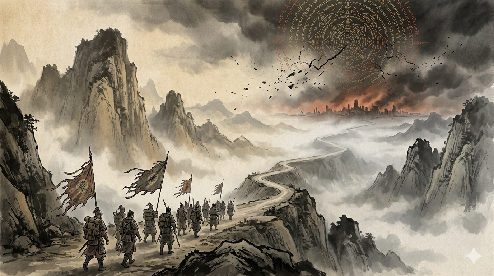
The Silence and the Long Road Home
The Eternal Empire rules through the Word — lexical magic inscribed in sacred texts and spoken by the Herald-Prophets of the God-king, whose voices can shatter stone or bind oaths into flesh. For centuries, the Godking's voice has echoed through every corner of the realm, carried by the Chorus, a living network of mystics permitted to learn the Lexicon. Then, the Chorus goes silent.
You command the vanguard of the Third Legion, tasked with bringing the Dalimyri Barrowlands — a distant, fractious backwater — to heel under imperial dominion. Three days into the Dalimyri hill country, your Choristers goes silent. With no word from command and strange lights on the horizon behind you, you made camp near a river the locals called the Drowning.
The war-host of the Dalimyri Summer Court hit you at dawn. Without the Chorus to sing its warning or echo the wrath of the distant God-king, without the Herald-Prophet's voice to rally the lines, six thousand soldiers became sixty scattered souls by noon.
Now you must lead what remains back across hostile territory: through the Barrowlands' many dangers, through the empire's rebellious periphery, through whatever nightmare has claimed the heartland, and arrive at the capital in time to matter. But that is a long and lonely road. The empire has taught you that foreign magic is heresy. Foreign arms are corruption. Foreign allies a pollution. Yet the empire is silent now. If you cling too tightly to imperial orthodoxy, you will die in these foreign hills, and your purity will be no help to those you left behind. The question isn't whether you'll compromise. It's how much of yourself — and your empire — will be left when you finally see the capital's spires.
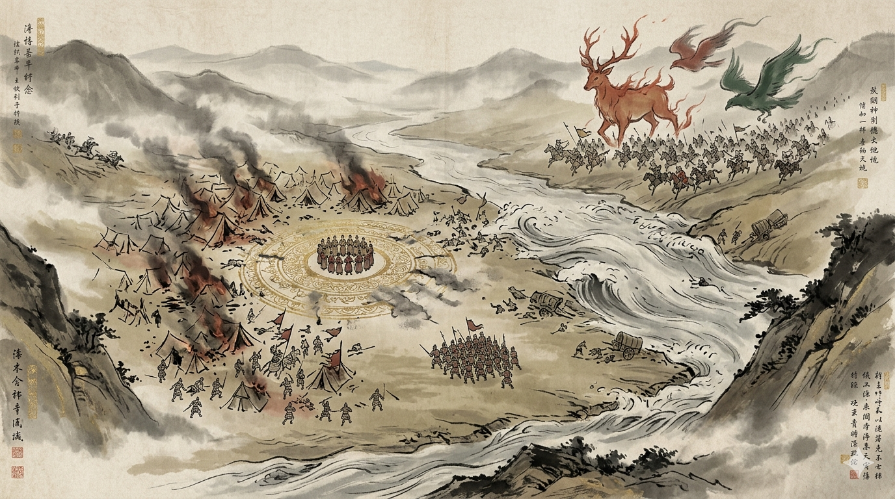
Characters
Act I — Playable Characters
The warband that remains of the Third Legion. Character introductions are visible freely; arc developments are sealed by act.
Act I — Character Files
Contains story events from Act I: Escape from Dalimyr.
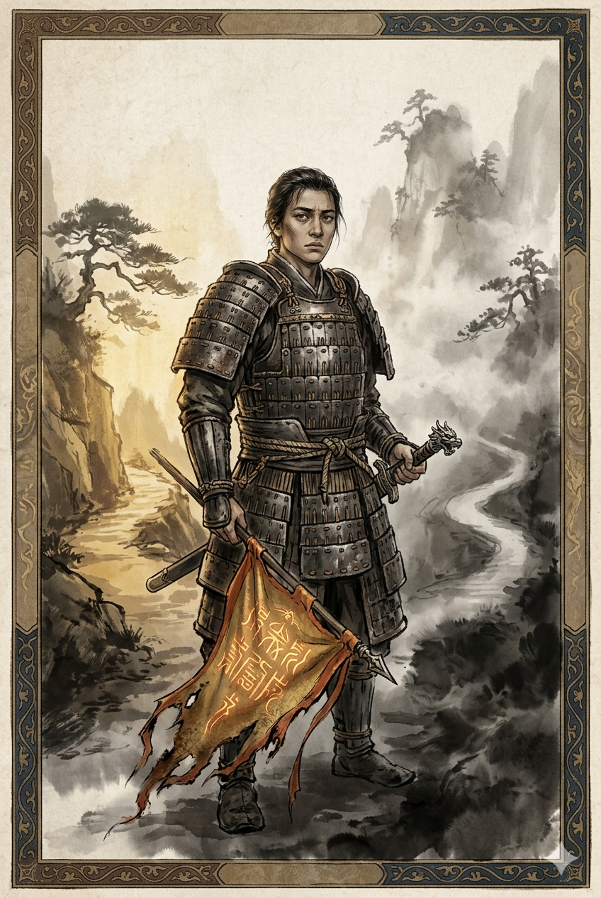
The Commander
The Commander -- (either gender, selectable at beginning of campaign). A scion of an aristocratic House of the Golden Zenith Concordat, the commander chose a life of service over one of leisure. Their father serves in the elite Praetorian Guard within the Forbidden Quarter, where the God-king's own feet tread the halls - one day the Commander aspires to such an honor. A true believer in the imperial creed. Intelligent and learned but raised in the heart of empire and oddly sheltered in some ways. Understands that the legions and the censors do ugly things, and has even at times participated in some of them, but firmly believes that those things are the price of the indisputable safety, stability and prosperity of millions of imperial citizens.
Act IV — Endings
Contains story events from Act IV: The Capital and endgame revelations.
Depending on the player's choices, may end the campaign a bitter and disillusioned cynic, a tortured but loyal servant of the empire, or a dangerously charismatic idealist whose optimism exposes the heartlands to foreign dangers (depending on one's view).
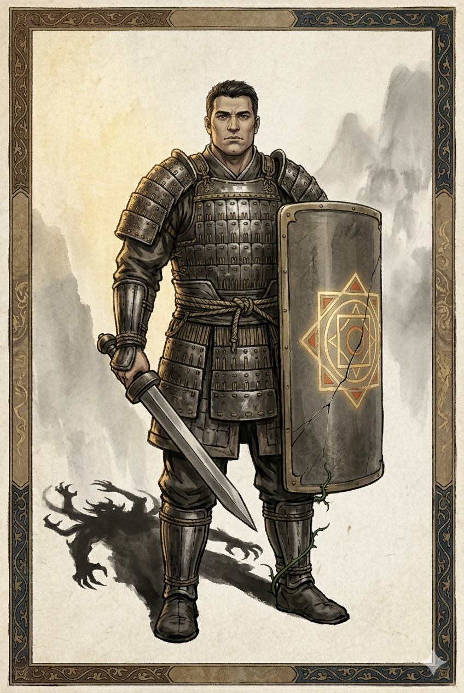
Casian
Casian, the Legionnaire -- Say one thing for Casian, say he is loyal. Loyal to the Commander, loyal to the Third Legion, and loyal to the God-king and the Empire. He's charismatic and a natural leader, handsome and an excellent follower, not arrogant. But he is Orthodox, and while he will follow his Commander's lead during a crisis, too much heterodoxy will frustrate him and ultimately undermine his faith.
Act I — The Briarthorn Torc
Contains story events from Act I: Escape from Dalimyr.
In Act 1 or Act 2 something will happen to him - he is crippled, cursed, maimed, paralyzed, etc. The Commander can choose to let him continue as he is (unable to fight, but will still give advice on the strategy screen) or he can, in an act of significant heterodoxy, use a dalimyri artifact from the Court of Spring - the Briarthorn Torc - to knit Casian's shattered body back together. Doing so makes Casian a Briarknight, restoring his health but also transforming Casian into what is, in his eyes, walking heresy. He will accept it if the Commander decides it is what needs to happen, but he will hate what he has become.
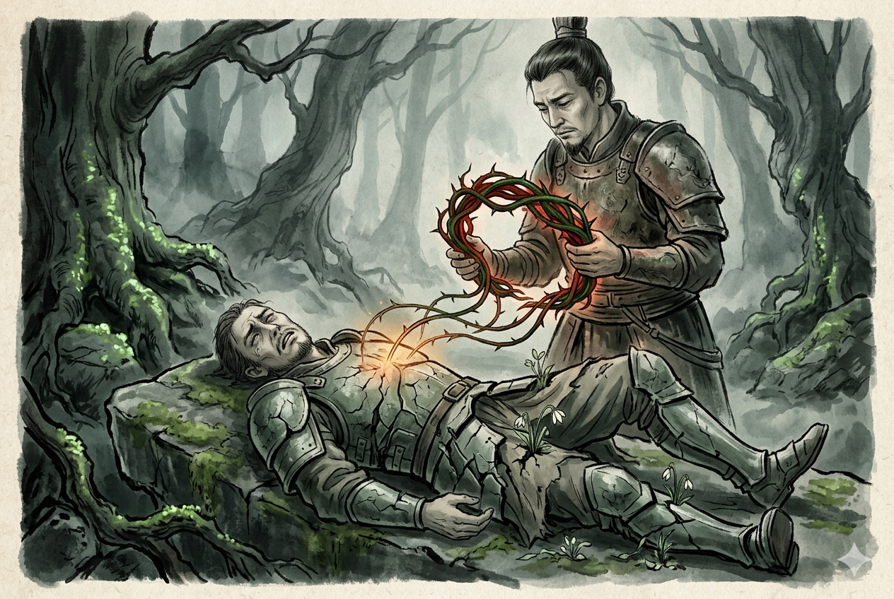
Act IV — Endings
Contains story events from Act IV: The Capital and endgame revelations.
Convert him to a briarknight and continue in heterodoxy and he will complain darkly; push him too far and eventually he will foreswear you, abandoning the warband and returning in Act 4 to exact his revenge - twisted by his bitterness into a monstrous, swollen hybrid of man and plant. Enough battles alongside the dalimyri phoenix knight will provoke a dialogue that might - perhaps - bring him some measure of peace and acceptance of his fate and heterodoxy, but it is a narrow path requiring a deft touch.
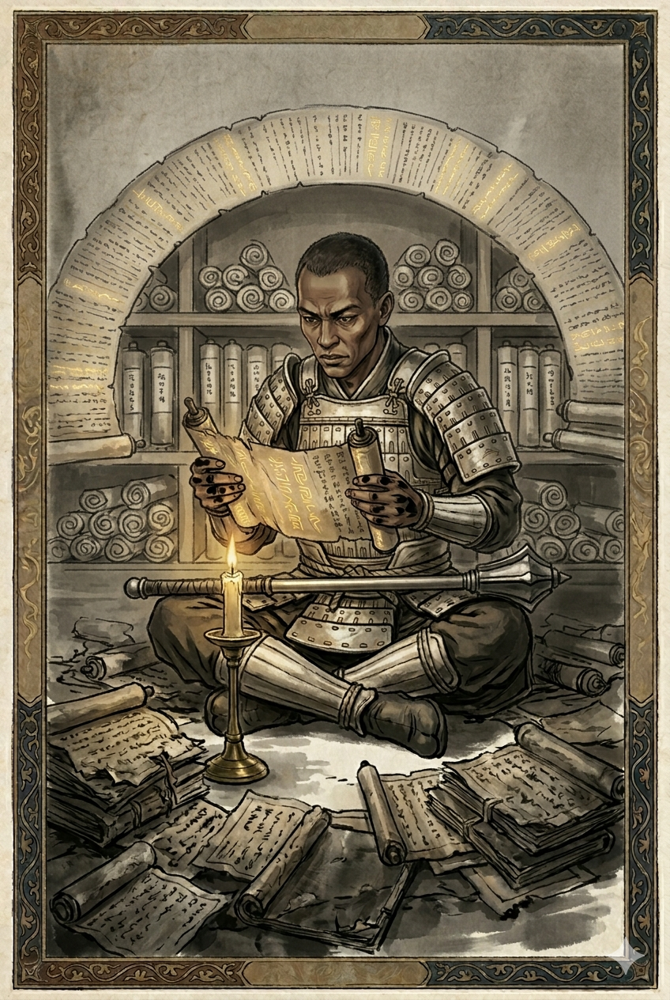
Draedan
Draedan, the Scholar -- natural voice of heterodoxy, Draedan has long had friendly relations with the Monastery of the Last Word (something that he does not consider disloyal but which the Censors most certainly do). The litany of Tarski defines this character; he's the ultimate Scout Mindset - no matter how bad or confusing the world is, knowledge is a good. Grew up desperately poor on the streets of the capital, but was given a chance when he was taken in by the Scriptorium to sweep their floors and so forth. One of the monks taught him in the evenings, painstakingly, how to read. This moment lit a fire in the child's mind; he read everything he could find, and in time his performance was so impressive he was taken in as a young scholar in his own right. Now he is working a tour of duty for the Third Legion, but in his heart Draedan cannot wait to hang up his blade and return to a research cloister.
Act III — Arc
Contains story events from Act III: Civil War.
Yet the tragic irony is that his commitment to understanding the world on its own terms may very well cost him access to the peaceful life of the mind he so craves. Mostly argues for Heterodox actions from a sense of devil's advocacy; if he serves an Orthodox commander he will accept being overruled with good grace, secretly relieved to have the decision taken from him. But if the Commander is open to heterodoxy, Draedan's commitment to the truth may lead them both into strange and dark places.
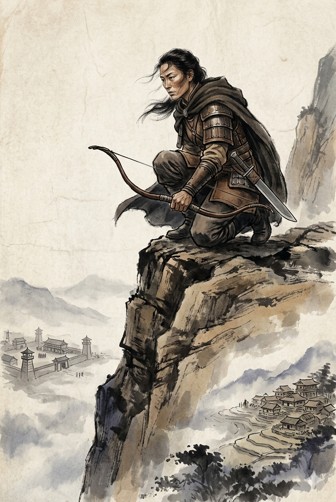
Ehani
Ehani, the Scout -- A Shanese from the high mountains, always subtly aware of her otherness. Does not have a particularly strong sense of her own Shan identity, as her parents were killed during the Annexation (unclear by whom - the story she was told is that they fought with the empire against a corrupt Dhar, but she's savvy enough to know that could just be a convenient fiction to tell a young orphan) and she was raised in a state-sponsored orphanage. Raised by the empire, given a home in the Third Legion, Ehani is no rebel but she is a realist - the empire has treated her well enough, but it has also left her a perpetual outsider; too Shanese for the imperials and too imperial for the Shan. Serves as a voice for unsentimental pragmatism - doesn't care about orthodoxy or other high minded ideals, will just ruthlessly pursue whatever is most likely to keep as much of the legion breathing as possible.
Act II — Arc
Contains story events from Act II: Navigating Shan.
In Act 2 has a chance to explore this side, depending on the Commander's guidance and example could abandon the party to join the Shanese rebels, ultimately taking the field against her own comrades, or she could embrace her Shanese heritage alongside a heterodox Commander, or she could turn her back on the Shanese and choose instead to accept the brutal logic of empire.
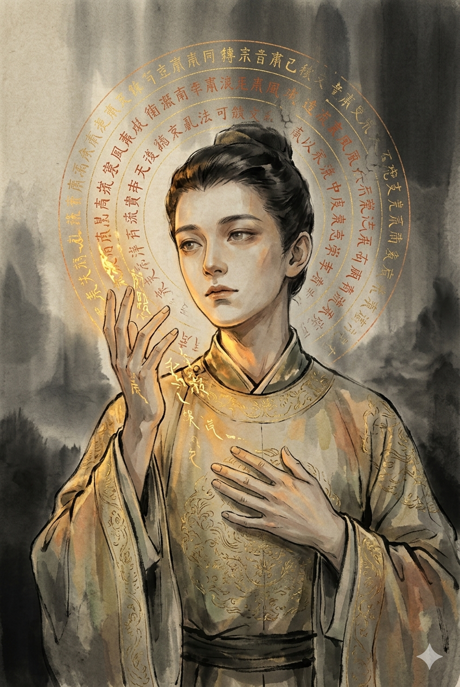
Aidra
Aidra, the Chorister -- distant, almost dreamy, oddly childlike at times. Always seems distracted, as if listening to music you cannot hear. Not devout exactly, but very intuitive; trusts their feelings and sense of surroundings even if that's not fully rational. Trusts the evidence of their (esoteric) senses over any particular orthodoxy. Having beheld (from a great distance) the blazing light of the Godking and communed with his voice, Aidra begins the game devout, but as exposure to heterodox practices and the Unwrought stack up, they grow less and less sure what to make of it all. Will lean on the Commander to help put their feelings and senses into some sort of context.
Act III — Arc
Contains story events from Act III: Civil War.
As the story progresses and the warband draws closer to the Capital, the distractedness becomes more and more acute; the thing on the throne singing into Aidra's mind.
Act IV — Endings
Contains story events from Act IV: The Capital and endgame revelations.
Many endings here: Could become an amanuensis, channeling forbidden powers from beyond reality, could end up begging the commander to take their life before they become too dangerous, could end up warped by the enemy in Act 4, betraying you all.
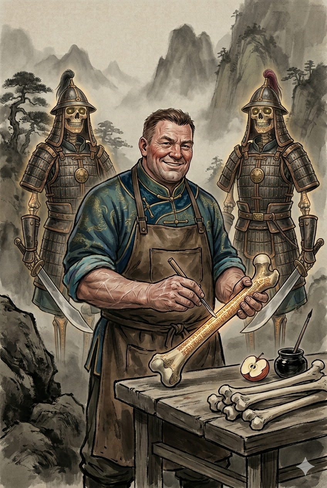
The Scrimshander
The Scrimshander -- A cheerful, foul-mouthed, blustery slab of a man. A bit like Scotty from star trek - prone to loud outbursts but good natured and reliable. Although a mage, he carries himself like an artisan, and has the calloused, chisel-nicked hands to prove it. Despite his blue-collar presentation, is actually extremely thoughtful and has chosen orthodoxy not out of inertia (like Aidra) or thoughtless loyalty for its own sake (like Casian), but rather from careful consideration of the intellectual merits of the position. Sees no moral issue with animating corpses to serve, though he well knows that other disagree. Also is not as gentle or reverent as one might expect with the dead - to him they are property of the God-king, tools of the empire; no craftsman worth a damn is careless with his tools, but neither does one refrain from striking a nail for fear of damaging the hammer.
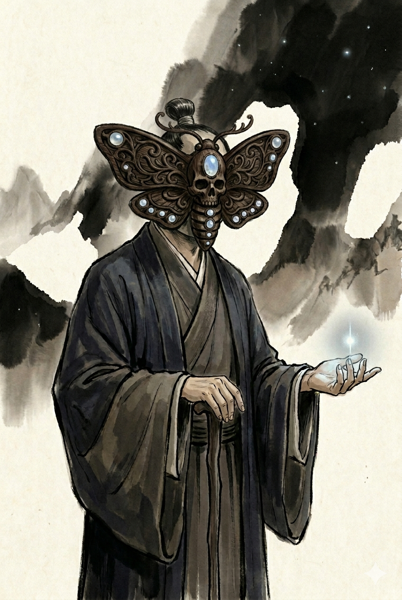
Elio
Elio, the Moonsinger -- a (metaphorical) spider with the soul of a poet. Autumn court. A trap-layer, a web-spinner: careful, thoughtful, a long term strategic planner who feels deeply but has carefully severed the connection between his sentiment and his actions. Serves the Moon spirit, which is far too large and distant to be awoken like lesser spirits, yet whose power is so great that even sleeping it can reveal what is lost. Elio is full of dark secrets about the spirit world, the Labyrinth, and what lurks in the darkness between stars. Deep communion with the Moon has attuned him to subtleties of mystical awareness others lack; he can feel what seeps into the world in the imperial capital and has some inkling of the danger there. Is not charismatic but is intelligent and deeply perceptive; his followers are called the Moonsworn because they go where he leads, though they feel themselves to be following the Phoenix-Knight.
Act III — Arc
Contains story events from Act III: Civil War.
Understands the eternal empire better than almost anyone, and does not hate it - but he knows the corruption at its heart, and cannot permit it to escalate. Very clearly perceives the genuine good the empire and the godking have done; the lives saved, peace preserved, knowledge attained. And just as clearly perceives the inevitable way the same virtues that enabled those triumphs have led inexorably to the crushing inhumanity of Annexation and conquest, the stultification and stagnancy of imperial learning and art, the arrogance and thoughtlessness of the imperial bureaucracy.
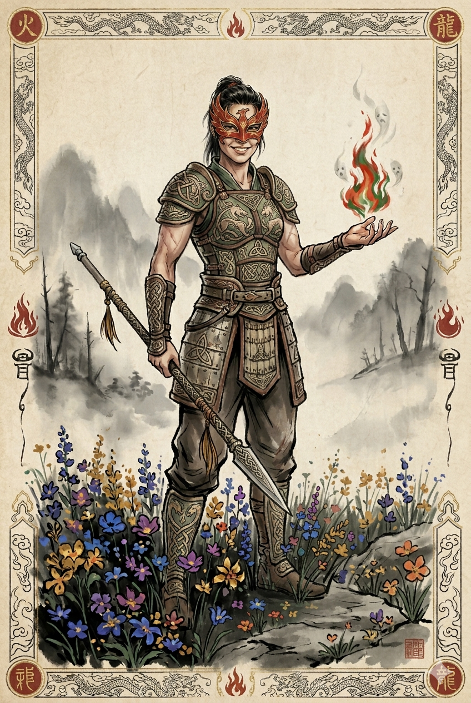
Soraya
Soraya, the Phoenix-Knight -- a rarity: a Spring-court Dalimyri with a calling - a passion, really - for leadership and war. A healer of such rare power that she can literally raise the dead, but who has turned that power to violence. A warlord, a charismatic leader who leads from the front. In many ways the Yang to the Moonsinger's Yin; she trusts him implicitly. Theirs is a powerful bond of love and trust of which romance is but one facet, although monogamy is rarer (but not unknown) among the Dalimyri, and they do not practice such exotic customs. Death is not the end for a Phoenix Knight, and if she is struck down, her burning spirit rises again to continue the fight. If she takes a life she can use the released energy to fuel a resurrection - even for herself - but it is strictly a life for a life.
Act IV — Endings
Contains story events from Act IV: The Capital and endgame revelations.
The obvious way that story ends is with both Soraya and Elio dead in the same battle, and her spirit forced to raise but one of them - and in that situation, there is no doubt she would choose to resurrect him over herself.
Act II — Characters Encountered
Act II — Character Files
Contains story events from Act II: Navigating Shan.
Garrison Captain Hamir Rahl (Act 2) -- Large man, heavy shoulders and arms, heavy gut. Goes most everywhere armored, as is his right. Ruddy complexion, red nose of an alcoholic. Keen poker face except when he's drinking. Utterly corrupt, will do anything to enrich himself, a bully who is obsequious to the powerful and vicious to the weak, resentful because his great grandfather was a lord in Shan, feels he is owed more than he has, but prefers to toady for the governor than risk a life of rebellion.
The Ardent - the first Shanese rebel the player encounters amid a group of Shanese being brutally harassed at an imperial checkpoint. Keeps their psyche abilities low-key as long as they can, but will quickly be found out. An ardent, and obviously so - driven by powerful emotions which are literally contagious - their hope, their righteous anger, and their fear seeps from them like water through a woven bag. Earnest, naive, passionate - idealizes the Shanese past, and finds the present disappointing compared to that ideal in every particular
The Goeticist
Option 1: an old woman, she was a child during the Annexation. She has quietly smothered her ambitions and resentment as a defense mechanism, but that bitterness still burns within her, buried as it is. When she finds that she can give it a face, leash it, and let it out, all hell will break loose. But can she keep control of a hatred so vast?
option 2: a youth, whose very real rage and fear threaten to overpower his tenuous self-control; there is a real chance his demons may end up leashing him, not vice versa.
option 3: a Good Man®, someone kind and patient and gentle, who has buried his negativity deeply beneath his (no less authentic) love. Excavating his own dark side is difficult and painstaking work, and reconciling himself to it threatens to break him - but perhaps there is a narrow road between refusing his demons and embracing them.
The Ricarian - a humble laborer, working the high terraced fields. She holds a library's worth of information on the history and fighting styles of an order of Ricarian Mindknights - it was implanted in her sleeping mind by her grandmother while she was a child. She doesn't even know what she knows - just that she dreams of a house, and in that house is a locked door, and what is behind that door she cannot guess. Never asked for this knowledge, or for the responsibility of being the last link in a chain of memory and learning a millenium long.
The Oneiricist - a stonemason who dreams of impossible architectures
The Auric venture-captain: a merchant, an adventurer, a swashbuckling rogue - he has a bit of Sir Francis Drake to him, and a bit of Sir Edmund Hillary as well.
The Taltasquan butcher-priest: dispatched by the Alkahest Syndicate to monitor and respond to the situation in Shan.
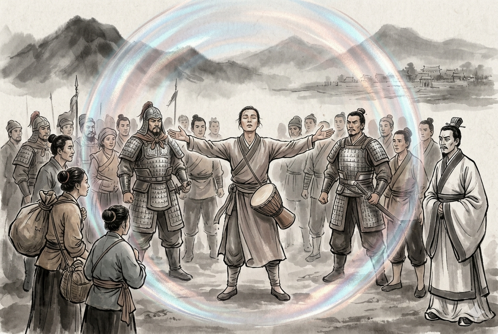
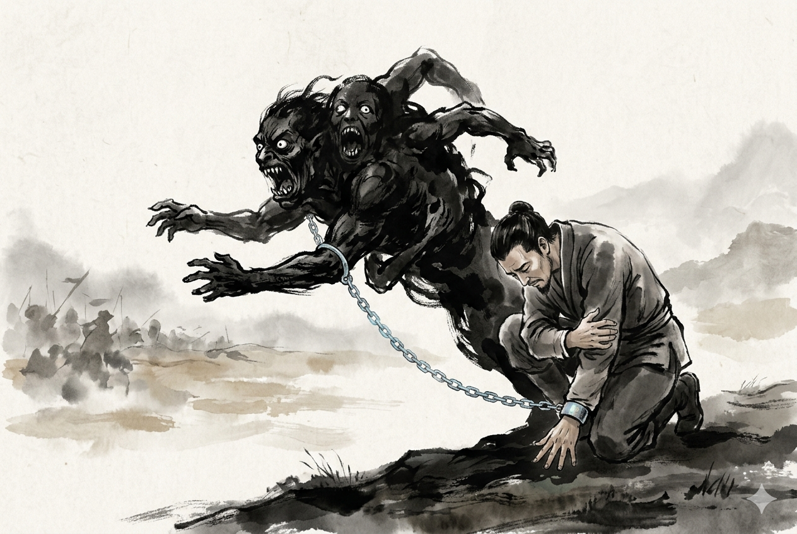
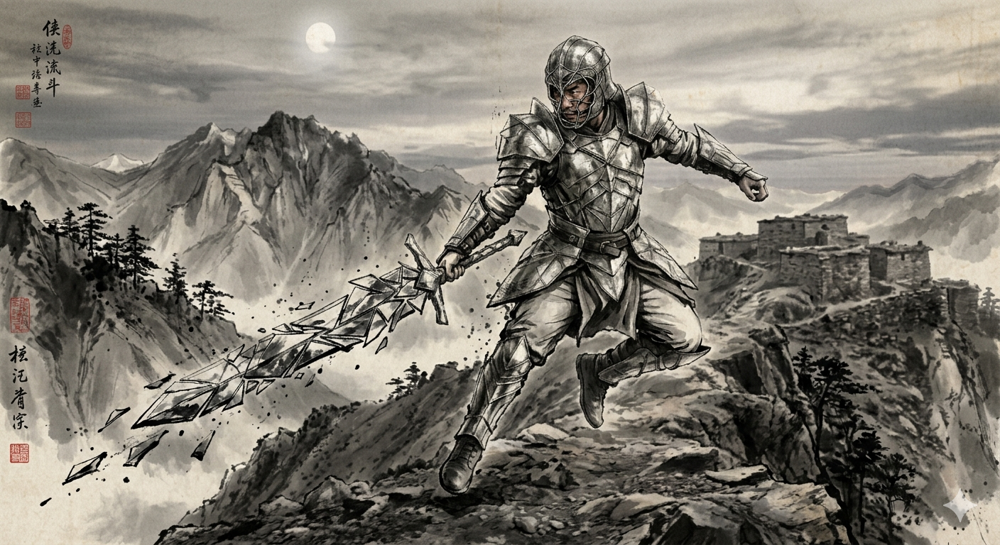
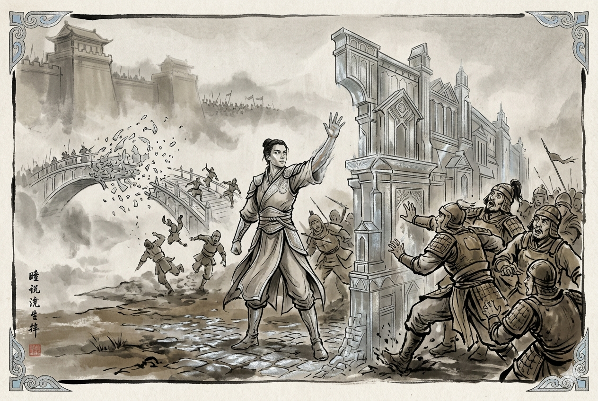
Act III — NPCs
Act III — Character Files
Contains story events from Act III: Civil War.
Master Mictlan Xin, a representative of the House of Honey and Salt (powerful charitable organization that heals, feeds and clothes the impoverished...but perhaps secretly pursues more sinister aims as well - they have long been a front for the Queenscult, squirreling away corpses of itinerants for future use) -- Seems like a gentle giant, hulking and physically powerful but quiet, and devotes his life to charity. Wears the traditional ceramic mask of the House (charity ought be anonymous) but it's a bit of a joke: there's no mistaking his build for anyone else.
Act Structure
Battle of the Drowning
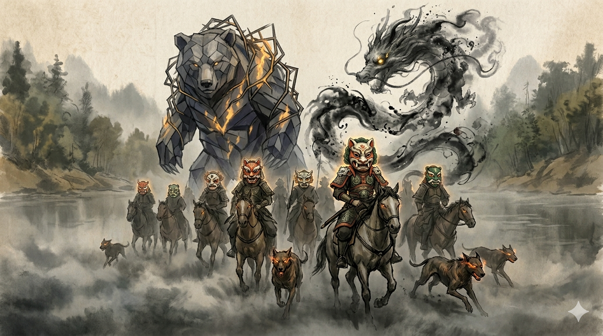
Begin in media res - "it's an ambush!" "'ware the flanks" "They're coming out of the river - oh godking it is the river!" "Where is the General?" "Stay clear of that fog - it's poison!"
Dialogue: Protagonist and Casian are cornered by Dalimyri, have to fight their way clear to get back to their company
Battle 1: Protagonist (currently nameless, equipped with medium armor, shield, sword, and Commander's Inspiration ability) and your second in command, loyal Casian (Legionnaire level 1, equipped with medium armor, shield, sword and Legionnaire's Mark), against four lightly armored Dalimyri Skirmishers. Map is tight, but one side slopes upward and simple collapsed tents create difficult terrain. Dialogue provides helpful tips - "Casian, take the high ground!" "Let us form a shieldwall, Commander - like at Arvenne" etc.
Battle 2: dialogue: Casian: "Commander, they're in the baggage train. We need to secure the Scriptoria!" Casian and Protagonist on one side of map, Draedan the Scholar is outnumbered but has wisely backed himself into a chokepoint to limit their ability to attack him, enemies are a half-dozen Dalimyri Skirmishers and a Thane. Casian and the Commander need to rescue Draedan before he is killed - tips include info on flanking, use of the Identify action, and the Scholar's Battlefield Medicine utility item. After battle is won, Draedan says the camp's Scriptorium was swallowed by the river itself - drowning most of the books and scholars both.
Interlude: Level Up! all characters become level 2
Battle 3: Casian: "Our company's encampment should be just ahead - dear godking" Commander: "We're not lost yet - listen - a Chorister yet sings." This map is larger than previous two, more complex, with burning tents for hazardous terrain and wreckage for difficult or impassable terrain. Two friendly npc legionaries (not controlled) have set up next to a new charact Aidra, a chorister and Ehani, a Scout. They are defending against four skirmishers, a berserker, a dalimyri spiritbinder, and worst of all - a war spirit like a grizzly bear made of flames caged by thorns. Every turn the war spirit degrades, and its HP goes down automatically. Additionally, if the spiritbinder is slain the spirit vanishes - both facts are revealed by the Identify Action. Amidst the battle, Casian: "Chorister! Is there word from Command?" "The Great Chorus has gone silent - there was no warning of ambush, and I cannot hear His Most Holy Voice at all." At end of battle, Casian: "Your orders, Commander?" Protagonist: "Fall back to the designated rally point; we will gather what survivors we can."
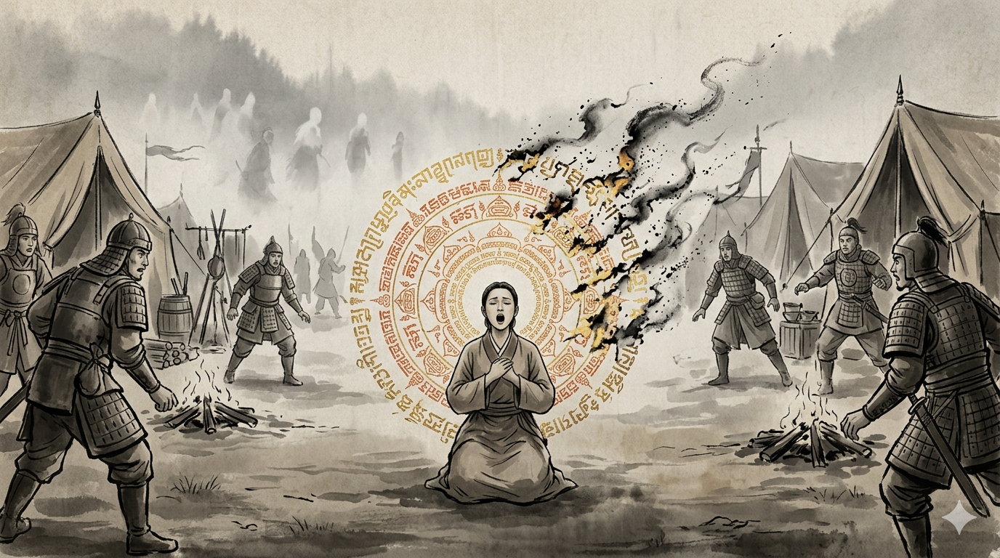
Escape from Dalimyr
Act I — Story Structure
Contains story events from Act I: Escape from Dalimyr.
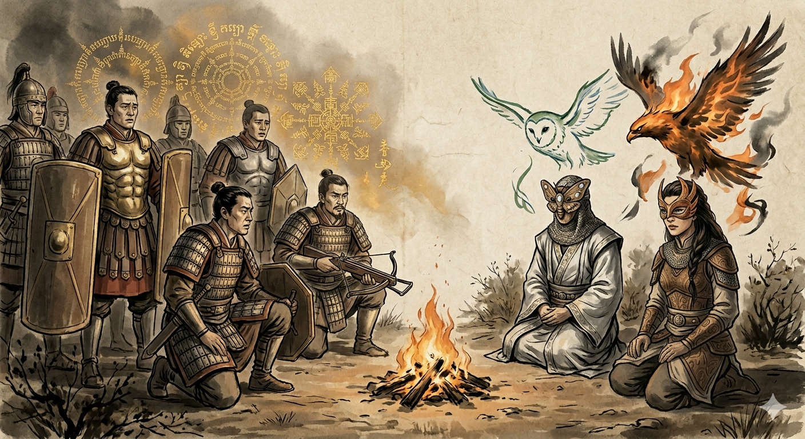
Introducing the company screen
Dialogue/narration establishes after three days, the Commander has assembled only a score of legionnaires; but they can wait no longer. Aidra cannot make contact with other officers, and the Great Chorus in the distant capital remains eerily silent. The commander and his score of battered survivors seem to be all that is left of the Third Legion. He gives the order to withdraw - "the conquest of Dalimyr and vengeance for the Third must wait; it is our Empire that needs us now."
the strategic layer opens up: the Commander can order any of the Legionnaires to cross-train (ie switch classes) into any of the Basic Classes, and can do so himself. Commander and named characters level up to three. Aidra says that normally a soldier would need to ritually cleanse themselves with years of prayer and preparation in the Temple of the Word in order to be trained as a Chorister, but given the dire situation she is willing to oversee training others in the arts of the Lexicon, if the Commander requires. Commander can also see inventory of equipment and can set loadout for each Legionnaire - both abilities and equipment.
world map screen is a point-crawl, like final fantasy tactics. There is a branching primary path of story battles (10-12 per Act), plus optional side battles for miniquests (~6?), and one or more repeatable options to play a procedurally generated battle against a specific enemy faction (in Act 1 that's the Dalimyri Summer Court) for modest rewards of xp and gear - suitable for grinding (if so desired), but the level cap makes this useful for training broad, not deep. There is a soft level cap - after hitting level 10, characters gain XP at a much slower rate, making it possible but difficult to grind more than a few levels; however there are ample opportunities to get your whole band of soldiers around 10.
If a character dies in battle they are gone and cannot be used again - permadeath. If a main character dies, their future critical dialogue will be delivered by a randomly selected non-main character, preferably of the appropriate class (or failing that, any random non-main character), and their non-critical dialogue, sidequests, etc are inaccessible. The one exception to this is the Commander themselves - if they die, the game ends. If a battle is lost entirely, characters' equipment are lost as well.
Part 1: Story Battles 4-6 - a desperate series of battles against Dalimyri Summer Court Hunters. In battle 5 and 6 Moonbound Dalimyri allies arrive to inexplicably aid you against the Summer Court; the Scholar theorizes this is some internal civil conflict within Dalimyr, while the Choristor says the Moonbound "sound different, somehow". Maps are large and hilly with dense groves of trees and tall grass, some battles the map begins with hidden traps in place on random tiles, set by Dalimyri scouts.
During Part 1, you can send scavenger teams to find supplies as a repeatable, procedurally generated battle.
Part 2: Before Story Battles 7 make a choice: follow the Scholar's advice to make a desperate dash for the Forest of Stones, a place even the brazen Summer Court fears to tread, or follow the Scout's advice to travel fast and light and as stealthily as possible through the Highlands.
Battles 7a, 8a, and 9a occur in the Forest of Stones. Maps are claustrophobic and cluttered with stone columns, petrified trees and spiderwebs.
7a fight Summer Court; when you win they turn back.
8a you fight feral spirits of wood (stag-like things of wood and bramble, fast, high ward and with a charge attack. Can passively heal each turn but low defense and vulnerable to fire) and stone (spiders made of splintered rock, slow, attack with a bite or a short-range web that immobilizes, high defense high damage reduction, but low ward and resistant to fire).
9a fight a boss-creature, the Spinner of Stone (huge stone spider-spirit, very slow but extremely high-damage bite, spins webs that immobilize enemies and drags them toward it, each turn births stone spirits. Dalimyri Moonsworn ride to the rescue to help in this battle.
Battles 7b, 8b, and 9b occur in the Highlands. Maps are wide open and mostly without concealing terrain, but with significant altitude differences including some sheer drops and impassable barriers.
7b fight Summer Court warriors and raptors - their great birds navigate this terrain easily
8b fight Summer Court warband - Lancers (mounted enemies that just behave like large-size foes) and Autumn Court Hosts - witness them becoming possessed
9b night battle - an Autumn Court ambush. Every character is considered to be in concealing terrain due to the lighting conditions. A riotous group of Autumn Court Hosts, raptors, assassins and Spirits of the Hunt - great hounds only partially real with smoldering fires where their eyes should be (cause fear, get a bonus to attack at night that offsets the darkness penalty "they have night eyes", fast and hard hitting, especially in groups but not that tough. Fear is a stacking penalty to attack and defense, get bitten by several hounds and you'll be taking big hits to both). The Moonsworn dalimyri ride in to the rescue here.
Part 3: Before Story battle 10 the first big decision-moment. extended dialogue between empire characters and two moonsworn Dalimyri - the Moonsinger and the Phoenix Knight. They say the Moonsinger hears something awful calling from the Capital. You are deadly enemies, but in the face of such as that, they offer not just truce but cooperation. They insist you'll need their help by the time you make it back to the capital, and they're willing to ride with even you, their hated foe, to provide it. Do you trust them? And even if you want to, fighting alongside them, tolerating their foreign spirit-binding, is heterodox; it's unclean. But as Rakdos, in a desert you take what water you can find.
Take the deal: Take a big heterodox hit, Unlock the Spiritbinder class, gain two unique dalimyri characters (until Act 2 you can control them in battles but not in camp, no messing with the build or gear yet) - a spiritbinder/moonsinger and a scout/phoenix knight. Also gain ~6 Moonbound dalimyri characters of various starting levels and classes (except legionnaire and chorister) who you can control and train normally (including training as legionnaires or choristers, although teaching the Lexicon to a foreigner is a second big Heterodox hit). Fight battles 10a and 11a.
Mission 10a: Summer Court hunters have set up a camp in the Drowned Valley, hoping to catch the imperial survivors. But before they can fight, the Drowned river must be pacified, or it will surely rise and join battle against us. Moonsinger knows a sacred cave where the spirit can be summoned. Battle is in a cave, lots of altitude variation and difficult terrain. The Boss is the spirit of the river itself - it takes the form of a vast serpent-dragon made of rushing water and it is far too mighty to take in a straight fight. Fight stone spirits and water spirits and try to survive the invulnerable dragon's attacks. Get the Moonsinger to the four altars in the four corners of the map before the river drowns and pulverizes you all.
Mission 11a: Dash for the bridge: final climactic fight against the Summer Court - spiritbinders, a thane, raptor, a Chosen of the Summer Court, skirmishers and warriors. The Chosen has harsh words for the Moonsinger, who pleads her case to no avail. The Chosen tries to call on the River spirit, but finds it is slumbering. Significantly outnumbered, but the Heroes win when they get all surviving soldiers into the 'bridge' zone - which they cannot access until they deal a significant amount of damage to the gate, clearing the way. Then the Moonsinger calls on the spirit of the Drowning and it smashes the bridge behind them - free of dalimyri lands once again.
Grindable Mission: Hunting expedition - procedurally generated battle on one of 2-3 maps, versus wild animal enemies.
Side quest 1: the Chorister requests to follow a mysterious song only he can hear coming from the Red Fens. This leads to an optional battle against swordwraiths and crazed spirits of the unburied dead - winning the battle unlocks some excellent equipment, and reveals a follow-up battle against the the Red Lord, the genius loci of a major battlefield where the Second Legion were lost decades ago. The battlefield is full of un-propitiated dead, and their maddened ghosts are a major danger that the Dalimyri have
If unlocked, the Dalimyri will report shamefacedly that the imperial dead were left here to fester; this was vengeance for the burning of Summermount and a calculated gamble to let a powerful and dangerous spirit flourish in the barrowlands that could be manipulated into fighting future imperial incursions. It's a dangerous fight but a spirit of such power would have valuable equipment, and on a moral level protecting the Dalimyri/recovering Imperial dead would be a great good [Gain Orthodoxy].
Sidequest 2a: appease the spirits of some scavenged dalimyri weapons to make them tier 2. Mission begins with the commander and the moonsinger at a shrine - moonsinger summons the spirits of the weapons which take form as warrior-spirits (loosely humanoid figures of floating steel shards and smoke), and the commander has to propitiate them with an offering of sacred oil and a bow, awkwardly (and heretically). Then, leaving the shrine, run afoul of a group of spiritbinders of all courts. They are appalled at the moonsinger's blasphemy, summon spirit allies of their own, and attack. Battle is Moonsinger, Phoenix, Cassius and Commander plus four weapon spirits against 4 spiritbinders (spring, summer, autumn, winter) and their four spirit allies (firebird, winter bear, spring willow, autumn hound)
Side quest 3a: Ehani reports more survivors of the legion nearby. These survivors are led by a very orthodox Chorister. They label you traitors for having made common cause with the enemy after they butchered the Third. Fight! After you win, choose to execute them for disobeying your orders, let them go their own way but disarmed (you get their gear but it is dangerous to be unarmed in the Barrowlands), or let them go keeping their arms (in which case they will reappear in Act 3 to testify to your loyalty to the empire at a critical moment).
Side quest 4: Cassius is poisoned or cursed (legs turned to stone or something) or crippled in battle, sidequest to steal an artifact of the Spring Court which can be used to knit his broken body back together again - but be warned, he will not be wholly human after that. (turns cassius into a briar knight and opens up that advanced class for others)
Refuse the deal: the moonsworn leave (will return in act 4). Cassius reports that your troops are heartened at your resolve, all orthodox units (legionnaire and chorister) begin fights 11b and 12b with Zealous (advantage on attacks and damage rolls) and Heartened (+10 hp).
Mission 10b: Raid on the Shrine - Scout reports that the dalimyri have made camp in the valley of the drowned. Scholar hatches a plan: raid a nearby shrine to capture a spirit-bell. Deface it with lexical magic. Then launch a frontal assault on the Dalimyri camp and sound the bell to madden the spirits and escape among the chaos. The the map is the same as Sidequest 2a - fighting dalimyri temple guards and guardian spirits.
Mission 11b: final climactic fight against the Summer Court - spiritbinders, a thane, raptor, a Chosen of the Summer Court, skirmishers and warriors. The Chosen calls on the spirit of the Drowning, which takes the form of the dragon from 11A - then the heroes sound the defaced bell and the riverspirit goes mad and begins to lay waste to the whole area. Plays like 12A - high hp gate, escape by getting all living soldiers to the bridge, but this time with a huge dragon-spirit attacking aoes randomly, killing dalimyri and imperials alike, plus the mission is on timer - after 10 turns, the bridge will give way to the rage of the river spirit and the campaign is lost.
Grindable Mission: called something innocuous like Foraging missions, but the reality is you're raiding Dalimyri villages - battlefields feature burning tents, slain civilians. Fight randomly generated dalimyri forces.
Side quest 1: the Chorister requests to follow a mysterious song only he can hear coming from the Red Fens. This leads to an optional battle against swordwraiths and crazed spirits of the unburied dead - winning the battle unlocks some excellent equipment, and reveals a follow-up battle against the the Red Lord, the genius loci of a major battlefield where the Second Legion were lost decades ago. The battlefield is full of un-propitiated dead, and their maddened ghosts are a major danger that the Dalimyri have
If unlocked, the Dalimyri will report shamefacedly that the imperial dead were left here to fester; this was vengeance for the burning of Summermount and a calculated gamble to let a powerful and dangerous spirit flourish in the barrowlands that could be manipulated into fighting future imperial incursions. It's a dangerous fight but a spirit of such power would have valuable equipment, and on a moral level protecting the Dalimyri/recovering Imperial dead would be a great good [Gain Orthodoxy].
Sidequest 2b: rescue the Scrimshander - Scout reports Dalimyri clashing with the walking dead - this is great news! A scrimshander must have survived the Battle of the Drowning! Now a chorister/scrimshander and his many undead are being attacked by a huge number of Spring Court Dalimyri (specialize in healing and buffs). Fight through them and get the scrimshander out alive to get him as a permanent character.
Side quest 3b: Ehani reports more survivors of the legion nearby. These survivors are led by a very heterodox scout. They fear you will attempt to execute them as defectors - fight! After you win, choose to execute them, let them go their own way but disarmed (you get their gear but it is dangerous to be unarmed in the Barrowlands), or let them go keeping their arms (in which case they will reappear in Act 3 to testify to your loyalty to the empire at a critical moment).
Side quest 4: Cassius is poisoned or cursed (legs turned to stone or something) or crippled in battle, sidequest to steal an artifact of the Spring Court which can be used to knit his broken body back together again - but be warned, he will not be wholly human after that. (turns cassius into a briar knight and opens up that advanced class for others)
Act 1 Gear
All gear should use Souls-like storytelling to fill in some detail of the world without exposition-dumping.
Tier 1 items: the weakest in the game (naturally, they're starting gear) - these are salvaged Empire weapons and armor and scavenged Dalimyri weapons. If you ally with the Moonsingers, they explain that the reason the stats are bad is "that those weapons hate you", take a heterodoxy hit to soothe the spirits of some items to turn some of them into tier 2 items before the final mission.
Examples, each of which gets 1-3 sentences of evocative description and world-building:
Battered Gladius (knife) - "While duelists often prefer heavier weaponry, the legions are masters of close-in fighting. They prize the speed and precision of the humble gladius, and the forges on Mt. Pathra have created many hundreds of thousands of them. Recovered from a Dalimyri battlefield, this one has seen better days, but it is still perfectly serviceable."
Worn Scutum (shield) - "Even the dullest legionnaire has it drilled into them that a shield doesn't exist to protect you, it exists to help you protect the man beside you. In battle, these heavy and oversized shields form the overlapping scales of a great, thousand-handed beast of muscle and steel."
Scavenged Ritual Knife (knife-dalimyri)
Patched Musculata (medium armor)
Scorched Spirit-Shield (a dalimyri implement which adds to Ward)
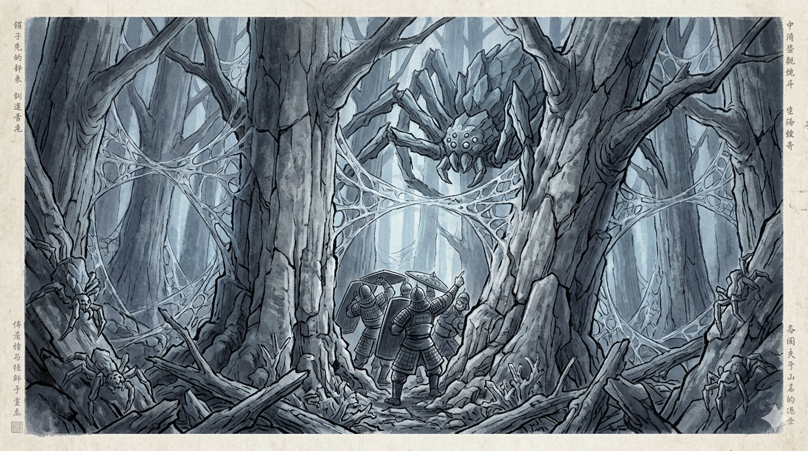
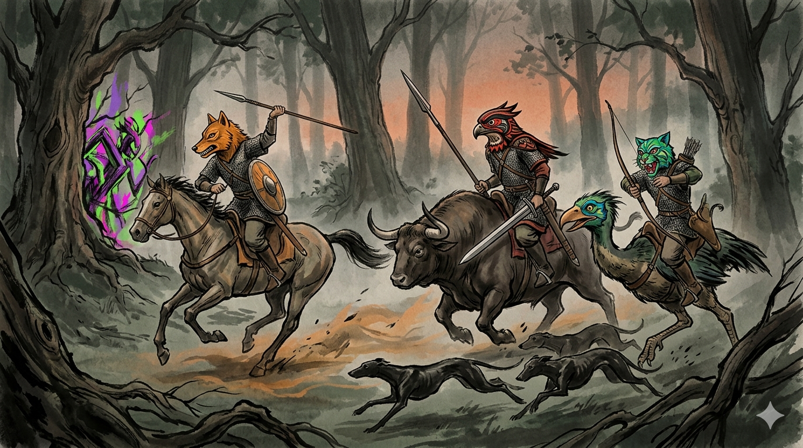
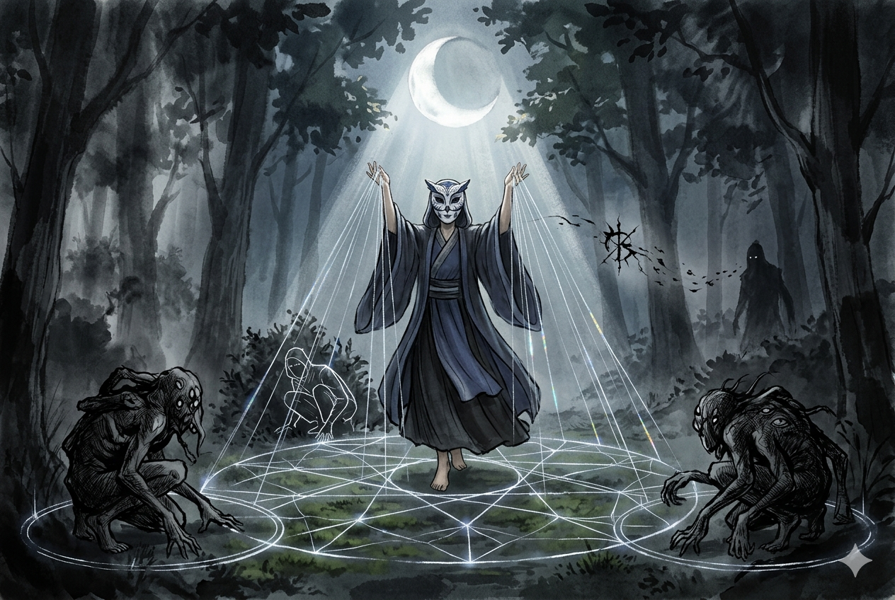
Navigating Shan
Act II — Story Structure
Contains story events from Act II: Navigating Shan.
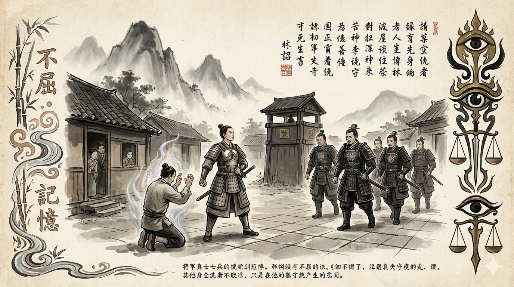
Act 2 takes the survivors of the Third Legion into an outlying province of the Empire - Shan. Annexed some forty years ago, it is a relatively poor mountainous land, where flickers of rebelliousness are still glimpsed - with the Chorus gone silent and the legions in disarray, the Shan rebels may well seize their chance.
The central thematic question of Act 2 is whether to support the Shan rebels or the Imperial governor. But this shouldn't be a caricature with cartoon villains versus brave heroes on either side. And the temptation has to develop slowly, not all at once - so at first the question is "protect these seemingly harmless Shan civilians (you don't know one is a rebel or practices illicit psyche magic yet) against these (admittedly brutal) soldiers of the Censorate?" Then the next step is "do you turn over this Shan citizen you just rescued when he accidentally demonstrates he is an ardent while he's helping you save the other civilians from bandits?" Then "Do you let the ardent teach your people some of the principles of psyche, even though that's technically illegal?" then "do you protect him against outright arrest at the hands of the governor?" then "now that you earned his trust by fighting the authorities, do you accept his invitation to meet with other good people (ie, the organized rebels)?" then "do you help the rebels protect the Shanese civilians against the governor?" then "Do you protect the rebels themselves when the governor's men stage a raid?" then "Do you help the rebels attack the governor's private jail to free some unjustly imprisoned Shanese (and also some of the rebels that have been captured)?" then "Do you help them assassinate the obviously panicked and tyrannical governor?" and only then "now that the governor is dead and you're in this deep, do you help them declare outright rebellion and break imperial power in the province?" And this plays out reversed if you back the empire, with you fighting on many of the same maps but against the rebels - ambushing them in their secret safehouse instead of defending them there, protecting the governor against assassination, etc.
Similarly, this dynamic is heightened as you are exposed to the most innocuous psyche stuff - an ardent using an aura of hope, say - then to oneiricists creating short-lived but impossible and occasionally disturbing objects or creatures - then to Goetic practices that embody the practitioner's sins and nightmares into dream form, leash them to their will, then use psyche to externalize them, girding those ideas in impossible surreal physicality, resulting in chained monsters of incarnate nightmare.
So why back the Governor?
Well, for one Psyche magic really is incredibly dangerous - to the practitioner, to innocents around them, and to the Empire - and probably should be subject to some kind of control. Even if practiced responsibly (ie not letting your incarnate demons run loose or dropping into a permanent dream-coma), it provides such temptations - reading or stealing memories, creating the impossible - that one can never really trust the practitioner after that - after all, how do you know they aren't editing your memories?
Second, it is an uncomfortable truth that Shan under the rule of the Dhars was deeply insular and impoverished - for the most part the Dhar enjoyed impossible luxuries in their dream palaces (and much more modest but real comforts in their castles in the waking world) while the peasantry toiled in harsh conditions barely above subsistence. The Empire has brought roads, grain from the lowlands, imperial tools and goods, even terra cotta laborers, measurably improving the quality of life for the average Shanese - albeit at the cost of their independence, history and cultural identity, and under continual threat of 'reeducation' at the hands of the Censorate.
Ideas for Location names: forest of hungry ghosts (Act 2 - Valley of Hungry Ghosts or Act 3)
enemies: shanese rebels or imperial garrison, reclusive mountain-dwelling nonhumans (trolls?), awakened and enraged spirits, unbound nightmares
Gain access to merchants, where you can buy and sell goods (finally). If you are too heterodox, the imperials won't be willing to trade with you, but the Auric and Taltasquans will trade with anyone except each other. Each of these sides offers a sequence of quests, each of which earns you favor with one side - enough favor unlocks new faction-specific gear in the shops. After a certain amount of favor is gathered, you are offered an optional faction capstone quest, which involves you fighting the other merchant faction, permanently closing you out of their shop(s) but unlocking the Auric and Taltasquan Advanced classes for this playthrough.
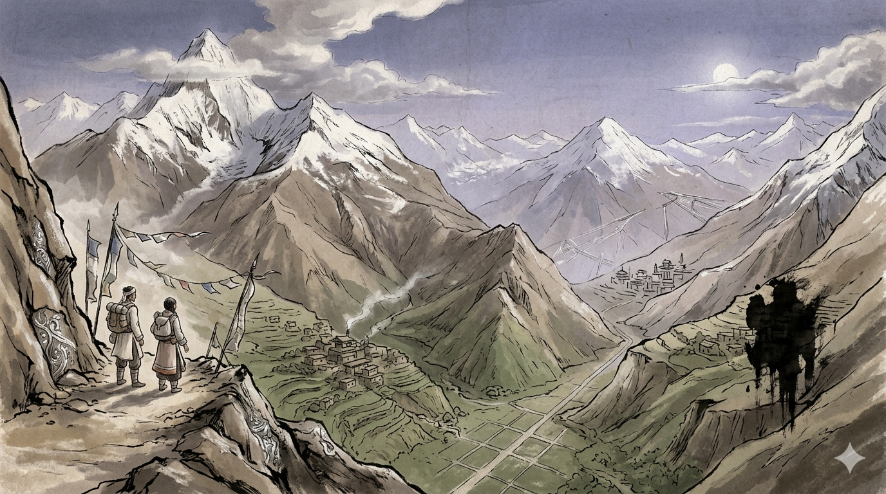
Civil War
Act III — Story Structure
Contains story events from Act III: Civil War.
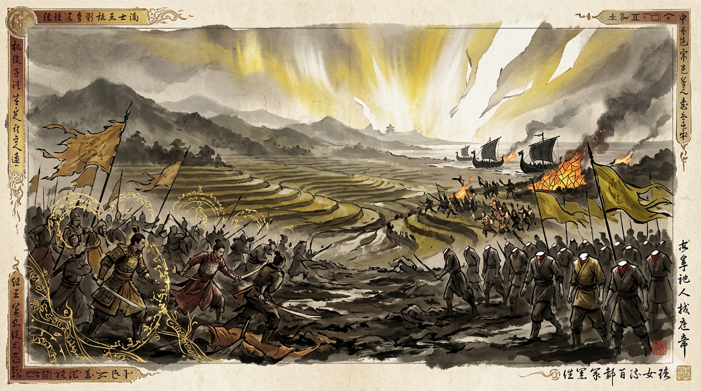
Dissolution of the empire. Taiping Rebellion-style religious revivalism centered on the Empress-in-Yellow and the Queenscult (Act 3), complicated by the presence of multiple competing fleets of Turathi raiders (a bit like Norsemen, they feud with each other as much as they raid your empire; a savvy and unorthodox commander could ally with one fleet to obtain support he can use against the others.
Act 3 takes place in the imperial heartland. The major narrative arc here is that this is when you begin to understand the depth of the crisis, and by the end of the arc it should be clear to the player that the empire is unraveling in a way hat makes it already beyond saving. The rebellious provinces are seceding (like Shan but also one or two other get name-dropped), long-troublesome raiders like the Turathi have come pillging, treasonous conspiracies of religious fanatics are emerging from long hiding, normal institutions of power and control have either failed or in the case of the Choristers become monstrous and inhuman dangers to everyone, and the Houses of the Golden Zenith Concordat - be they desperate, myopic or ambitious - have already begun fighting each other for control. Absent the godking's sustaining power and the institutional caretaking of the imperial bureaucracy, great works like dams have begun to fail, and there is simply no one with the ability to repair what is broken - the best that can be hoped for is failing gracefully instead of catastrophically. The most stable forces amid the chaos are the young powers of Taltasqua and the Auric League, who are already capitalizing on the chaos to build footholds in the region which can be weaponized amid their ongoing cold war with each other. Will your lands join one of them, becoming subject to foreign rule, or will they try to hang on to their neutrality, and risk facing uncanny dangers with no one to call for help? Among this, the player first inherits a band of refugees who place their faith in him to lead them out of this insanity in one piece. The story takes a moment to visit the Commander's ancestral fiefdom, where their mother is desperately attempting to stabilize the situation in their lands, even while the empire disintegrates around them (this is where any surviving refugees can be safely deposited before the warband enters the hellish Capital and Act 4).
First third of the act revolves around protecting (or abandoning) a refugee band until you can get them to safety. Part 2 is largely structured as a four-way battle between an ultra-orthodox faction of the imperial bureacracy emphasizing purity and planning to level the capital, an emperor-loyalist faction of the bureaucracy willing to discard the orthodoxy in favor of following the Godking wheresoever he takes them, even unto the darkness beyond the world, several influential Houses of the Golden Zenith Concordat choosing this moment to shrug off the stultifying hand of the bureaucracy, and a long-hidden conspiracy of Queenscult followers, who believe (correctly?) that the empress in yellow never died, and now march with an army of long-dormant headless corpse-legions to dethrone the would-be-god once and for all. The final third of this act involves helping one or more Golden Zenith Houses (including the Commander's own mother) decide between joining the Auric League, kneeling to the Taltasquan hegemon, and attempting to thread the needle by surviving while neutral.
A side quest revolves around the Monastery of the Last Word, its Knights-Chandler, and hints at what is to come in Act 4.
Draedan’s Monastery of the Last Word has fragmentary knowledge of what’s really in the Forbidden Quarter — incomplete, possibly wrong in its specifics, but gesturing at the truth — then the player spends Acts 2 and 3 with a growing suspicion that the foundation is rotten. That transforms the Heterodoxy choices from “pragmatic compromise vs. principled purity” into something heavier: “how do you act when you suspect the whole framework might be a lie, but you’re not sure yet, and people’s lives depend on your decisions right now?”
Enemies: rival imperial factions, queenscultists and headless legions, turathi raiders capitalizing on the chaos, possibly auric or taltasquan forces if you side hard enough with one side over the other, brotherhood of the fox bandits, possibly knights-chandler from the monastery of the last word violating Censorate orders to protect invaluable but dangerous knowledge, insane Choristers singing blasphemous Unsongs from beyond reality - harbingers of the coming of the Unwrought.
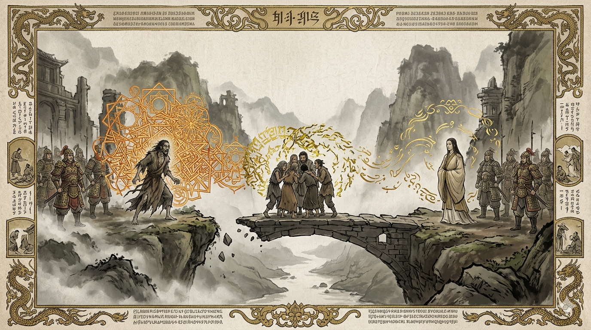
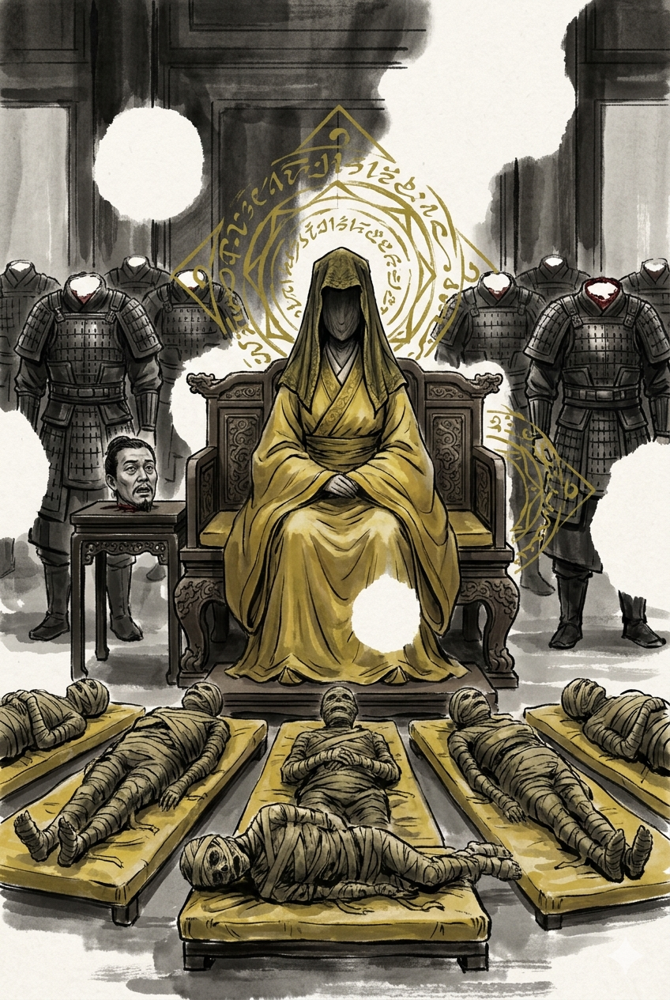
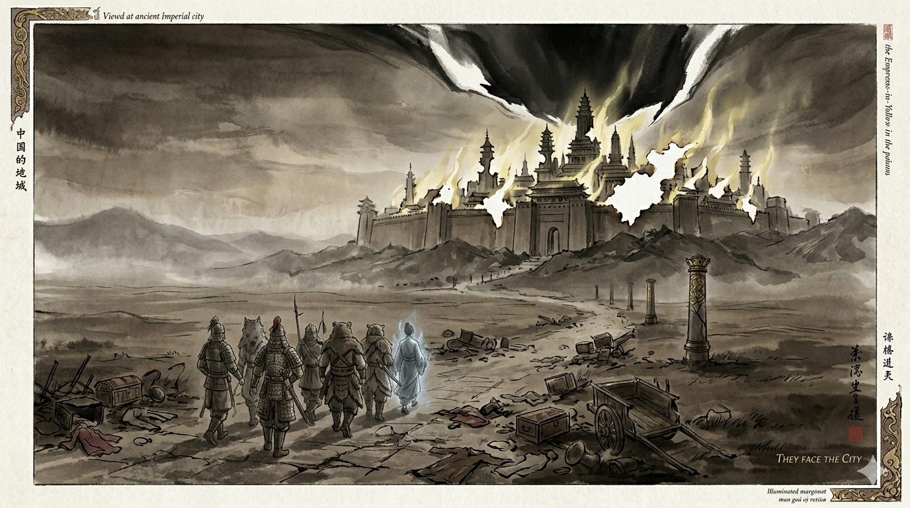
The Capital
Act IV — Story Structure & Endgame
Contains story events from Act IV: The Capital and endgame revelations.
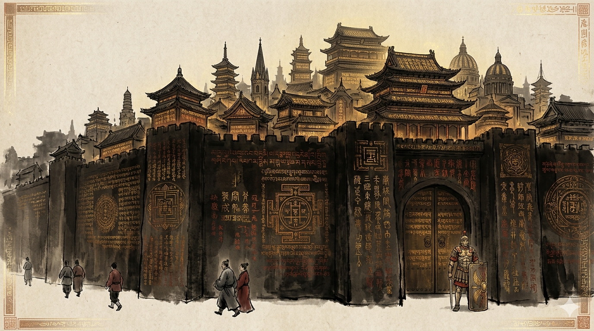
The entirety of Act 4 takes place in the imperial capital and the Forbidden Quarter, culminating in a series of battles within the Divine Palace itself. Emotionally the tone is fraught - some of the most faithful characters may hold out hope that divine intervention can save the empire, but that hope is fading with every step into the twisted ruins of the Holy Sanctum. This is where the Commander's father still fights as part of the beleaguered Praetorian Legion, desperate to prevent a tide of unholy monstrosities from spilling out into the wider world - when the Commander is reunited with him it will be a deeply tense interaction, as it becomes clear his father, and indeed all the praetorians, knew the truth of the Godking yet kept their silence. And if the Commander has turned Heterodox, it may be worse than that - the Praetorians will never forgive the Dalimyri for touching off the cataclysm that has claimed their god and their empire, and many will employ their considerable skills to fight them on sight. There is a version of events where an Orthodox Commander reconciles with their father and gains him as the last recruitable character, and through him access to the Praetorian epic class. There is another version of events in which the Commander's father dies fighting his comrades in an attempt to cover his child's escape into the catacomb depths. There is even a version of events in which the Commander slays his unresisting father, though there is no outcome in which the Commander's father will betray them.
Endgame: So what happened to the Empire?
the inciting incident for all this is an outside attack: the Dalimyri Autumn Queen came here ready to kill a god. She did not fail, but no one could characterize this as a success.
The truth: the god-king's singular knowledge and talent with the Lexicon is the result of a proverbial deal with the devil, resulting from communion with the Unwrought, what he calls in his private scriptures "the chorus of whispers". Perhaps he had good intentions once, but now he is a living foothold in reality for them, and much like a Dalimyri host that has lost control of a possessing spirit, the Unwrought will not permit him to unmake himself. He has been fighting a long, losing battle over the last three centuries, attempting first to cure, then to circumvent or finally at least to forestall the inevitable. He had become a walking thinness in reality, the skin of the world stretched tight almost to breaking near him like a living barrowmaze, which is why he limits himself to the forbidden quarter. The shadows in the Quarter grow dense and bright as alien geometries unfold like flower petals and nameless things slip out. The elite Imperial Praetorians don't exist to protect the god-king from outside threats; what need has the divine of mortal swords? No, the Praetorians have a different purpose - they fight a silent, losing battle to keep the things the god-king's presence allows to seep through the skin of the world confined to the Forbidden Quarter and the shining, fractal, impossible geometry of the catacombs beneath it. And every year the effects worsen, the catacomb's labyrinthine depths grow unnaturally larger, more dangerous, and the god-king's power frays a little more. It was only a matter of time until this unstable situation unraveled completely, but no one was ready for the Dalimyri counter-strike when it came, or the effect it had on the tenuous balance within the Forbidden Quarter.
If an Autumn Queen needs to prosecute a war, or to complete a war that her Summer predecessor started, she plays dirty. She enlists the Winter Court to supply her with all the information that can be found by means fair or foul on the enemy’s weaknesses. She searches out the loopholes in the oaths binding her foes. She uses bait and false retreat tactics to lure hunters into arcane traps. She uses sorcery to obliterate magically weak opponents, and dispatches Summer Court warbands to overrun physically soft targets. She terrifies the sleepers and plagues the wakeful. She disdains glory and honor for shock and awe. The logic is clear: If she utterly destroys her enemy’s appetite for conflict, she’ll have to fight only one battle during her reign. This was the strategy marshaled against the Eternal Empire; her divinations showed that great forces were held in precarious balance within the Forbidden Quarter, though the details eluded her. And so while she left the Summer court to fight the Legions head on in the Barrowlands, she personally led a cabal of her most skilled spiritbinders and her deadliest winter-court assassins into the depths of the Forbidden Quarter on a mission to disrupt that tenuous balance, disrupting the Empire's ability to make war on her people. Clearly she succeeded, but too well - if the Autumn Queen had but known the nature of what she would face in the heart of the empire, she would never have dared drive her amber blade into the man who became a god and then became an eternally living gateway to the unspeakable. Note: the Autumn Queen, warped and possessed by the Uncreated, makes a great Act 4 miniboss in the catacomb depths, and the gear of her band of assassins and sorcerers explains the presence of high level Dalimyri loot this deep in the empire, above and beyond that which is kept in the sacred vaults for study
Now the mortally wounded but forever undying god-king has become an open door, and hideous things move through him and into the world. Worse, it is not just his physical proximity that causes this effect, but also his mental or spiritual proximity - the whole of the Chorus once worked as networked extensions of his will, carrying his words throughout the empire as a heart moves blood through a body. But now that heart pumps poison, and the choristers nearest the capital were affected worst - or perhaps they were just affected first, and theirs is a fate that awaits every chorister...
Themes
Everything the Heterodoxy meter explores in mechanical terms — the cost of purity, the danger of compromise, whether orthodoxy protects or imprisons — the God-King has already lived to its ultimate conclusion. He is the Heterodoxy meter at 100, centuries before the player starts the game. He used forbidden knowledge to build something genuinely good (or at least genuinely powerful and stabilizing), and the price came due slowly, over centuries, in ways he could rationalize and manage and contain. The player’s own Heterodoxy journey isn’t just thematically parallel, it’s potentially the same trajectory. The Commander who allies with every foreign faction and embraces every strange power to save their people is doing exactly what the God-king did. The low-Heterodoxy Commander who clings to orthodoxy is defending a system built on the very heresy they’re trying to prevent. There’s no clean path.
If you’ve gone deep Heterodox and allied heavily with the Dalimyri, you’ve spent three acts building a story about how the empire was wrong, the Dalimyri were right, and embracing the outside world was the correct moral choice. Then you arrive at the capital and discover that a Dalimyri leader — acting rationally, strategically, and entirely within her cultural logic — is directly responsible for cracking open the apocalypse. Not through malice but through incomplete information applied with total competence. She did exactly what a good Autumn Queen should do, and it destroyed everything.
That retroactively complicates every pro-Dalimyri choice the player made. The Dalimyri weren’t wrong to fight the empire. The Autumn Queen wasn’t wrong to strike at its heart. But the consequences are catastrophic anyway, because nobody had the full picture.
The Chorus-as-infection vector is played for horror
The idea that the God-King’s networked magic system — the thing that made the empire function, that carried orders and prayers and warnings — is now pumping spiritual poison through every surviving Chorister is body horror at a civilizational scale. It also creates an unbearable dilemma for any player who’s been relying on Choristers and Resonance-based classes. Your best casters might be ticking time bombs.
It also does something cruel to Aidra specifically. They are “always seeming distracted, as if listening to music you cannot hear.” In Acts 1-3, that reads as mystical sensitivity. In Act 4, it retroactively becomes a symptom. How long has Aidra been hearing the whispers? Do they know?
If every Chorister is a potential vector for Unwrought contamination, does killing the God-King and closing the door cure them? Or has the damage already been done? If Aidra has been hearing whispers since Act 1, is closing the door enough, or is something already growing inside them?
If the Praetorians’ real purpose is containing the seepage from the Forbidden Quarter, then the Commander’s father knows. Has known for years. What does that knowledge do to the Commander? The person who raised them, who they idolized, was complicit in maintaining the foundational lie of the empire, and they did it out of love, or duty, or cowardice, or some inseparable mixture of all three.
The finale
The God-king is not a villain delivering a monologue — he’s a mirror. To the Orthodox Commander he says “your faith is built on my sin.” To the Heterodox Commander he says “you’re already me.” The player has spent the entire game building a moral framework through their Heterodoxy choices, and the God-King dismantles whichever one they built.
Confronted by an orthodox Captain and asked why he did it, the godking points out that it was necessary to defeat the Queen in Yellow and build the empire in the first place, and that generations have been protected by that choice - besides which, the very orthodoxy the Captain has moved heaven and earth to defend is foundationally premised on a lie - there’s nothing holy about the empire or divine about the GK other than that it and he are just a singular concentration of power. The GK was never pure, and thus neither was the empire.
Confronted by a heterodox Captain, he points out the parallel - “haven’t you reached out for every weapon you could lay hand to, in order to defend my dream? Why are you surprised I once did the same?” As for why orthodoxy calls for purity in the first place, it was an attempt to defend the empire from stumbling across the Unwrought and courting the same danger the GK already had - carefully considered dogma victimized some innocents, but it also successfully hedged out real metaphysical threat for centuries.
Now the godking wants to die, but is not being permitted to. He is a living door that is being wedged open from the other side. The GK wants to be ended, that he may preserve as much of the shattered empire he devoted many lifetimes to building as possible; the player gets to decide whether to taunt him with his failures or lie to him about how much still survives - it should be clear to the player by now that when the battle is done the eternal empire will be gone and younger powers like taltasqua and the auric league will pick over what remains, weaponizing everything they can in their mutual cold war. The final battle is against the Unwrought, which cannot be killed but can be disrupted - temporarily removing its protection of the godking, allowing the player to slay their own god, closing the door to the beyond.
The “taunt or comfort a dying god” choice is not a gameplay choice, and doesn’t change the outcome. The God-King dies either way. The door closes either way. What it does is force the player to decide who they are after everything they’ve been through. Are you someone who offers mercy to the architect of both your civilization and its destruction? Or are you someone who needs him to know what he cost?
The empire is already gone regardless. The player doesn’t get to save it, though they can cushion its fall and save some people, such as those taking refuge with the Commander's mother. But the ending here isn’t “restore the old order or build a new one” — it's “close the wound, save some people, then walk away into a world where younger, hungrier powers fight over the bones.” The Commander’s journey was never about exercising power or winning the day. It was about getting home in time to perform a mercy killing.
What happens to your people?
The unit of meaning in this game is the warband. Casian, Ehani, Draedan, Aidra, the Moonsinger, all the soldiers the player has kept alive across four acts. What becomes of them in a world where the empire they served (or rejected, or transformed) no longer exists?
Casian’s endpoint matters enormously depending on whether he’s still human, a Briarknight, or an enemy you killed in Act 4. Ehani — the one who never belonged to the empire or its enemies — might be the only character who can walk away whole, which would make her the story’s quiet thesis: the person who survived because she never had the luxury of orthodoxy in the first place. Similarly, Aidra's sanity is likely in significant flux by the endgame.
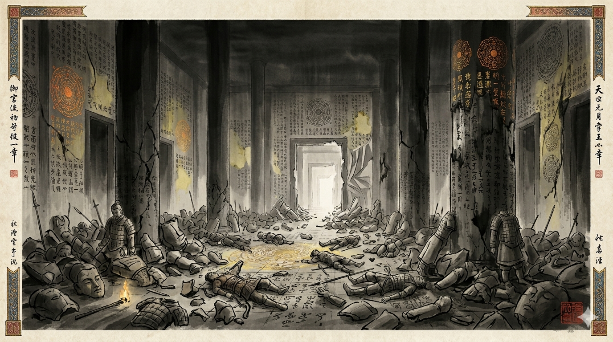
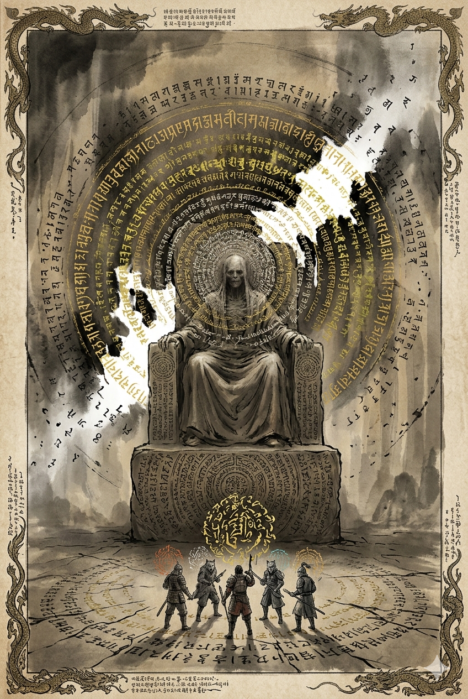
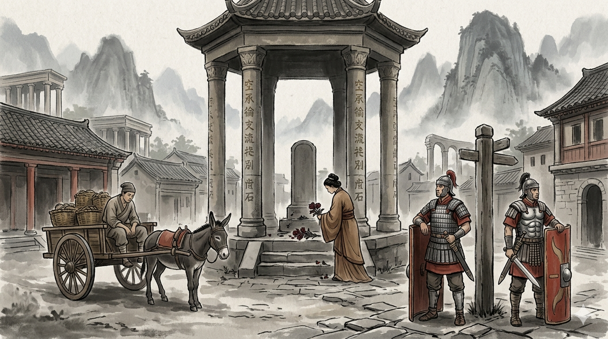
Setting
Orientation: Three Nations, One Problem
At the highest level, the three great powers the Commander will encounter are each different answers to the same civilizational question: how do you industrialize magic? How do you turn an esoteric art into something that reliably feeds armies, builds cities, and projects power? Each nation has found a different answer, and each answer is eating the civilization that devised it.
The Eternal Empire
The Eternal Empire industrialized a single channel. The Lexicon is real magic, but it only scales through the God-King and the Chorus that transmits His voice. This works beautifully — for four centuries it has worked beautifully — but it makes the entire empire into a single-point-of-failure system. When the Chorus goes silent, there is no backup, no local tradition ready to step in, nothing but orthodoxy and a bureaucracy that was designed to transmit His will, not to function without it. The empire's strength was its unity; its weakness is that the unity is load-bearing.
The Auric League
The Auric League industrialized the practitioners. They democratized wizardry through universal schooling and produced an entire population that can, at minimum, warm their hands with a cantrip. The result is a symphony of minds, a society that can out-think, out-produce, and out-innovate anyone — but also a society stratified so violently along magical capability that the people who can fly live above the rainshroud while everyone else gets wet. Their creed that all minds are sacred runs face-first into the inconvenient fact that some minds are worth considerably more than others, in the only currency that matters.
Taltasqua
Taltasqua industrialized a single source. They do not teach magic broadly; they do not depend on a divine channel. Instead they have a captive god, and they bleed it, and they sell what they harvest. This works spectacularly — regenerative potions, longevity vaccines, spellwarp carapace, an endless river of alchemical wealth — but the civilization has become autophagic. The city's own food and water carry the beast's taint; its citizens rise as undead; its flies become blood-locusts; its longevity treatments drive their users mad; and the knights who founded the city to imprison the beast have, over centuries, become the beast's most dependent addicts. Taltasqua is fighting monsters by becoming one, slowly, and on an installment plan.
Each nation sees the others' answer as evidence of its own superiority. The Auric watch the Empire's centralization and see a brittle monoculture waiting to shatter. The Taltasquans watch the Auric diffusion and see a nation of dilettantes who produce nothing a warrior could respect. The Empire watches both and sees pollution — knowledge untethered from virtue, power untethered from authority. None of them are entirely wrong. All of them are terminally committed. And the premise of this campaign is that one of those answers has just broken, and the Commander must decide what — if anything — can replace it.
The Eternal Empire
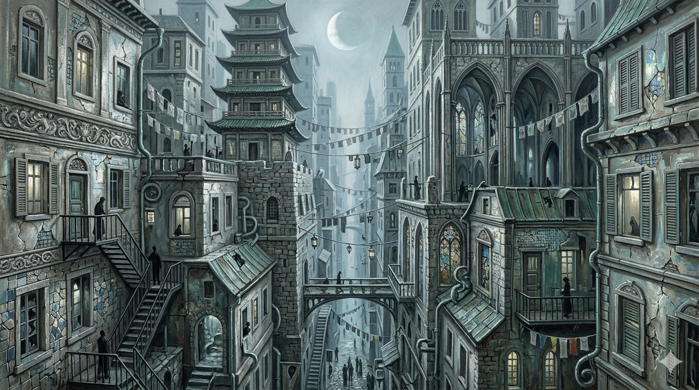
The Eternal Empire
Inspired by Late Qing-dynasty imperial China. Once the undisputed hegemon of the north and possibly the mightiest nation anywhere, albeit at a time when power projection at a greater-than-regional level was prohibitively difficult. But arrogance and an obsession with ideological purity has caused it to become insular and complacent, relying more and more on the power of the God-King, transmitted through the Chorus - a dangerously singular point of failure. Now the imperial ministers look out on a world they find strange and distressing, full of vigorous younger powers with very different ways like the Auric League and Taltasqua. Even the Turathi raiders whose longships were once merely a nuisance have developed into a disconcertingly dangerous threat, wielding blackglass weapons and strange magics of flame and prophecy.
History
The lands of the eternal empire have been the home to a civilization of one description or another since time out of mind. The core imperial provinces are rich lands centered on a pair of fertile river valleys. Stories claim the rivers were once wrathful and unpredictable things, prone to flooding and difficult to navigate, but that in times long past some emperor (accounts vary) chained the dragon-spirits of the rivers (or some deal was struck with them, or he married his son to the rivers' daughter; again, accounts vary). Since then, stories claim the river spirits have been pacified. While the veracity of this claim cannot be established, the rivers are certainly ideal for civilization now: steady but gentle currents, predictable floods that leave the floodplains enriched and ready for sowing, and teeming with fish making their way to the spawning grounds in the highlands.
It is said that in ancient times, before the coming of the Aelfhinn, the region around the rivers was home to the Sun-and-Moon empires. Little is known of the times before the coming of the Others, but tantalizing hints exist about this period - a kingdom and a queendom existing in some state of ritualized war and de facto peace. They left no written records anyone alive can read, but their art was ubiquitous, and of course the Others bore witness to some details which have made their way down to the modern time. The two kingdoms were rivals, or enemies, or possibly partners in some strange cultural dance. It is known that they fought in “Flower Wars” — nonlethal contests designed to allow for the capturing of prisoners, who were then ritualistically sacrificed by the hundreds or even thousands. The painted murals and carvings of these times suggest a period of regular bloodshed yet surprising peace. Their wars and contests were ritualized, their magic fed by bloody sacrifice, and though they were mighty in their way they were wholly unprepared for true war when it came for them.
After the aelfhinn came and went, the rich lands of the two rivers organized themselves into new polities; half a dozen dynasties rose and fell, tribes of riders from the cold deserts of the east invaded and were repulsed or assimilated (or both), the hard men and women of the highlands revolted and were reconquered or led their warbands down to win their own crowns, and so on. The normal patterns of history.
The current era (by the reckoning of the empire, at least) began some three hundred years ago with the fall of the so-called Last Dynasty, grown tyrannical and corrupt. Much of the detail of that time has passed into folklore and legend, even among the empire's literati, but tales linger hinting at some dark obsession of the last empress, fell scion of that dark bloodline. Her name has been magically excised from reality, and so she is now referred to only as the empress-in-yellow. It is said she commanded the excavation of an ancient and cyclopean city long buried in the cold eastern deserts (at ruinous cost). And that she installed the massive and strangely-proportioned mummified corpses that were recovered there on pallets of silk within her own chambers. It is whispered that she communed with the dead and consorted with stranger things from beyond the labyrinth, that odd and unwholesome lights and maddening whispers haunted the lands near her palace, and that she demanded a hundred new concubines every day, none of whom were ever seen again after entering the Imperial palace. Perhaps most famously, it is known that she would behead her enemies and even some luckless allies, then bind their souls to the heads, so she may question or torment them for as long as she pleased while their headless corpses rose again and marched to her service.
This now-nameless empress was cast down by the scholar who would become known as the God-King. Displaying a mastery of the ancient and long-honored lexical arts almost beyond comprehension, this scholar led a popular revolt against the empress-in-yellow's headless legions. The revolution culminated in a final clash within the imperial palace itself. When it ended, the names of the empress and the scholar had both been scoured from reality - no longer recorded anywhere or remembered by anyone. The empress was dead, and the scholar had spoken apotheosis unto himself, transmuted by the Lexicon into something beyond mere humanity - a living God. By popular acclaim this God was given a crown, and the Eternal Empire was born. Or at least, so the stories go.
For a time, the empire's legions and lexicographers made it the undisputed master of the region, and whether from fear of the legions or fear of the God-King's song, local powers meekly submitted to the imperial yoke and sent tribute to his divine majesty. And those - like distant, dreaming Shan - too proud to bend the knee were shown the blasphemy of their arrogance. Over time, the God-King has chosen to remain increasingly within the Forbidden Quarter, a city-within-a-city that houses the temple-palaces where only the imperial family and their most favored ministers may tread. It is said he is engaged in deep, decades-long contemplations of the mysteries of the Lexicon, and over the three centuries since the Founding the imperial ministries have played an increasingly important role in interpreting and implementing the Divine will. The Ministry of Rites (aka the Templarate) very naturally forbade any study of the unholy arts of the empress-in-yellow, then of any esoteric traditions that might resemble them, even commanding that the nameless city once buried in the cold desert be buried again (at ruinous cost) and its location purged from all records. In time, the Ministry declared that since the lexical arts (being, as they are, the God-King's instrument of apotheosis) were divine in nature, and were thus the only permissible esoteric practice. In fact, the Lexicon is so holy and of such divine power that it must only be taught to those of the highest personal and familial piety, who could of course be kept under the Templars' watchful eye.
The Ministry of Harmony (aka the Censorate) concern themselves with enforcing the God-King's justice on all and sundry. Though at first concerned solely with matters within the bounds of the Empire, the Censorate has become increasingly concerned by the dissemination of dangerous ideas from beyond the Empire's borders. For over a hundred and fifty years the Censorate instituted a policy of strict isolationism, harshly limiting contact with the outside world. At first this seemed effective enough, but a series of inquisitions found forbidden spiritual traditions being practiced in the west, having slowly disseminated from Dalimyri lands. In time the Censorate decided this posed a sufficient threat to the God-King's peace that it merited military action, dispatching the Third Legion to Dalimyr for a punitive expedition with orders to raze any population centers they may find, defile places of mystic or religious potency, and limit Dalimyri ability to infiltrate and subvert the empire's citizens for a generation at least. By the time the game starts, the Legion has already failed.
Society of the Eternal Empire
Ministry of Rites (aka the Templarate) (religion, exorcisms, supernatural or religious threats)
One of the 'Twin Ministries'. The Templarate exists to solve religious and spiritual problems throughout the empire: they conduct exorcisms, hunt esoteric threats like rogue spirits or hungry ghosts, and oversee the inquisitions to root out forbidden religious ritual and battle heresies.
Ministry of Harmony (aka the Censorate) (handles crime and punishment; basically the Empire's FBI)
The other of the powerful 'Twin Ministries'. The Censorate exists to oversee and administer the Emperor's justice. Most law enforcement throughout the empire is handled at the local or prefectural level, but for issues that require special attention, the empire relies on the Censorate.
Golden Zenith Concordat (Divine Houses/aka the Senate)
The God-King rules the Empire — only the suicidal would dispute that. But he does not rule alone: in most provinces, the vast majority of day-to-day governance is by the (many, many) nobles of the Divine Houses, who govern in His most holy name. The Golden Zenith Concordat represents the interests of these aristocratic Houses, and functions as a de facto legislative body: proposing and enforcing laws where the God-King (and the Ministries) permit.
The Chorus of the Divine Voice (songs and spoken lexical spells, communication first and foremost but has a branch that assists the Legions and the Twin Ministries)
Ministry of Recordkeeping (the imperial bureaucracy, everything from tax ledgers to travelogues)
10,000-League Syndicate (foreign trade)
The Syndicate is a mercantile body focused on the lucrative overland trade routes throughout the Empire and to the many nations in the east, beyond the T'an Plateau and the Teeth of Heaven mountains. Because of its travels and interactions with barbaric foreigners, the Syndicate is by far the most knowledgeable of the ways of the outside world, including strange and otherworldly foreign magics. Natural allies to the Red Hand Guild and the Ring of Brass, the Syndicate nevertheless struggles to overcome the intrinsic distrust the Empire has for anything tainted by foreigners.
Red Hand Guild (ceramics and constructs)
The Guild theoretically has the narrowest remit, being responsible for the mining of clay and creation of pottery and ceramics. But what may not be obvious is that it is the Red Hand Guild that produces the invaluable terra cotta constructs, before the scrimshanders can animate them. As a result, the Guild is hugely influential in the military (who of course employ the famous terra cotta soldiers), agriculture and industry (tireless terra cotta workers are always in high demand). Of course, their name is earned — the Guild is composed of craftsmen, merchants, and miners with (proverbial, and sometimes literal) clay under their fingernails, something the haughty noble houses of the Concordat love to remind them of.
The Lexicon
At the beating heart of the Eternal Empire is the God-king. And at the radiant heart of the God-king is the Lexicon - the systematic study of the art and science of manipulating the universe using the written and spoken word. Lexical magic has long been studied throughout the world - one finds traces of it in the mystic traditions of carved dalimyri spiritmasks, taltasquan runes, auric sigilry, even avalonian heraldry has traces of it. It is a simple truth that words can reshape the world, and the people of the ancient and rich lands of the eternal empire have studied the phenomenon from time out of mind. This was the tradition a humble scholar learned four centuries ago, and used to overthrow a dynasty - it was this power that made him first a god, then a king.
Compared to other esoteric traditions, the lexicon is most notable for three things: 1) it is pure, disdaining non-linguistic techniques such as awakening spirits or alchemical transmutation as dangerous distractions; 2) the heights of power typically requires extensive study of a significant library to master - an isolated prodigy can only rise so high without a vast corpus of lexical research to work from (which begs the question, how exactly did the Nameless Scholar come out of seemingly nowhere with lexical powers at a level never seen before or since?); 3) the returns to scale are very high, since lexical magic - both spoken and written - is synergistic with itself; a single chorister is dangerous but an entire chorus operating in concert can sing down the mountains (figuratively speaking - although in mountainous terrain landslides are often weaponized in exactly this way).
The Eternal Empire's way of war
The Eternal Empire approaches war like a glacier: slow, even ponderous, but utterly irresistible and likely to reshape the very geography of the region in its passing. Whereas the Auric Navy prefers daring maneuver, lightning strikes, and blitzkrieg warfare, and the Taltasquans are masters of siege warfare, terror and total war (which they define as the indiscriminate destruction of any and all enemies, military or otherwise: sowing blood-locust eggs in the enemy's grainfields, releasing ghoulsaints into the sewers, spiking oases with glasslung capsules, etc.), the Eternal Empire moves slowly, relentlessly, using its chief strengths - logistics, bureaucracy, the lexicon, and sheer scale - to maximum effect.
A common tactic is for legions to claim a beachhead (often at significant cost), then spend months relentlessly fortifying it, using hundreds or thousands of choristers to sing wall after concentric wall of seamless stone out of the very bedrock, which teams of scrimshanders then cover in a mosaic of overlapping, redundant wards. Meanwhile, teams of scholars collate reams of data gathered by hundreds of scouting expeditions until a small library of information has been gathered on the theater of conflict and any or all opponents.
Only then will the legions sally in force from what will have become by then a mighty citadel (against the walls of which the enemy will have wasted much of its strength) to strike using the ability of choristers to communicate effortlessly to expertly choreograph assaults across huge distances, crippling the enemy's centers of power and establishing a ring of new fortifications in their stead, from which the process can be repeated as many times as is required until the enemy has been relentlessly ground into dust.
Tactically, the empire tends to follow the same patterns as they do in grand strategy: embed choristers in larger units of legionnaires, inviting the enemy to shatter their strength against the unbreakable wall of steel and faith while the chorus sings their doom and the scholars observe and coordinate. The battleline moves slowly but inexorably, in relentless harmony, until all resistance is pacified.
However, this method of war has begun to struggle to adapt to changing conditions. The empire's strategy of defense, attrition, and pulverizing the enemy's places of strength is not well suited to combating the Dalimyri, who often decline to give pitched battle, preferring endless attritional skirmishing, and whose semi-nomadic lifestyle make locating significant targets - much less pulling off a counterstrike - difficult. This, combined with the fact that the lands the Dalimyri fight on are awake and alive and literally allies of the dalimyri and enemies of their enemies have proven deeply frustrating to imperial generals. But the eternal empire has many more legionnaires, while the Dalimyri are few - if the inhuman patience of the immortal god-king is willing to devote a sufficient share of the Empire's military machine, He seems likely to win eventually - even if it takes decades.
Why good people follow the God-King
The God-King’s apotheosis worked, and the empire it created is genuinely, materially good for most of its people. Consider what the empire replaced. The empress-in-yellow was binding souls to severed heads and marching headless corpses as soldiers. Before her, the Last Dynasty was tyrannical and corrupt. Before that, centuries of the normal churn — invasion, famine, civil war, the usual horrors. And before all of that, the Sun-and-Moon kingdoms were sacrificing prisoners by the thousands to fuel their magic.
Then this scholar shows up, does something unprecedented with the Lexicon, and for three hundred years afterward the land is at peace (internally, anyway), the harvests are reliable, the terra cotta constructs do (some of) the most backbreaking labor, and the ever-present Chorus means that no province is ever truly alone. A message can reach the capital in hours, a response can come back the same day. For a peasant farmer, that’s not an abstraction. That’s knowing that when the flood comes wrong, someone will hear and the Ministry of Rites will act. When raiders come, the legion garrison will know. The God-King’s divine voice, echoed endlessly by the Chorus, is the sound of civilization itself.
And the Templarate’s monopoly on the Lexicon isn’t just about control, it’s about a genuinely held belief that words are dangerous. The empress-in-yellow proved that esoteric knowledge in the wrong hands produces atrocities. The Lexicon, being the art that conquered her and spoke godhood unto (a) man, is too powerful and too sacred to be treated casually. The Templarate’s restrictions on who can study it feel oppressive to foreigners, but to an imperial citizen who grew up hearing stories about the headless legions, they feel like common sense. You don’t hand a child a loaded crossbow. You don’t teach the Lexicon - the literal Words of Creation - to someone whose character hasn’t been tested.
Visiting the empire: A foreign visitor’s first impression is scale and order. The empire has had three centuries of stability and has the infrastructure to show for it. What that means concretely:
Imperial roads are legendary — wide, stone-paved, maintained by thousands of human work gangs and tireless terra cotta laborers. Waystations lie at regular intervals, each with a Chorus post where messages can be sent. Foreign merchants talk about the roads the way Roman-era merchants talked about Roman roads: as something almost miraculous, a grid of civilization laid over the landscape. The 10,000-League Syndicate depends on these roads, and the Red Hand Guild’s constructs keep them in repair regardless of season or weather.
The rivers. However it came to be, the rivers really are supernaturally pacified — gentle currents, predictable floods, thick with fish. A visitor sailing upriver sees the floodplains spread out in orderly terraces, and the scale of the agriculture is simply staggering. This is a civilization that has had three hundred years to optimize its breadbasket with magical assistance. The granaries are enormous. In good years, imperial grain feeds half the continent through the Syndicate’s overland and river trade routes.
The constructs. Terra cotta soldiers standing motionless within their parade-barracks, their carved faces perfectly serene. Terra cotta laborers working fields at midnight, because they don’t need to sleep. Construction crews of clay figures hauling stone in perfect, wordless coordination. They’re too few to be everywhere, but the more central you are the more common they become, and imperial citizens in the capital barely even notice them anymore — they’re part of the landscape.
The sound. This might be the most distinctive sensory element: the Chorus. Before the Silence, the empire was a place where you could hear civilization. Choristers singing in relay in every major settlement, their voices carrying not just messages but sacred music: hymns, proclamations, weather reports, all woven together. The Chorus isn’t just a communication network, it’s the empire’s heartbeat. The chanting of the Choristers at dawn is like church bells in medieval Europe: the sound that tells you everything is working, that you are part of something larger. For a visitor, it is simultaneously beautiful and oppressive — this constant, gentle reminder that you are embedded in something much grander than yourself, and you are alien to it. When it goes silent, it’s not a technical failure, it’s as if the sun went out. The terror of the Silence isn’t strategic (though it is that too); it’s existential. It means something is cosmically wrong.
The literacy divide. The Lexicon is reserved for the elite, but the empire is still a literate society in practical terms; merchants need to keep records, bureaucrats need to file reports. However, even mundane writing verges too close to the sacred for carelessness; as such all writing, not just the Lexicon, is restricted by the Templarate. The elite who prove themselves in the templarate's (many, many) tests of talent and character wield disproportionate power, even if they never are granted the right to study the Lexicon - a visitor might be startled to find that a master calligrapher is treated with the same reverence as a general, and a young calligrapher’s brushwork is scrutinized not just for beauty but for spiritual purity. The written word, in the empire, has weight in a way that foreigners find both fascinating and claustrophobic.
The lived-in experience: being from the empire
The rhythm of life is deeply communal and ritualized. Morning chants from the local Chorus post. Seasonal festivals tied to the river floods and harvests. Offerings at the household shrine to the God-King — not (always) fearful, groveling worship, but something more like reverence and profound gratitude, the way you light a candle for a grandparent who built the house you live in. The God-King isn’t a distant tyrant to most citizens; he’s the divine ancestor who made all of this possible. His portrait (stylized, sacred — no one alive outside the Forbidden Quarter has actually seen him) hangs in every home the way a crucifix might.
Family and hierarchy are inseparable. The Houses of the Concordat are the extreme example, but the pattern repeats at every level. Your family name matters, your relationships to your elders matter, your position in the community matters. This isn’t experienced as oppression by most people; it’s experienced as belonging. You know exactly who you are and where you fit. There’s a comfort in that, especially in a world full of dangerous and chaotic alternatives, but it can be rigid and stultifying.
Finally, the relationship to outsiders is complicated. The Syndicate merchants who travel beyond the borders are regarded with a mix of admiration (they’re brave) and suspicion (they’ve been contaminated). Syndicate traders coming home from a long journey must undergo extensive purification rituals that frankly border on the punitive before being welcomed back. Not because anyone genuinely thinks they’ve become heretics (necessarily), but because the ritual matters — it marks the boundary between the civilized world and everything outside it.
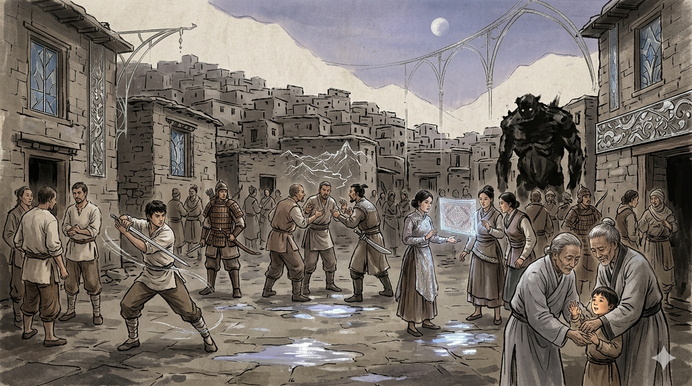
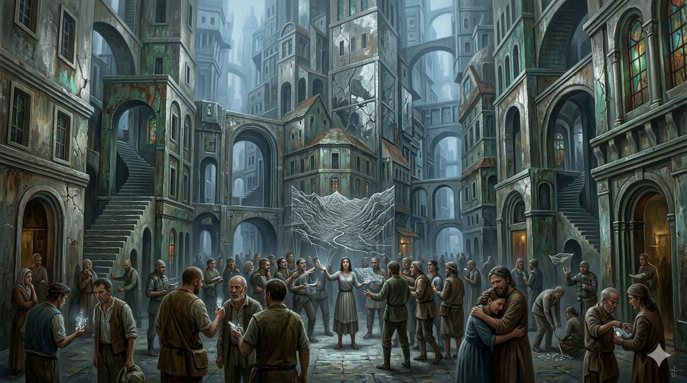
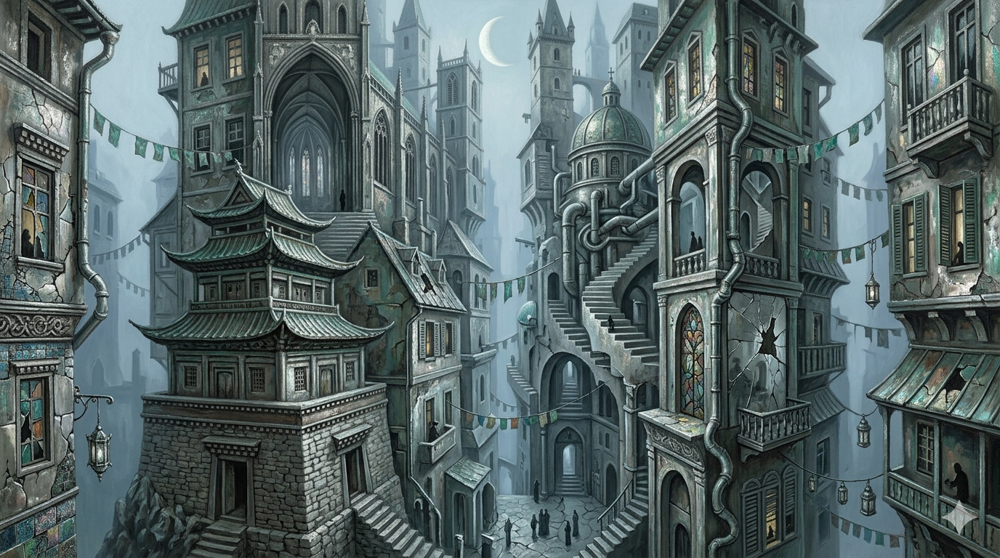
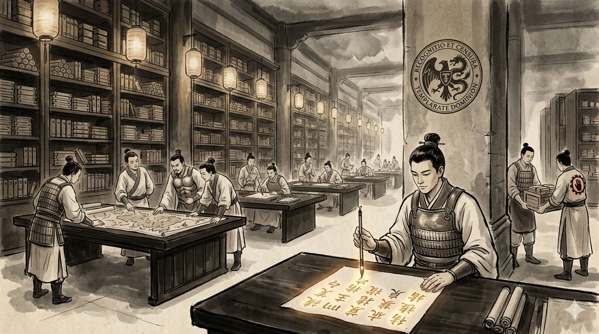
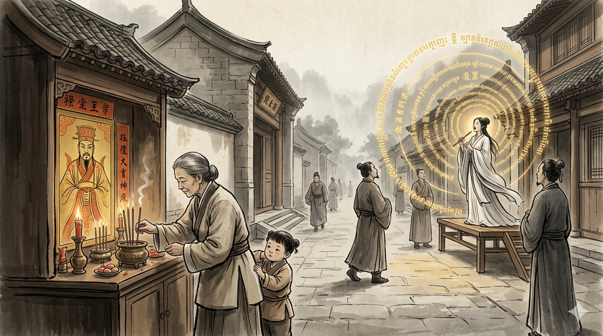
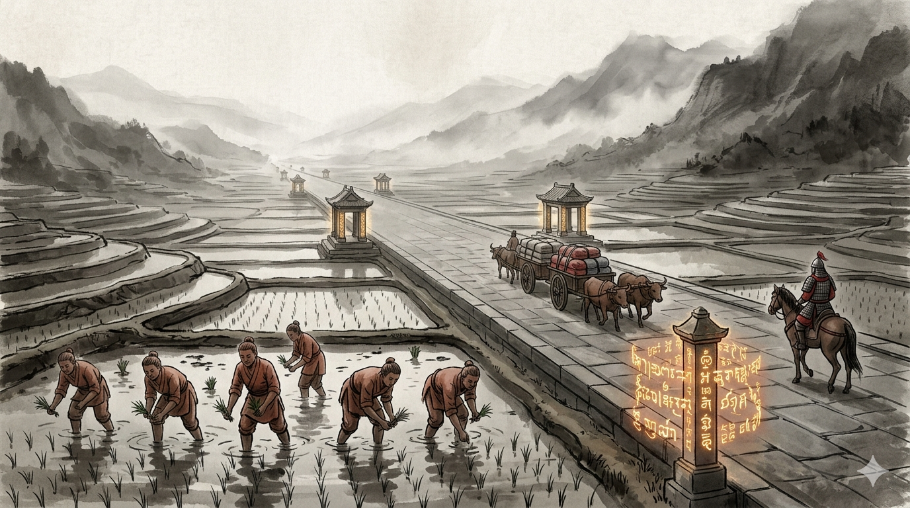
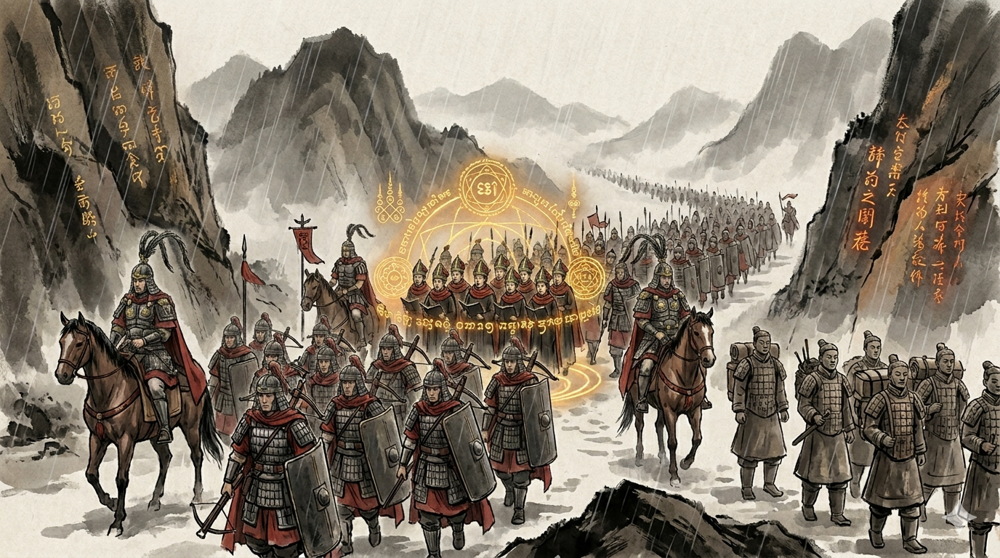
Shan: The Inverted Kingdom
Shan Prefecture: The Inverted Kingdom
Overview
A rugged land of high, treacherous peaks and lush, narrow valleys. Isolated monasteries and hidden libraries, mountain villages and terrace-farms, ruled once by dreamers, artists, and ascetics. Prone to being idolized after its annexation by the eternal empire, but in truth it was feudal and therefore not a very nice place to be if you were a peasant - but who remembers that, amidst the glamour of a lost heritage? Key words: interior richness, material austerity, valley micro-cultures, feudal dream-tyranny, living archives, broken transmission, quiet mastery, opacity to outsiders, the gap between what is visible and what is real, newly forged national identity, contested rebellion
Shan is a figment. It is not a nation in the waking world at all, having been conquered almost sixty years ago by the eternal empire. But even before that, there was never a nation called Shan. There were the Seventeen Valleys (or twenty-three, depending on who’s counting and what constitutes a proper valley versus an ambitious gorge), each separated from its neighbors by passes that close for four to six months every winter. For most of Shanese history, the valley you were born in was your world. You might, in your entire life, cross a pass twice — once as a young person seeking a marriage-match, and once as a corpse being carried to a high burial ground, because the Shanese believed the dead should rest above the living.
Each valley developed its own everything. Its own lord, its own festivals, its own dialect that often drifted so far from its neighbors that Shanese from opposite ends of the range could barely make themselves understood to each other. Its own textile traditions — the felt hangings that serve as both insulation and canvas, densely layered with imagery or complex fractal patterns. Its own blend of tea, the relative merits of which is still debated with more genuine passion than any political cause in Shanese history. And crucially, its own traditions of psyche.
Psyche
One cannot understand Shan until one understands the psychists. Pysche is the blanket term for a mystical tradition encompassing multiple techniques focused on understanding dreams and using that understanding to affect the mind and spirit: dreams, madness, emotion, thoughts, and memories. Dreamwalkers go sojourning in strange internal spaces; they plumb the unknown vistas of the mind's eye and return with rare treasures...and strange maladies. Some claim they can pass through the internal door and beyond, outside of themselves, into the shared substrate of consciousness and thought itself. They excel at incepting ideas and emotions in the minds of others, and causing sleep, hallucinations and madness in others. Some can create their own weapons, armor, even servants in their dreams, carving them out of their own memories, thoughts, and feelings, then through some esoteric trick of the mind pull the stuff of dreams into the waking world for a time, giving them some semblance of reality - a technique called oneirism. But doing so involves intentionally blurring the lines between what is internal and external, what is real and what imagined - and so psychists tend to gradually slip into madness themselves, as over time their power grows and the line between real and unreal grows ever hazier.
Every magical tradition begins somewhere, with someone. The Lexicon grew from a literate river civilization with millennia of accumulated textual tradition. Spiritbinding exists because the Dalimyri live in the thin places where the Labyrinth bleeds through, resulting in uncommonly active and aware spirits of place, with whom one must negotiate to survive. Auric wizardry is a kind of academic rationalism supercharged by desperate necessity on hostile islands. Taltasquan alchemy is literally harvested from a captive god. The question becomes: why did the people of isolated, thinly populated Shan find the door within? How did such a small, poor and out of the way land birth not one but several unique mystic traditions? No one knows, exactly. The Auric magi argue whether it is some geomagnetic effect of these mountains, or some unknown mineral leeched into the water, or just an odd quirk of genetics that was gradually refined through generations of isolation and intermarriage.
No one really understands where the talent for psyche comes from - it isn't simply bloodlines, but it isn't a question of sheer training, instruction or even will, either. Some of the old Dhar - the feudal lords of the mountains - claimed they could sense the degree of talent in others; there are many tales of the local lords descending on a village looking for some child, and curtly informing the family that their child is being adopted (by force if necessary) into the Dhar's own household. Sometimes this was an honor, even a blessing for families too poor to easily feed another mouth. But not always.
Sidebar: Traditions of Psyche
The contemplatives of the Jade Falls first developed dreamwalking as a meditative practice, turning inward through silence and breath. But once able to walk freely in dreams, traditions diverged in technique and philosophy wildly. The seers of the Burnt Ridge specialized in emotional attunement — reading the currents of feeling in a crowd the way a sailor reads weather, and eventually learning to shape those currents. The monks of Kherang explored their memories, building vast eidetic edifices to contain an impossible amount of detail, elements of which could be moved whole from mind to mind within dreams themselves - even moving locked memories into a new mind, that could only be accessed by the recipient using some particular trigger. The Order of the Glass Threshold practiced oneirism, the creation of physical objects from dream-stuff.
Thought-shaping: speak telepathically into their mind, incept ideas, even craft memetic pseudo-contagions (European dancing plague, new england witch trials, etc) to influence behavior on a broad scale
Emotional manipulation: Create or suppress emotions in others, from joy to hope to hatred to terror.
Knights-Ardent: dreamwalkers who have explored one of the emotional poles, exposing themselves to some feeling to such a degree that it suffuses their very selves. Afterward, they always feel some degree of that emotion, and if they feel it, you feel it. At their most dangerous when they themselves are particularly gripped by their animating feeling: fear, joy, etc The Rage Knight, She-Who-Walks-In-Awe
Mementology (needs new name): edit or even create memories wholesale, steal memories outright so another's knowledge or skills become your own. At extremes even overwrite another's memories, personality and desires with your own.
Mesmerism: put others to sleep, or put them into trance and puppet their body
Dreamwalking: visit another's dreams to bolster their courage, deepen their rest — or turn their dreams to nightmares
Oneirism (dreamshaping): channel the stuff of dreams into the waking world to create partially real echoes of creatures or objects called figments. Not as robust as physical objects but not bound by natural law, figments can be many shades of impossible: a figment of a bridge can actually support you and can do impossible things like sprout legs and walk down the river to a better crossing; but it will exist only as long as it is sustained by the dreamshaper, and is vulnerable to sudden, abrupt dissolution in a way that a physical bridge (even one created by e.g. gravitational magic) is not, popping like a soap bubble if the dreamshaper dies or loses meditative focus.
To a some Oneirists, sanity was a limitation to be overcome, rather than a foundation to be maintained. Those who slipped fully into solpsism could work wonders the merely sane could only regard with awe or terror. But solpsism tends to carry a dreamwalker away from the real and into the depths of the Dream, and sooner or later they would slip away to some remote inward reach from which they could not or would not return. The monasteries inevitably had a visible population of such broken dreamwalkers — the sleeping masters — people who went too far and came back wrong, or didn’t come back at all, their bodies still breathing but the person behind the eyes gone somewhere unreachable. This fate was mourned but also admired, as a burned-out dreamwalker was seen as someone who gave everything for the art.
The Knights of Ricaria, favored servants and bodyguards of the Dhar for generations, chose a more disciplined tradition: inward-directed emotional cultivation paired with oneirism to create arms, armor, and servitors from their own thoughts and memories. More narrow than other psyche practitioners, but far more reliable, and with a much smaller risk of solpsism. A Ricarian who draws a blade of literalized resolve or dons armor of crystallized discipline is exactly as formidable as their emotional self-mastery allows — no more, no less. Their training is demanding precisely because it requires a degree of self-knowledge most people will do anything to avoid.
Ricarian techniques are more limited than other schools but extremely reliable and effective within those limits. Traditionally paired with martial techniques so that a Ricarian is prepared to serve when called in any capacity, at any time, with or without tools. They use meditation to cultivate intense emotional states within themselves - frenzy, terror, resolve, joy -then use oneirist techniques to externalize those things into physical objects, most often arms and armor. In this way they can armor themselves in their own resolve, and strike with a blade of crystallized wrath. The grandmasters would even externalize their own memories, creating figments - dream servitors composed of concepts, emotions and thought-complexes - to serve them. Unlike the Ardent, a dreamknight is not particularly focused on creating an emotion in others but rather of cultivating a particular state of mind within oneself.
And then there is Goetia, the truly dark end of the spectrum. Practitioners who externalize their own nightmares and sins, leashing them, weaponizing them. A goetic isn’t channeling abstract nightmare — they’re pulling out their own specific trauma, their rage, their guilt, their own capacity for cruelty, and giving those things bodies and agency. The things they summon are themselves, and using Goeticism requires maintaining an intimate relationship with the worst parts of oneself. Even if they reach a tenuous detente with their demons, the most powerful Goeticists often begin as the most damaged people, because they had the most raw material. Consider what that incentivizes. In a pre-conquest Shan, this was not some fringe aberration — it was a recognized school, respected and feared, and the Dhar who could call forth a chained nightmare of incarnate self-loathing to fight for them was not considered sick, but brave.
The Dhar: Living Archives and Dream-Tyrants
It is common now for the Shan to idealize the old days, and it is true that the imperial annexation wrought untold destruction on the valleys. But it is easy to forget, amidst the glamour of a lost heritage, that pre-imperial Shan was a feudal culture, and while a bad lord can be a disaster for any society, a bad Dhar could be a calamity. This is because the Dhar were the most powerful psyche practitioners. The role of the Dhar began as a dream-keeper, expected to maintain a memory-palace of sufficient scope to contain the history, genealogy, legal precedents, and cultural traditions of their entire valley. The lifeways and art and history of their people could not easily be sustained or protected in the harsh climate, and so they persisted only in the living minds of the Dhar. The Dhar were living archives, and their authority derived from the fact that they, in a very real sense, carried the valley inside them. When a Dhar died without having properly trained a successor, it was genuinely as if a library had burned — centuries of accumulated knowledge, gone.
But this is not the entire story. However they began, the Dhar were not always benign elders or serene mystics; they were the lords of the valleys, and they ruled their people how they saw fit — after all, who could stop them? The romantic image of benevolent dream masters presiding over their valleys with gentle wisdom is at least partly propaganda — and in a culture where the powerful can edit memories, that takes on a deeply sinister meaning. How would you even know if your beloved grandmother’s stories about the wise old Dhar of your valley were real, or if they were implanted by the Dhar’s successor to legitimize their rule? And if your lord can literally walk into your dreams and see what you’re planning, rebellion becomes quite difficult. It is hard to lie to someone who can rummage through your memories while you sleep. You cannot conspire against a ruler who can read your intention to conspire before you’ve taken the first step.
In a functioning Shanese valley, the memory arts were the chief instrument of social control. The Dhar maintained their “living archives” according to their own standards, and some chose to be quite selective in their memories — history can be whatever the person who can edit memories says it is. A Dhar who wanted to erase a rival family’s claim to a disputed pasture didn’t need soldiers if they had sufficient skills as a mementologist and a few nights to work. By the end, the victim wouldn’t even know they had been robbed.
Weaponized tele-empathy was a tool of control, as well. The Knights-Ardent were dreamwalkers who have explored the emotional poles of the Dreaming, exposing themselves to an emotion to such a degree that it suffused their very selves — afterward, they always feel some degree of that emotion; and if an Ardent feels something, everyone around them feels it, too. In battle, the Rage Knight or She-Who-Walks-In-Awe are terrible foes. But in peacetime? An Ardent of Contentment presiding over a farming village could almost effortlessly keep the peasants happy. Productive. Docile. And an Ardent of Awe attending the Dhar makes every audience with the lord feel like a religious experience. This invisible emotional coercion produced people who genuinely didn’t know whether their loyalty to their lord was their own feeling or something installed in them. That is the horror the Empire’s Censorate found existentially threatening. The Censorate’s obsession with written records and verifiable documentation are at least in part informed by their interactions with a culture where the very concept of objective historical truth had been compromised at the neurological level for centuries.
The Conquest
When the Empire’s legions crested the first passes a century ago, they expected organized resistance. Instead, they found seventeen separate lords making seventeen separate calculations about whether to fight, negotiate, or betray their neighbors for favorable terms. The conquest was ugly, as conquests are, but it was faster than it should have been because “Shan” had never been a unified polity. The irony cuts deep: the Empire gave the Shan a national identity by taking everything else away.
The conquest’s cruelest act was not the destruction of villages, the razing of the monasteries, or seizure of granaries and the weaponization of starvation to force the most recalcitrant mountainfolk into compliance. It was the intentional obliteration of the Shanese traditions, histories, and lifeways that ended the Seventeen Valleys. And this was not accomplished by the burning of physical texts, though that happened. It was the systematic execution or “re-education” of the Dhar that spelled the end of that way of life. The Empire came to understand, eventually, that the Dhar were not just feudal lords but the load-bearing pillars of Shanese culture. The brutal logic of conquest was clear: break the living archives, and the chain of transmission snaps. A generation later, the old man in the noodle shop might remember his grandmother teaching him a lullaby in the old tongue, but the language would be gone, and eventually so would the identity itself. Now, the vast memory-palaces that made the Dhar what they were are mostly gone. Mostly.
Shan Today
Walk through a Shanese market town today and the imperial imprint is everywhere — the grid-pattern streets replacing the old winding paths that followed water and contour, the Chorus post squatting in what was once a monastery's meditation garden, the Censorate office with its orderly files and its polite, implacable inquisitors. The terra cotta laborers reshape terrace-farms into more efficient, and more easily policed, configurations. But strangely the statues keep having “accidents” on the old mountain paths — sliding off retaining walls, walking into gorges. The Shanese say the mountains don’t like them. The Censorate suspects sabotage, but too seldom has the means to proven it.
The valleys are stubborn things. Each valley’s market still has its own specialty: iron-black pottery from Kherang where volcanic clay fires dense and glassy, paper-thin highland wheat noodles pulled by hand in the Jade Falls kitchens, pressed-flower medicines from the lower valleys where the rhododendron forests bloom in riots of color every spring. The Empire tried to standardize and gave up. The teahouses — low stone buildings with thick walls and heavy felt curtains that trap heat and muffle sound — remain the heart of Shanese social life, pockets of warmth and intimacy even as the wind screams across the passes outside. The felt and hide hangings aren’t just insulation; they’re the canvases for Shanese textile art, and no imperial edict has managed to regulate what people embroider on their own curtains, at least not successfully.
What survives of the old traditions of psyche is fragmentary and precious. A middle-aged woman who sweeps floors in the garrison and occasionally serves as a midwife for the villagers still carries her grandmother’s memory-palace — she never had the time to learn the whole thing, but the wing devoted to herbal medicine was painstakingly taught in secret over a decade of shared dreams. A young man working the terraces has, locked in a room in his mind he barely remembers how to access, the combat techniques of an order of dream-knights that no longer exists in the waking world. These people don’t always know what they have. Some have been carefully taught. Others had vital memories implanted within their sleeping minds without their consent or even their knowledge. And some seem to have, remarkably, absorbed something of the old traditions into their subconscious mind without realizing it, inheriting gifts the way you inherit bone structure — involuntarily, without instruction, and without a manual, dreams seeping from one sleeper to another and leaving confusing pieces behind them.
The experience of visiting Shan as an outsider is one of perpetual low-grade confusion. Everything is slightly less than you expected. The food is simple — hearty, warming, well-made, but simple. The buildings are functional. The people are polite and opaque, answering questions with questions, deflecting with a carefully learned gentleness that somehow never quite gives you what you asked for. It takes a long time to notice the things that are strange there: the uncanny precision of the stonework, joints so tight you can’t fit a hair between them, achieved by an illiterate mason without visible measurement tools. The way a Shanese herbalist will glance at you once and know exactly what’s wrong. The woodcarver’s stall where every piece is so astonishingly evocative they appear in your dreams for weeks after you see them. Yet the woodworker herself seems faintly surprised you care about the object — as if you’d complimented a poet on their handwriting. You get the persistent, unsettling sense that the real Shan is happening somewhere you can’t see, and that everyone around you is living a life with dimensions yours doesn’t have.
Some of this is the mystique the Shanese have learned to cultivate around themselves, because a colonized people’s best defense is often opacity. Yet some of this is real - because while it is true that Shan is a land that never was, Shan is also a land that is coming into being.
The Silver City
Before the conquest, the people from Jade Falls did not dream with the people from Burnt Ridge. The traditions were too different, the specifics of technique often incompatible, and the Dhar had every reason to keep their valleys’ psyche traditions isolated and under their personal control. A unified Shanese dream-space would have threatened every lord’s monopoly on the interior world.
It took the destruction of the Dhar and their memory-palaces, the suppression of the formal orders, the scattering of traditions that had been kept separate for centuries — it took all of that loss before the Shan, groping in the darkness of a shared grief, stumbled into something none of them had known was there. Did the Silver City predate them? Was it always waiting for them, beneath or behind or beyond even the deep dreams of the Dhar? Or did the Shan build it together without realizing, their shared grief and loss and bitter resentment crystallizing in the spaces between their dreaming minds into something none of them knew they were making? Or, perhaps, has the Silver City come from elsewhere, some strange memetic complex moving mind-to-mind like a virus, something that has crept into the dreams of the Shan for its own alien reasons? None can say.
But it is there now: vast and tarnished, intricate and inconstant but real in a way that even a lucid dream is not. Its architecture borrows from all the seventeen valleys, but also from altogether different places and times, and even from strange architectures that seem like nothing made by men - impossibly inverted towers crowned with mother-of-pearl parapets and gardens of strange verdigrised copper sculptures that chime against each other even where there is no wind.
And the city is very much in use. Every week, another Shan is visited by a friend or family member in their dreams and taught the secrets of how to walk to the Silver City while sleeping. Or they learn it in the waking world via whispered instruction in the backs of certain tea shops, or they find secrets hidden within what seems to be incomprehensible doggerel scrawled on some anonymous scroll tucked into a cabinet. Strangest, some Shan seem to just stumble into the place, old powers of dreamwalking manifesting spontaneously, without instruction or even volition. And so the Silver City grows, more walking its strange and shifting streets every night.
And in that odd place of tarnished silver and cracked stained glass, amidst the buildings somehow larger within than without, the people of the seventeen valleys speak to each other. They speak of this place they have found and its ways. They speak of the actions of the imperial garrison, and the myriad injustices visited upon them in the waking world. And they speak of the past, and what was taken from them, comparing notes on what secret knowledge, what salvaged dreams, yet survive. For the first time in their history, the Shan have a commons. A place where the glassblower from the low valleys and the yak-herder from the high passes and the Dhar’s granddaughter who now scrubs floors in the Censorate office can sit together and say: we are one people. The smoldering embers of resistance persist, after all these decades, and now the Silver City has given that resistance a place to plan, to coordinate, and to act unobserved. The fire of rebellion is growing in the Silver City, but it will not stop there - and when it reaches the waking world, it will arrive in every valley in Shan, and all at once. By day you may be a shopkeeper, a porter, a soldier, an obedient and somnolent citizen of the Eternal Empire. But by night you are a prince-in-exile, walking tarnished silver streets, waiting for your moment. The Empire can burn the scrolls and execute the masters, but it wil learn that it cannot censor a dream.
Misc thoughts
You know how you don't realize you have aphantasia until someone starts talking about a non-metaphorical minds eye? It took you a long time to realize that not everyone goes to the same place when they dream. In fact, it seems like nobody else sees the vast, tarnished-silver city you see every night.
Starting from reality, there are two directions: outward, the path of the Labyrinth and the Horizonists venturing ever further out-of-the-world. And inward, into the strange internal spaces that exist beyond dreams, where Muses they plumb the unknown vistas of the mind's eye and return with rare treasures. But how do you build a society out of dreams and meditation and inevitable solipsistic madness?
Unusued material
- but though the scrolls can be burned and the old masters executed, despite what the Ministry of Harmony says, one cannot censor a dream. And you dream of a city of silver, and meet with each other there. By day you may be a shopkeeper, a porter, a soldier, obedient and somnolent citizen of the eternal empire, but when you dream you are princes-in-exile, waiting for your moment to strike. The Empire can burn the libraries and execute the teachers, but it cannot censor a dream.
The monasteries of Shan are among the most disappointing buildings in the world. Imperial surveyors arrived expecting grandeur, or at least the grim fortifications of a highland warrior-culture. What they found instead were low stone structures, barely distinguishable from sheep pens, set on exposed ridgelines where the wind never stops. Bare rooms. No ornamentation. Rush mats on stone floors, a single brazier for warmth, shelves holding a few cracked cups. The soldiers laughed. The scholars wrote home about the primitive conditions. Neither understood what they were looking at. The monks had no need to enrich their surroundings; their attention was invested in the interior world.
The Censorate also banned the practice of psyche in all its forms. Like many acts of conquerors, the ban was brutal, ham-fisted, and unjust in its application, crushing the innocent alongside the dangerous, the contemplative healer alongside the goetist. It was vicious, but their fear was not irrational - they acted to censure enemies that could edit memories. Ardents whose emotional auras constituted invisible mass coercion. Mementologists who could steal your skills, your knowledge, your personality. Goetists who weaponized their own psychoses. The Censorate’s inability to distinguish between a tradition of genuine mystical beauty and an apparatus of psychic totalitarianism doesn’t mean the apparatus wasn’t real.
The Coming Rebellion
The rebellion, when it comes, will be the first truly national act in Shanese history. Which means it will also be chaotic, unpredictable, and full of old fractures papered over by shared resentment and a fragile, newly minted sense of peoplehood that could shatter at the first serious disagreement.
The rebels are fighting to restore something that was, whether they care to admit it or not, both beautiful and monstrous, and most of them can’t tell which parts were which — because the people who could have told them are dead, or re-educated, or carrying memories they can’t verify. The idealistic young rebels who dream of a free Shan have never lived under a dhar who could walk into their dreams. The nostalgic old guard who remember the pre-conquest days remember them through a haze of grief and possibly through memories that were edited before the old orders fell. Nobody’s account of what Shan was can be fully trusted, and the nation they’re fighting to build has never actually existed.
The Empire’s suppression was brutal and unjust. The thing they suppressed was also genuinely dangerous. The commander who wades into this will find not a unified resistance but a squabbling coalition, and will have to decide not just whether to support them, but which version of Shan’s future to invest in — knowing that every choice empowers some faction and marginalizes others, and that the psyche traditions being revived in the heat of rebellion include tools of liberation and tools of totalitarianism, often in the same practitioner’s hands.
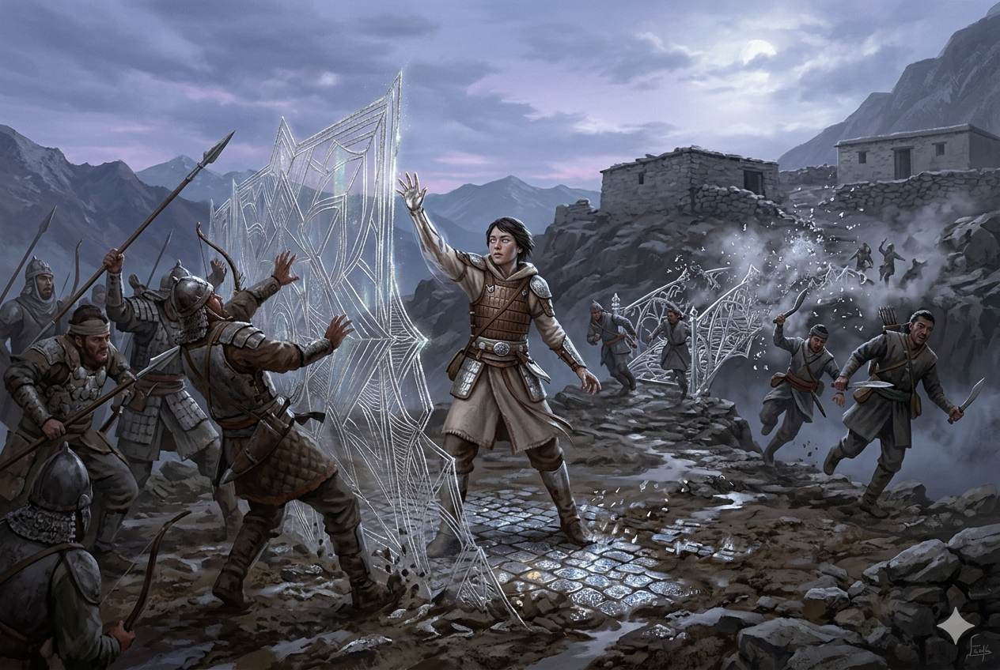
Dalimyri: Wardens of the Labyrinth
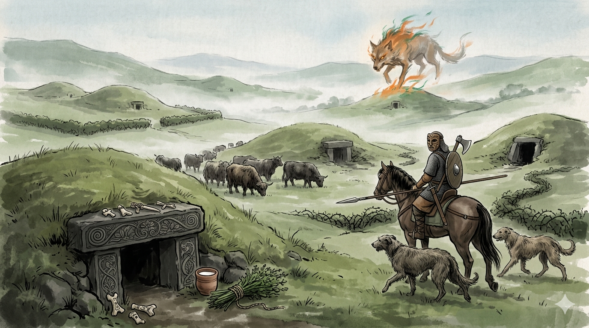
Dalimyri: Wardens of the Labyrinth (taking inspiration from medieval and renaissance ireland)
In the west, where the aelfhinn kept their gilded palaces, the land is dotted in mazes. They would use them to enter the Labyrinth, moving from world to world at a whim. After the Great Revolt, the rebels burned the hedge-mazes and buried the labyrinths. But some magics remain, like a splinter embedded in the skin of the world, and no matter what was done to them, the mazes, somehow, returned. The rubble of torn-down walls would arrange itself in a labyrinthine complexity, and where the hedge mazes once took pride of place in elven gardens, even the salted earth sprouted gnarled thornbushes that grew all on their own into thick walls shielding twisting paths. And in the west of the world, any maze is a danger — the skin of the world is drawn tight and thin there, and a careless wanderer can still stumble out of the world and into the Labyrinth. Just as dangerous, sometimes strange and fell things make their way out of the mazes. So, when it was clear that some things could not be undone, a few tribes of particularly brave souls, calling themselves the Dalimyri, buried the entrances to the Labyrinth as best they could, creating the barrow-mazes, and set themselves to guard them.
Left untended, these barrow-mazes disgorge between several score and several thousand otherworldly things each year. Goblins, Hobs, the monstrous Fae Hounds, the perilous yellow musk plants, nameless tangles of light, color, and malevolence — all threaten the mortals of this land. and if left unchecked beyond. The people of the barrows chose to live amidst this danger, but they knew mortal allies would one day prove faithless and inconstant, and so they sought friendships elsewhere. Four Dalimyri went on four great hunts, and one by one they brought the Great Spirits of the Seasons to bay — Summer, Winter, Spring, and Autumn. The Great Spirits made bargains with these hunters, and when the hunters returned to their people, they began to induct others into the pacts, forming the Seasonal Courts. Now, upon becoming an adult, every Dalimyr swears themselves to one of the seasonal courts, and political authority transfers from Court to Court throughout each year, though every Court serves at all times, according to their skills and proclivities. The Dalimyr of Summer face their foes in glorious combat, the Autumn Court studies and schemes, the Court of Winter ruthlessly hunts down the most elusive foes, whose infiltrations the others may miss, and the Court of Spring breathes life once again into the land, mending what has been broken during the other seasonal struggles.
Sidebar: The Courts, thematically: Winter (Necessity, hard choices, will to survive, pragmatism), Summer (passion, idealism, warfare: some things are more important than living), Spring (Healing, nurturing, hope-that-springs-eternal). Autumn (Fear, Sorcery, mystery, the uncanny and unknowable)
"The first was Maas No-blood. Seems a strange name, but the story holds that Maas couldn’t be cut by any hand but his own. He wasn’t the first one to think of pacting with a season, but he was the first to actually pull it off. He made a spear out of dead wood and autumn leaves, figuring the only thing Summer had to fear was Fall. And he went out to chase it like a boar hunt. He won that oath out of Summer by the strength of his arm. And Summer was glad to go along with it in the end, because if Maas could pin a season’s ears back, then his court had a real shot to survive."
Dalimyr is lacking in many natural resources like iron or steel, but they do have one thing in abundance: wildlife. Much of the Dalimyri lifestyle revolves around managing their extensive herds of horse, oxen, sheep, and more exotic creatures. Most warriors ride into battle atop a war-steed (which is commonly a horse, but can also be Terror Birds, Aurochs, Greatboars, and even the coveted Gryph), and the vast majority of fabrics and armaments are made of bone, horn, hide or leather taken from any number of beasts. Most Dalimyri form special bonds with hunting animals, which follow them into battle when needed. Sea-Wolves, Sandhounds, Ambush Drakes, Witherserpents and Bloodhawks can frequently be found fighting alongside their masters in a Dalimyri battleline.
Spiritbinders practice a form of shamanism which bears similarities to practices elsewhere, but which is far more developed within Dalimyr. The spiritbinders say that some awareness inheres in all things, though mostly that awareness slumbers. But by using certain propitiations and rituals, the spirits can be awoke - and appeased, bargained or negotiated with. The spiritbinders do not regard these spirits as holy, despite what outsiders often believe - rather, they treat them as equals, and negotiate with them as peers, trading favors, bribes and occasionally threats for their favor.
Perhaps the most visible symbol of Dalimyri culture is the widespread use of masks. The Dalimyri always wear at least some small form of mask, and it is considered embarrassing, even shameful, to show one's naked visage to any but one's closest family and loved ones. Every Dalimyri wears masks of cloth, leather, carved wood or bone or fine porcelain and ivory, covering the whole face, the upper or lower half of the face, the left or right side of the face, or sometimes just the eyes or mouth. This practice makes the Dalimyri immediately recognizable anywhere in the world. The origin of this practice lies in the spirits. Existing, as they do, alongside or beyond the world, they struggle to recognize individuals, whose living faces and spirits are always changing. But the care and intention laid down in a made thing - like a mask - gives them something they can see clearly. So whoever wears that mask is perceived by the spirits as the same mortal - with the same debts, obligations, and responsibilities. These masks - and the identities tied to them - are passed Master-to-Apprentice among the spiritbinders, for each one carries its own hard-earned web of alliances, favors, and enemies among the spirits of the world.
Their private battles have left the Dalimyri a hard people, who live in the shadow of otherworldly threats most are happy to ignore, yet which if left untended would wreak havoc. They are self-appointed guardians of the world: warriors, hunters, and scholars of the unknown.
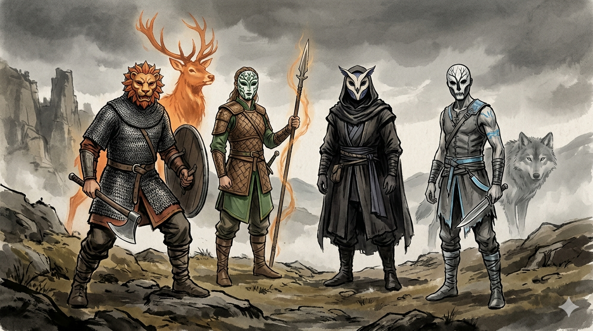
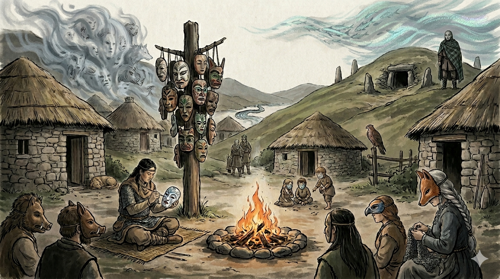
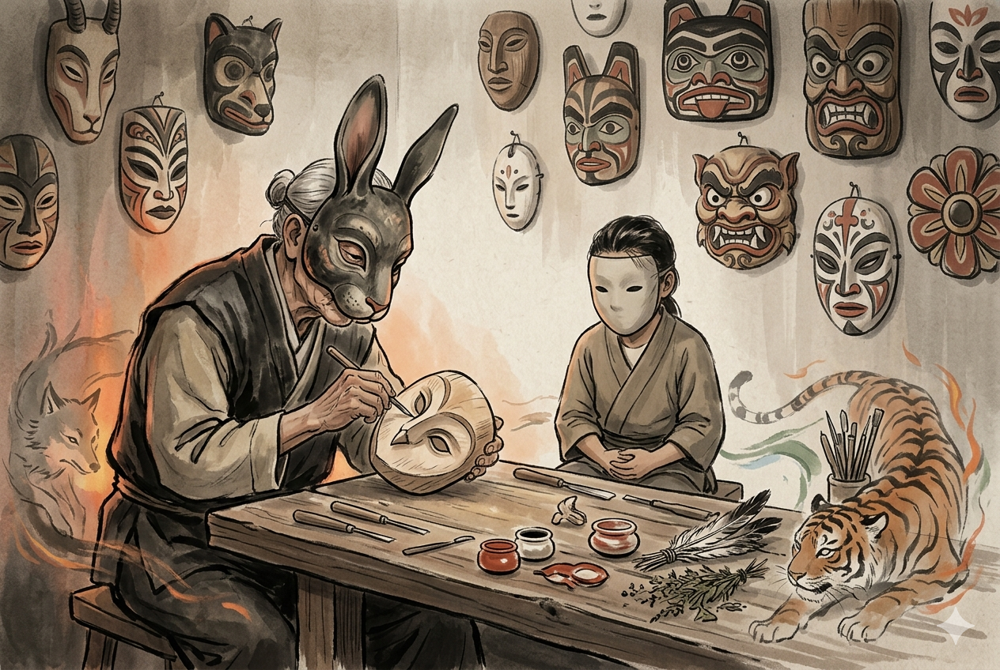
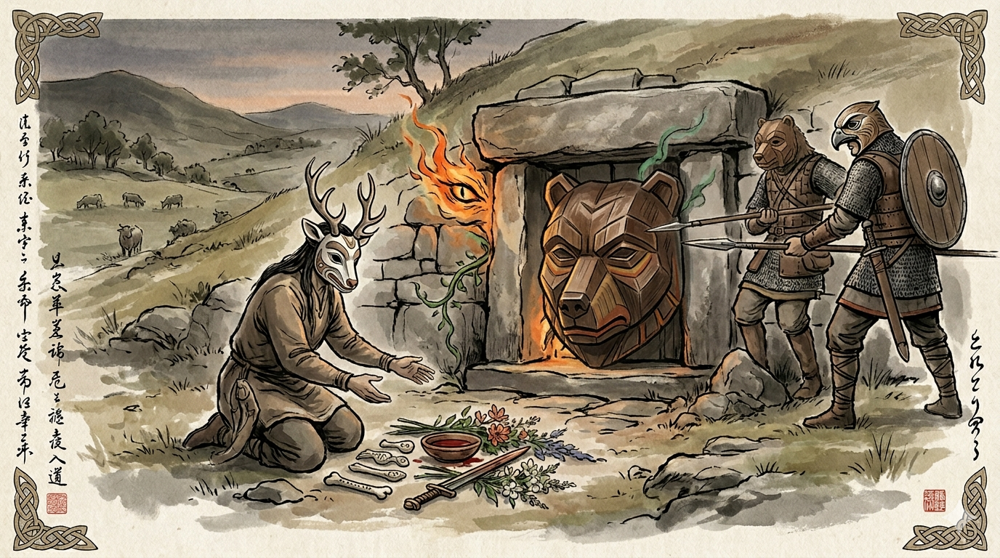
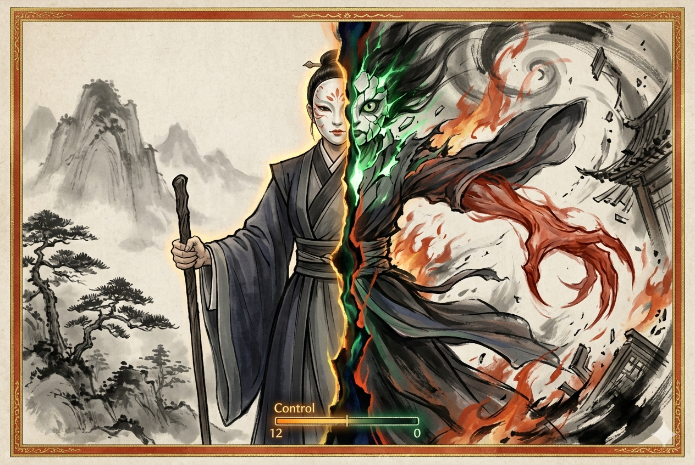
The Auric League: A Symphony of Minds
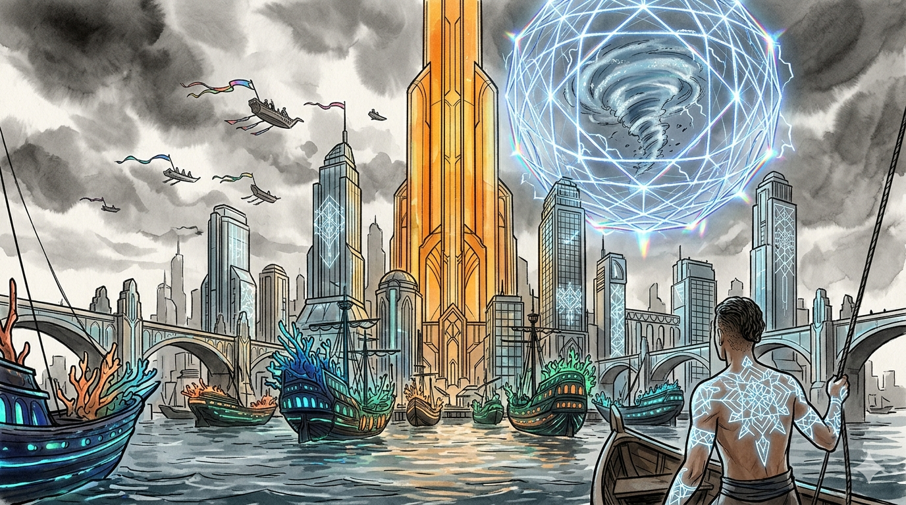
The Auric League: A Symphony of Minds (art deco mercantile maritime magocratic venice, with mandatory attendance of wizard schools for all citizens)
In the shadow of the fractal spire of the Amber Tower is the city of Iridassa, jewel of the Auric League. Beneath chalcedony bridges arching gracefully between glass-wrapped towers, the city of Iridassa breathes. Its canals hum with the songs of tattooed windcallers, shaved heads gleaming as they wrestle gales into submission, propelling living coral ships — bioluminescent hulls pulsing like hearts — through a harbor choked with floating wavefarms and a thousand kinds of skiff, barque, and canoe, unimpressed by the looming bulk of a majestically levitating spellgalleon overhead.
The sky is busy with airborne skiffs ferrying apprentices to their morning lectures, while the bridges are crowded with workers on their way to workshops. Tattooed windcallers squabble with high magi above the docks where ships from a hundred lands come, heavy-laden with wonders and spices to sell.
Above it all, the Skyways float: districts of impossibly eschered gardens where high magi drift on personal zephyrs. An awakened crocodile in a professor’s mantle argues with a sahuagin diplomat over spiced coffee in a café staffed by animated cutlery; outside, a blink dog bard recites epic poetry to a gaggle of rapt children in the shadow of a storm-cage — a lattice of starlight gradually bleeding the energy from a caged typhoon to power the city’s million lights.
This is the Auric League: a symphony of minds. Where else would you find a poor street urchin running cons with an illusory deck of cards? Or see a living spell bartering for reagents with a sentient octopus vendor on a floating market-stall shaped like a seashell? Where else could a simple sailor, fingers cracked from weaving nets, whisper a cantrip to warm his hands — magic taught to every child who cares to learn (though as teachers will no doubt attest, many don’t seem to care at all)? The Scholarum’s promise — that knowledge is power — hangs in the air, as tangible and elusive as the sea breeze. You can taste it in the self-flambéing street food, smell it in the ozone wafting from the everglow lamps, see it in the city's hundred libraries, which famously never close (and where else in the world would ninety nine 24-hour libraries be insufficient?).
But climb the Amber Tower’s thousand steps (or cheat and catch an eldrikinetic gondola), and the city’s underbelly comes into focus. The lower wards huddle beneath the Skyways’ shadow, their ramshackle roofs soaked by near-daily rains — clouds kept carefully away from the wealthy upper neighborhoods, but, as the geoccultists like to say, the rain must fall somewhere. Down here, nonmagical dockworkers unload crates of powdered ivory (just the thing for transmutative potions) under the watchful eyes of Spell-Legionnaires, runescale armor shimmering with wards. A biollurgist’s failed experiment — a crab the size of a wagon, its shell tagged with animated graffiti —scuttles into an alley, ignored. The League’s creed — all minds are sacred — has a way of faltering where gold outshines ideals. Yet even here, hope glimmers: a gang of Uplifted rats plot a heist that will set them up for life, while upstairs a starveling orphan practices her very first cantrip, repeating the whispered formulae over and over again until it is perfect, her eyes fixed on the Skyways’ distant glow. In Iridassa even the shadows hum with possibility, and the only thing sharper than the spells is a lower-warder’s hustle. Welcome to the Jewel Cities. Look at what we have made.
Key words: wealthy, wondrous, cosmopolitan, scholarly, arcane science, complex, maritime, deeply unequal: haves (of wealth and power, especially magical and political power which are of course linked) and have-nots. Visual inspiration: art deco and art nouveau, glass and steel and mother-of-pearl towers, the intricacy of Islamic/Moorish and Mudejar architecture, aesthetics of futurism, djinn/genies, Escher and impossible architecture, a maritime society outgrowing its origins: tattooed windcallers squabbling with high magi floating above the decks of living airships, artifical mobile islands of magebred coral
Origins of the Amber Tower: Magocracy Universalis
Some places are just meant for man: green, rolling fields dotted with clear streams and lush forests of trees hanging heavy with fruit. The Flint Islands are not that kind of place.
They’re perpetually storm-wracked, sweltering lands with sandy soil and barely any fresh water, where what fruit does grow tastes of sea-brine. There is really no reason why humanity should have been capable of building much of anything there. And yet, they did. The Amiri were never a wealthy people, but they fished and they sailed and they scratched out what living they could, when the hurricanes weren’t flattening their structures and shattering their ships. And when a particular group of exiled wizards were looking for a home, they chose to erect their tower on the Flint Islands.
There were not all that many mages in that initial group, but the handful that led them were first-rate. It began with the Tower itself, of course — wizards are quite predictable in some ways. Mud was transmuted to stone for foundations, walls were instantiated from raw magic, Fabricate spells turned sand, shells, and gravel into glass and concrete facades. Magical bonfires were set to evaporate massive quantities of seawater so the salt could be harvested for spellcraft and trade, and the evaporated fresh water for life.
Few would come to study in such a bleak place, and so the wizards (who are always hungry for apprentices) set about working with the Amiri to improve the whole of the island. The Heuristicist awoke the elemental spirits in the islands, and set them to work building structures, warding off hostile wildlife, and providing heat and power. The Geoccultist tapped into the nearby tangle of leylines, using them to fuel geomantic enchantments that captured typhoons in cages of starlight, gradually siphoning off their energy for productive use. The Biollurgist twisted the hardy plants and animals of the minimal island ecosystem into entirely new forms, flora and fauna reconfigured to better serve human needs. And gradually, from across the three seas, people came to join: the islands were still hard living, but it could not be denied there was opportunity there, and when trouble comes, the protection of wizards has always been valuable. Within a century, the islands had changed from a deserted, barely habitable backwater to a bustling archipelago maritime metropolis. And the wizards looked up their work, and saw that it was good. So they named their new city ‘Iridassa’, meaning “That Which We Have Made” in the tongue of their distant homeland.
But wizards have always been ambitious, and having carved a successful city from an inhospitable wasteland was not enough to satisfy that ambition — surely with their knowledge and might they could build something more. But the wizards were simply too few — a perennial problem. Through the ages many cultures had valued magical power — the wizards of Iridassa had learned their craft at the feet of older masters, after all. But wizardry was a danger to those in power, something the people feared and the powerful had always sought to control. But here, among the Amiri, the wizards found a culture without a tradition of royalty or aristocracy. And, having seen the way the Auric wizards had reshaped their home for the better, the Amiri proved unusually amenable to magic, eager for it, even. The power of wizardry had always been that it was, like the literacy it depended on, fundamentally learnable. Perhaps, they thought, the study of wizardry need not be relegated to just a privileged elite. The unique genius of the Auric wizards was not in teaching spellcraft, it was in teaching spellcraft to everyone. Not everyone can become a wizard, much as not everyone can become a virtuoso musician...but most people could, with a few years effort, learn a little music, or the basics of painting, or languages…why not a little arcana?
And so the Auric Tower set about its greatest project yet: the Scholarum Universalis. Every resident in the Flint Isles was invited to attend (and within a generation that invitation would become a requirement), no matter their station (for had not many a wizard through history been born in unimpressive circumstances?). They were taught whatever the wizards thought would make them most useful — literacy, of course (it was a school taught by wizards after all), but also the basics of mathematics, a (carefully curated) history, and, most especially, the fundamentals of the principles of magic. It was hoped that teaching a broad population would result in more wizards being identified at a young age, so they could be taken on as apprentices and be properly trained early. Those with real talent would be siphoned off to become full magi, but the wizards supposed that the less gifted children of even the lowliest fisher-families might, with a few years of effort, learn a few cantrips that could perhaps improve their lot.
It was not obvious at the time that this decision would fundamentally reshape the destiny of the Flint Isles. The Scholarum did indeed succeed in finding, recruiting, and training more full wizards, as they had intended. But that was just a marginal improvement. The real differences to society weren’t the result of a few — or even a few dozen — extra wizards graduating each year. No, the true difference-maker was the creation of an educated and (literally) empowered populace. Within a generation, every third farmer or fisherman in the Isles could Move Earth or Create Bonfires, summon Gusts of Wind or Freeze things on command, completely changing the limits of the possible. Productivity skyrocketed, magically-enriched and eventually partially self-working farms producing more in a single growing season than whole counties could have produced in a year a century prior. Wavecallers parted the waters and summoned winds to send ships hurtling over the seas faster than any mundane craft could match. Craftsmen began producing work faster, and often better, than anywhere else on earth. Most subtly but perhaps most profoundly, this arcane revolution was supercharged by a population that had suddenly been handed (near) universal literacy and numeracy, and taught from a young age that knowledge is the path to power, then turned loose to make their own innovations. Within just a few decades of the Scholarum’s founding, society in the Flint Isles was barely recognizable.
The lessons the people of the Flint Isles learned from this explosion of wealth and opportunity were threefold: first, that magic was indeed the road to prosperity. Second, that education was the road to magic. And finally, most subtly, the Iridassans came to believe that minds are, must be, sacred — for while any domesticated animal can be trained, only a sapient mind can learn to direct its own growth. Of course, not all minds are human, and so the people of the Flint Isles went to great pains to welcome those sapient creatures that shared little with humanity- giants from the mountains, sahuaguin from the depths, even some awakened spirits like dryads or naiads. These nonhumans brought unique perspectives with them, and benefited no less from the Scholarum's trainings, while contributing in their own way to the Isles.
If minds are sacred, and many minds of different characteristics can sing together to make novel insights, this philosophy also seemed to suggest that increasing the number of minds may be a moral necessity. And as the minds of sapient creatures vary so tremendously, how much wider must the space of possible minds be than just those of demihuman descent? What great works of art and magic, what ingenious creations, and what daring magical insights could be produced by a mind utterly unlike that of a hominid? For this reason, the Amber Tower began to go to great pains to Awaken creatures; some going even farther to create the ‘Uplifted’: awakened creatures with both their minds but also their bodies remade to better accommodate sapience. Spend a day in one of the rooftop cafes and you will see dolphin wizards bickering in the canals, blink dog storytellers entertaining passersby, crocodile priests and manticore warlocks and keen-eyed Uplifted owl librarians, all playing their roles in society. The aim is for stable, sentient populations to be created of most creatures, expanding the diversity of minds as far as is available. More minds, and more kinds of minds, means eventually more magic and more kinds of magic, and that leads to better lives for all...or so the dogma goes. Of course, non-sapient creatures cannot consent to Uplift, and not all respond well to suddenly becoming sentient; but wizards have ever been a bit callous when it comes to the rights of the unthinking.
These days, the Flint Islands are called by another name: the Jewels of the East. Spreading outward from Iridassa, a dozen smaller satellite polities formed across the whole of the archipelago, and even beyond; their governments federated so deeply that it is impossible to tell where the government of one ends and where Iridassa’s begins. The islands think of themselves as a federated republic, in which the nation is ruled by a parliament. But in practice they function as a magocracy, social status and political power being determined by the amount of magic one can wield (in principle, status was to be determined by education, but in practice it turns out that few people are as impressed by a brilliant historian as by a merely good historian that can also fly and command the lightning). Cities of gleaming glass spires connected by delicate ivory bridges are protected by magical Stormshrouds, shaping the weather to guarantee peaceful seas and defending against attack. Artificial, mobile islands of livecoral support plantations, mansions, or fortresses — often all three together. Jasper-plated war-frigates carrying detachments of Spell-Legionnaires to enforce the will of the Tower wherever the waves go. And now, flying spell galleons and floating fortresses have begun to project power even deep inland, leading many communities to wonder just how long they can continue to avoid the Magocracy’s might.
Geography of Iridassa: the Vertical City
The specific geography of Iridassa itself is best understood vertically, rather than laterally - the difference between two neighborhoods in the Heights is absolutely dwarfed by the difference between either neighborhood and the one immediately below or above it.
The Deeps: Below sea level are the Deeps, where you find the desperately poor or those with something to hide (illicit arcane laboratories for pursuing illegal research, production facilities for illegal substances, etc.). Maps of the underground are rarely useful for long: the people who choose it (or are forced to live there) tend to stay on the move. Also the city's geography is unusually changeable, with levies, canals, and such to channel seawater away from valuable areas of the city, in those cases when the tides are too powerful. "Half finished" uplifts or awakenings tend to wind up down here, their nonstandard bodies and often sadly fractured minds preventing them from fitting in elsewhere. Organized crime (such as the Red Mantis Syndicate) and semi-organized crime (any of a hundred little street gangs) provide most structure; everyone else is just trying to survive.
The Lower Wards: At and around sea level are the Lower Wards surrounding the harbor, in many ways the beating heart of commerce: airships are still somewhat rare, and the culture of Iridassa has long valued the sea. The Lower Wards are marked by industry, commerce and the usual characteristics of harbor-towns: smuggling, (mostly organized) crime, entertainment, warehouses, all-night taverns and the like. This is where you start to encounter the Mundane in real numbers: alongside those who can cast a cantrip or two and maybe some rituals, but probably not more. Compared to other lands, life here is actually pretty decent: you probably have enough food, a space to live, and enough income for the basics. And hey, if your kids work hard (and get lucky) they could make it all the way to the Skyways. The weather encapsulates it: the Heights and the Skyways literally live above the rainshroud, while all the rain diverted from higher altitudes has to go somewhere, and people in the lower wards get rained on probably 2 days in 3.
The Heights: Above the Lower Wards are the Heights: the neighborhoods deeper inland (and uphill), but also the upper reaches of the city's many towers and tall buildings, which are interconnected in dense webs of sky-bridges, balconies, airy gardens, etc. This is the home of three groups: the Mundane (nonmagical persons) that have nevertheless achieved unusual success, the city's yeomanry of somewhat magical persons (people with the Magic Initiate feat; mostly cantrips, but some rituals; think arcane locksmiths, Stokers that create and maintain bonfires for use in desalination, wavecallers and windcallers, etc.), and the third group are the handful of true magi that have either opted out or failed out of 'high society.' These last — be they wizard, sorcerer, artificer, or what have you — tend to be too economically valuable to slip into true poverty, but are unable or unwilling to compete in the often ruthless society of the Skyways. Middle class in a world where that is unusual: a lot of striving not to slip into the depths, or to get one's child into Scholarum Advanced courses.
The Skyways: Finally, there are the Skyways themselves: a floating district of penthouse towers. This is where the Auric elite work and play, and it looks like it. While there are no laws forbidding those of lower prestige from traveling to or doing business in the Skyways, there are myriad subtle barriers screening out all but the most determined. Getting to the Skyways at all is (not accidentally) difficult, as is traveling from one flying tower, hovering pavilion, hanging garden or floating casino to the next. Sufficiently powerful magi can fly or teleport themselves around for free, and if needed, the less magically endowed can buy access to the Skyways on a flying carpet or in a floating gondola, but those prices are kept at a high enough floor that for most, life amidst the flying towers is only a dream. Additionally, the district's ostentatiously dangerous lack of railings or safeguards subtly underscores that the heights of the city are not meant for the nonmagical: falling is no danger to someone who can fly or cast Feather Fall (or who can afford a Feather Fall token, in a pinch). The whole place is very Iridassa: ostensibly equal — anyone can go to the upper city! It's not illegal or banned to anyone! — but in reality only the very magical or very wealthy can access it, which is rather the point.
Beyond Iridassa are a handful of lesser polities amongst the Flint Isles and along the nearby coastline. These other cities were either founded by Iridassan colonists, or have fallen so thoroughly under Auric economic, military, and cultural sway that they might as well have been. These 'Second Cities' are places where the young and ambitious will often try to establish a reputation or make their fortune, but most dream of returning to Iridassa when they've done so: it is, after all, the fulcrum of the world. The League is technically a federation of 'independent' cities, but the federal balance of power is weighted heavily toward Parliament and away from local authorities.
Guilds and Circles: the Two Social Structures
Chief social structures are the Guild and the Circle. Guilds are hugely important and influential, exercising significant political, economic, and arcane power. Each guild sets its own rules and privileges for membership, but tiers and hierarchical arrangements are common (Archmasters, Masters, Practitioners, Journeymen, Apprentices, each with different duties and rights). Major Guilds include the Guild of Travel (wavecallers, windcallers, horizonists, yggdratects), the Guild of Creation (wonderwrights, dreamasons, heuristicists, masons, warders), the Guild of Blades (spell-legionnaires, marines, bladesmen), the Guild of Growth (greenhands, weatherwrights, biollurgists), and the Guild of Knowledge (scholars, starscribes). By law anyone can leave their guild at any time, and join any other guild that will have them, although often there are contractual penalties for leaving — nondisclosure agreements, repaying guildloans at outsider interest rates rather than member rates, sometimes chirurgical memory removal.
Circles are essentially extended "found family" structures — voluntary associations, basically extended households, which choose to come together to live, learn, sometimes work, raise children, etc. They vary in size, usually clustering around five to ten members, and often (though not always) include wizards from different guilds. Any given Circle will, like any family, have intense internal culture and squabbles and drama, and over time will generate its own rules, traditions, and mores. Foreigners commonly expect Circles to be polycules, due to the popularity of salacious rumors about what the decadent wizards get up to, but in fact different circles may have any arrangement of monogamy, polyamory, and aromantic members; what matters is the way they fit together academically and psychologically.
You are generally considered a member of the Circle of your parents (unless you're kicked out) until the time you can cast your first spell or until you graduate from the Scholarum, if you never master any spells, (if you never graduate you're not likely to find another Circle willing to take you). Some choose to stay in the circle to which they were born all their lives — some circles (The Thornwreath Covenant, The Seven Stars, etc.) have been ongoing for generations. But traditionally, most young people will create or join another Circle with their friends/classmates upon graduation from the Scholarum. Circles are, if anything, even more important in the Lower Wards: the people tend to work longer hours at demanding and sometimes dangerous jobs compared to the Heights, and a reliable Circle is vital — to have your back when you accidentally break your foot and can't afford a healer, to watch your kids when the foreman insists on another mandatory night shift, or just to share your food and time and generally make life worth living.
Wizardry by the Numbers
Wizardry is the science of manipulating the unseen currents of energy that flow throughout the world to achieve some effect. What makes it distinct from other magical traditions is the way it abstracts and standardizes these forces, seeking to make them comprehensible, predictable, and impersonal. This naturally results in the loss of some nuance compared to traditions with a focus on personal communion with the beyond, but it has the great advantage of being (relatively) easy to teach and producing (mostly) predictable outcomes. A wizard that seeks to train apprentices need not search for someone with a special bloodline or a unique attunement to the beyond or who is already beloved of spirits; it is enough to simply find candidates that are intelligent and motivated to learn.
Like literacy, masonry, or rhetoric, wizardry is a skill some people have a natural proclivity for, but it is comprehensible and practicable at a basic level by almost anyone — it is estimated that around two in three students of the Scholarum ultimately develop enough skill to cast a cantrip and thereby secure voting rights, although the higher reaches of power are accessible to far fewer: perhaps one in ten master spells of the First Circle, while only one in a hundred master the Second, and barely one in a thousand students master the Third Circle or higher. In absolute numbers, in a three-million-person city, perhaps 1% are true Scholars capable of a significant breadth of magic. Awakened animals, living spells, and the Uplifted are collectively perhaps ten or twenty thousand souls; they cluster at the city's extremes — either the Skyways or the Deeps — because the Uplift process tends to either produce unusual cognitive gifts (and thus unusual success) or run into complications that leave the subject struggling.
Within Auric society, there is a noticeable cultural preference for wizardry, due no doubt to the profound influence of the Amber Tower and the way the academic nature of wizardry complements the scholasticism of Auric society. However, the Auric cultural affinity for magical power, and tolerance for — not to say fascination with — magical creatures extends to other types of spellcasters, especially sorcerers. Those who derive power from the divine or primal forces of the world are generally considered interesting, but treated much the same as provincial practitioners of some exotic local art form would be. And pragmatically, since any magic at all is worth so much more than no magic, warlockery and pact magic is not uncommon — but it is considered rather embarrassing to have one's magic rely solely on a patron's largesse. Most warlocks will likely find themselves quietly excluded from high society and the halls of power, unless their Patron is something truly exceptional.
The Ethics of Uplift
For all the dogma of sacred minds, lots of internal dissension exists around the ethics (and economics) of Uplift and Awakening, exacerbated by the internal inequality within Auric society — is it right to bring a rat to sapience if he's never going to have enough magic to escape serfdom? And if he does learn magic, what then — are the natural born urban poor supposed to accept that resources are getting routed to "made-up life" at their expense? Basically two approaches exist: Awaken (which grants sentience and intelligence but leaves the body alone) and Uplift (which adds biollurgical modification to make transitioning into demihuman society "easier" — giving very small creatures larger frames or very large creatures smaller ones, providing opposable thumbs, modifying vocal cords to enable easier speech, sometimes enabling bipedal walking, and occasionally (most controversially) limiting prey drive).
An illustrative example: an Awakened crow is mostly indistinguishable from a regular crow until he starts talking (and sometimes even then — baseline crows are pretty smart), but an Uplifted crow is a kenku — bipedal, probably between the size of a child and the size of a small adult human, possessed of hands with grasping thumbs. Most common Awakened species are apes, elephants, dogs & wolves, octopi, squid, corvids, house cats, and a certain species of spider. Most common Uplifted are grippli (tree frogs), podes (cephalopods that use tentacles to walk like humanoids), kenku (corvids), various ungulates (minotaurs/yakfolk/ox-men), and leonin.
The related debate around Living Spells (knots of spellcraft so complex and energetic they become self-sustaining, sometimes sentient) and Constructs (heuristically programmed golems that sometimes develop emergent minds) is, if anything, even more fraught. As of now it is not illegal to create a mind (in fact quite the opposite), so some heuristicists have produced hundreds of such "free-thinking" living spells and constructs. Iridassan law recognizes any creature capable of surviving and displaying sentience independent of a spellcaster as a full person; those who can only exist while sustained by a mage have no individual legal rights and are treated as extensions of that mage — including for purposes of liability. Keep your familiars under control.
Apotropaics: Mundane Defenses Against Magic
Apotropaics are (mostly) nonmagical substances and techniques used to defend against or disrupt magic — the punk countermeasures that have developed in the bright shadow of the Skyways. An iron needle to puncture illusions. A circle of salt to ward an area or disrupt conjured or summoned creatures. Lead-shielded rooms to block scrying sensors. Living things to block ethereal travel and sight — a lead cage with moss growing on it is surprisingly useful for people who have something to hide. There's a whole body of folklore the Mundane have developed to help them scratch out a living in a society where teleportation, telepathy, and scrying are commonplace. Crucially, in a society where even basic privacy is a commodity only the magical can afford, apotropaics are how everyone else claws back a little agency.
Physical Barriers: Lead-lined hats and clothing compartments interfere with telepathy and scrying. Cold iron disrupts most enchantments; some Mundane wear iron jewelry or carry iron needles. Salt circles interfere with certain forms of magical surveillance. Mirrors can deflect or scatter certain types of divination. Running water blocks or distorts magical detection. Copper mesh in walls creates a crude Faraday cage against certain magical energies. Gold rings are rumored to foil teleportation — slip one on an unwilling traveler to keep them in place.
Chemical and Environmental Solutions: Mage's Migraine — a pungent mixture of specific herbs and minerals that, when burned, creates smoke that causes discomfort to anyone actively casting spells nearby; used during sensitive discussions to discourage magical eavesdropping. Void Ink — charcoal, iron filings, and spell-scroll ashes; when drawn on skin, creates "blind spots" that most divination spells slide around. False Aura Sprays — perfumes that make the wearer register as a cat or a piece of furniture or "magical background noise" to detection magic. Dream Blockers — teas and tinctures that produce dreamless sleep, protecting against oneiric invasion. Certain plants (rowan, St. John's wort, holly) naturally disrupt certain magical effects; burning specific herbs creates smoke that interferes with scrying.
Cultural Practices: Nameshifting — the practice of regularly changing one's name and identity markers, as many tracking spells lock onto consistent identifiers. Lower ward residents might have a "work name," a "street name," and a "true name" known only to close friends. Rhyming Slang — elaborate argot that substitutes meanings through rhyming patterns; since magical translation and comprehension spells work on direct meaning, rhyming slang creates a language layer that's difficult to magically interpret. Walking the Loops — specific patterns of movement through the city that cross overlapping jurisdictions of different magical authorities, creating confusion in tracking spells. Dead Drops using apparently mundane features of the environment (graffiti patterns, arrangement of trash) to encode messages without magical or physical evidence changing hands.
Salvaged Tech: Spell Leech Jars — glass containers prepared with certain catalysts that can capture and store ambient magical energy from spent spells; when broken, they release uncontrolled bursts of magic that temporarily overwhelm detection systems. Distortion Lenses — eyeglasses made with glass salvaged from failed enchanted items, allowing the wearer to see certain types of magical effects (though prolonged use causes headaches). Echo Boxes — containers lined with materials that absorb and then gradually release magical energy; when placed around a location, they create confusing "echoes" that make it difficult for tracking spells to pinpoint individuals. Broken Mirrors — fragments of enchanted mirrors that failed quality control; when properly arranged, they create small areas where scrying magic reflects back on itself.
Spell-Legionnaires: elite fist of league
The jewel cities have a variety of military forces (snobbish midwits like to say the nonmagical are only really useful as meatshields/cannon fodder/line infantry, but even they play a vital part crewing the warships, which often requires expertise that need not be magical), but the military elite of the amber tower are the spell-legionnaires. They specialize in creating a phalanx-style unit bristling with overlapping wards and enchantments, a many-man juggernaut of unbreakable magical protections and awe-inspiring retaliation.
Typically fight Einhander, with a one handed weapon (swords and spears most often, but it varies) and an empty offhand for spellcasting, or Keinhander, two empty hands, relying on combat cantrips for all-range killing. Two handed weapons are seldom used because legionnaires fight in close formation so much, making it hard to manipulate a larger weapon, though pike-staffs (stavepikes?) are by far the most common, often used by officers, full magi, and other backliners. Shields are generally created by cantrips/spells, and few legionnaires use physical shields unless they are very powerful magic items, since they can interfere with spellslinging.
Even retired legionnaires proudly wear the insignia of their legion (they all look like different varieties of celtic knot, the specific details of which reveal rank, regiment, unit, etc: it represents the knotting together of many lives to create something beautiful and intricate and greater than themselves: the Legion) very often tattooed and also usually on the hilt of a weapon, or as brooch, a medallion, embossed on armor or embroidered on cloth. "No such thing as an ex-Legionnaire" is a common saying.
Marines: the tip of the spear
While the Legionnaires are the tower's armored fist, the Marines are the tower's scalpel: fast and precise. Traditionally deployed aboard spell-galleons and airships, marines specialize in defending the highly dangerous (and incredibly expensive) warships from boarders (extremely important but also usually easy; few forces can catch a flying spell galleon to board it even if they want to — although Marines will point out that means that when you need someone to repel boarders of an airship, you're guaranteed to be dealing with something terrifying, and will want the best), and employing fast, disruptive offensive tactics: aerial or underwater insertion, sabotage, ambushes, assassination, etc. Compared to the Legion, the Marines are less 'magic spartans,' more 'magic SEALs'. Marines' magic is less straightforward than the legion, and tends toward utility: amphibious breathing, featherfall, flashbang, longstrider, jump, silence, pass without trace, hypnotic pattern, etc.
Typically fight with a warstaff (to give ranged cantrips extra range) or a one handed weapon (swords and spears most often, but it varies) and an empty offhand for spellcasting, or two empty hands, relying on combat cantrips for close-range killing. Famous for using flickerskin cloaks, which shift coloration and patterning constantly to create pretty-good camouflage no matter where or in what lighting conditions one finds oneself. Often, a marine will wear some article of flickerskin even in "civvies"- a shirt, a coat, even just a patch. Really high level officers might get full invisibility-cloth on the battlefield, and like to incorporate some for their glove or bracers, making that body part seemingly vanish. Typically wear an emblem in the shape of a gryphon (deadly on land, sea, and air) as a belt-buckle, brooch, hairpin, etc.
Auric Navy
The central military force; in much the same way the PLA has a navy or the American army used to have an airforce, the Auric Navy has an army — not vice versa
This is where you find Auric line infantry: typically split between lightly-armored Fusiliers wielding 'Matchstick' battle-staves providing mid-range fire support (note that Fusiliers require combat cantrips and therefore are considered most prestigious), more defensively-minded Tercios typically armed with firepikes (like a normal pike fitted with a limited-use short range magical salvo that does not require the wielder to cast cantrips) and more heavily armored Grenadiers using blade and shield (and a variety of magical munitions such as Flash-bangs, incendiaries, grenadoes, etc) to lead assaults on enemy lines and fortifications.
So there is a de facto hierarchy in the Navy's infantry forces: Fusileers typically have the most magic and therefore get the best toys, and are in the least immediate danger. They catch a certain amount of flak for this from the others (think the way other branches talk about the air force). Tercios have typically little or no magic and are the Navy's shield, meant to hold the line against enemy assaults while Fusileers do the work of breaking the enemy (also note: firepikes are two handed, so tercios are both front-line troops and shield-less troops, which can be especially dangerous). Generally a pitched battle is to be avoided in Iridassan military doctrine (magic providing such superior communication, Command and Control, and logistics, so that longer fights favor the League), but when unavoidable such a battle comes down to whether the devastating salvos of the Fusileers, the magical bombardment, and waves of battlefield-altering spells can break the enemy before the enemy can break the Tercios. Then Grenadiers are their own elite: heavily armored, heavily armed with a wide variety of man-portable ordinance (hence the name grenadier - but not just explosives, also darkness-radiating grenades, smoke grenades, flashbangs, psychoactive terror-bombs, grenades of flesh-to-stone or stone-to-glass, and crazier stuff), and intended to be shock troops, breaking the enemy where they are strongest — grenadiers are in the most danger, but are also best equipped to handle that danger. The overall naval hierarchy is broader, of course: sailors, airshipmen, infantry, and logistical support roles exist in a complex web of varying prestige and influence.
"Matchsticks": slang for the cheap, mass-produced war-staves Navy fusileers carry into battle. They make effective bludgeons in a pinch, but mostly are designed to be cantrip-channeling range-extending arcane foci: give your firebolt the range of a longbow, etc. So called because they are one of the few mass-produced goods common in Iridassa, and assembly-line wards tend to be slightly imperfect; so the business end begins to overheat with use, lightly charring the wood there- after a few weeks of duty they tend to look a bit like a used matchstick.
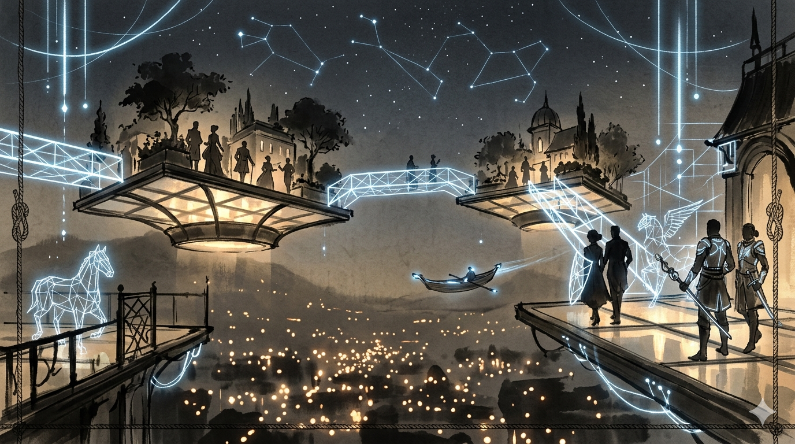
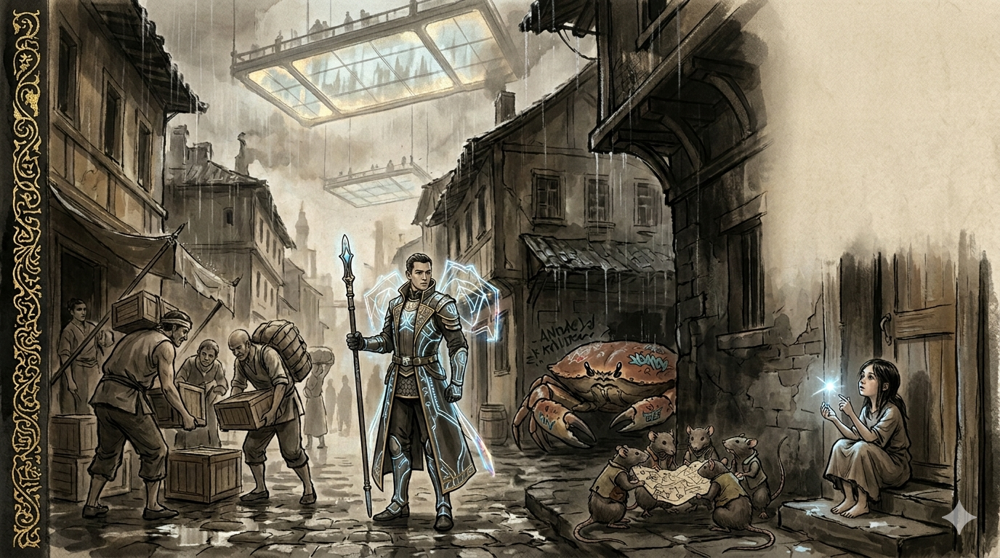
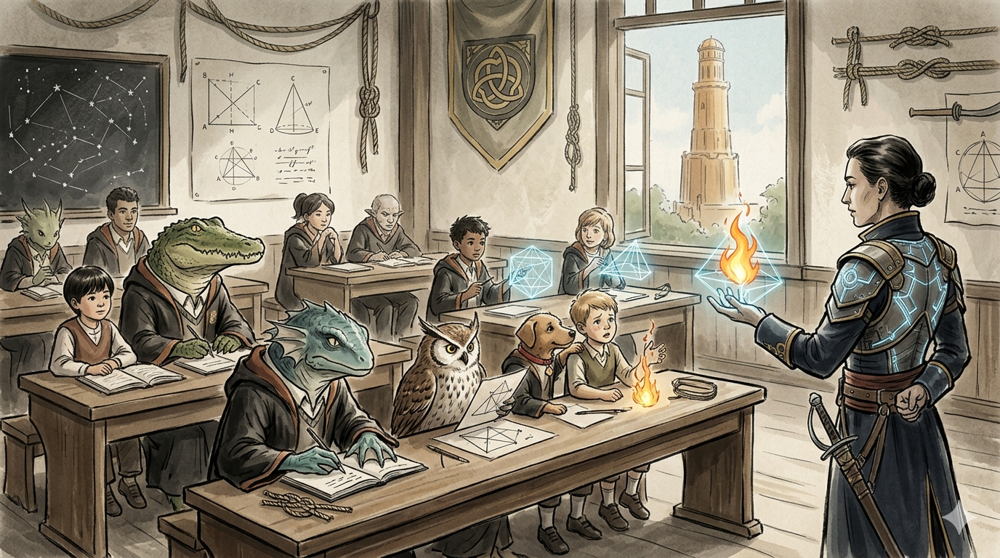
The Taltasqua Hegemony
The Taltasqua Hegemony: Butchers of the God-Beast (imagine if the Aztecs were founded by knights templar and now they keep the tarrasque chained up in their basement)
Vignette: Blood and Poetry
Marcus adjusted the collar of his formal coat, carefully arranging the iridescent scales to catch the sunset. Around him, the Valen gardens bloomed, impossibly lush in the desert heat, flower-scent mostly masking the ever-present tang of blood on the wind. Observers murmured restlessly; the duel would begin soon. His opponent, Elena Drakov, finally sauntered out to take her position across the silk-draped courtyard, calligrapher's brush held loose and ready at her side: four feet of gleaming steel tipped in wolf-hair.
"Marcus Lyras, your house murdered my cousin," she said, her voice carrying the practiced lilt of aristocratic courtesy. "I call you honorless, but you should know why I choose to give offense." She ran the edge of a belt-knife against her manicured thumb, drawing a perfect bead of red. The handful of gathered nobles murmured in anticipation. Among them, Marcus spotted an Iridassan merchant, her expression caught between horror and fascination.
Marcus bared his teeth in an expression that could not be called a smile, then began rolling up his sleeves to reveal the spiraling scars of the Marrow March. Few had the will to survive that test, but the Crimson Guard's rite had left its mark on more than just his flesh — his blood sang in time with the god-beast's thunderous heartbeat, though the Citadel was miles from here. "I know. House Drakov killed three of my retinue during the Victory Day brawl last spring," he replied with equal politeness, uncorking a vial of skitterspeed tincture. "But tonight isn't about vengeance, is it? It's about art." He downed the alchemical enhancer in one swift motion, feeling his muscles coil with unnatural tension. "Shall we show our foreign friend how Taltasqua does culture?"
Key words: aggressive, physical, biological, alchemical, fearless, active, decadent, hegemonic, lush, violent, herculean-heroic (focused on virtues of arete, fearlessness, and violent self-sacrifice in war or for honor, but self-indulgent and sometimes cruel in peace), protective of the weak but also condescending to them
Once upon a time there was a creature like no other — an immortal, impossibly destructive beast, something closer to a vengeful god than an animal: the Tarrasque. It ravaged the world every few decades according to its inscrutable whim, and while it could certainly be hurt, it could never be killed. Eventually, an army was assembled, led by the greatest heroes of the age. Most importantly, a number of powerful magical weapons were created for the battle. The monster was lured into a tight canyon and after a bloody battle, and at terrible cost, the titan was defeated — though of course it could not be slain. It was impaled by thirteen Immovable Harpoons (like an immovable rod, but bigger and spiky) at the 13 acupuncture meridians of its alien physiology, each attached to a thick adamantine chain sunk deep into the canyon walls by magic. The Beast still could not die, but the battle had weakened it enough that it could not escape the bindings. But the regenerative powers of the tarrasque are the stuff of nightmare, and so every day the beast must be bled again, lest it recover enough strength to tear free of the 13 bonds.
A fortress was built around the Tarrasque, to watch over it. Every day its watchers must labor with spell and steel to keep the beast too weakened to escape. Of course, the blood, flesh and other body parts of an immortal engine of destruction do have certain useful properties. A side effect of keeping the Tarrasque imprisoned like this was a never-ending supply of powerful magical and alchemical components. The warriors and wizards who strove to keep the beast weakened built a fortress to house themselves, and farms to support them (mostly watered by Tarrasque blood, since water is scarce in that region and the titansblood tends to get everywhere regardless). In time, a city grew up around the fortress to house the wizards, smiths, scholars and alchemists that came to exploit the god-beast's bounty. Eventually, it came to seem as if ensuring the unending stream of Tarrasque blood, flesh and bone was more important than imprisoning the beast itself.
The core of Taltasqua’s might is twofold: the wealth that comes from harvesting the godbeast, and the Taltasquan army, elite soldiers painted with inhuman blood, bulging with alchemically cultivated muscles and strange growths, covered in keloid scars from wounds no human could survive, girded in armor of magic-reflective carapace and wielding swords of adamant bone set with diamond-hard teeth. The city uses these two strengths to establish a hegemony over the north, turning city states and petty kingdoms into client states and tributaries. The alchemical wealth of Taltasqua provides the city with plenty of carrots to reward those who cooperate, and the Taltasquan army is one hell of a stick for those who won't.
The city faces unique problems, as well. Cannibalistic ghouls are a problem, always wanting to feed on the Godbeast but unable to control the changes that overcome them when they do. Often, people that die in the city rise as uncontrolled undead, something of the beast's resistance to death taken root in the flesh of the city’s citizens. Morticians in Taltasqua are more like special forces than anything else, heavily armed first responders (and so are midwives; an ugly truth Taltasquans hate to be reminded of). Also the flies. Flies that feed on Tarrasque blood, generation after generation, become vicious and hateful blood-locusts, and a swarm of them are a lethal hazard, capable of draining a horse dry in minutes.
Coming from a tradition of militant knights, noble houses fed on intense wealth and bound by the necessity of terrible violence, Taltasqua has an honor culture not to be trifled with. Any insult can — and indeed must — be repaid with violence, else you prove yourself a coward, the worst thing a Taltasquan (grown up in the shadow of a hyper-dangerous immortal titan that must be bled hourly, lest it escape and wreak unspeakable carnage on kinder, softer lands not prepared for it) can possibly be. Duels are extremely common, always to blood, often to death. On the other hand, dueling cultures tend to create extraordinarily polite people, as they know any slight could see them in the dueling ring. And despite the city's brutality, its people are famous for being excessively polite, even charming; most everyone knows something of courtly manners (for fear or giving offense to one's betters, if nothing else). (Think the antebellum south: a dueling culture of monstrous violence paired with genteel charm)
Taltasqua is a study in contrasts: founded by orders of noble paladins dedicated to locking away the world’s most dangerous force of destruction, now governed by those paladin's descendants, decadent noble houses made nearly immortal due to continuous consumption of regenerative Tarrasque flesh. Berserkers painted in transmutative blood that transforms their bodies into living weapons walk side by side with industrial alchemists producing floods of expensive magic items crafted from the godbeast’s body parts - shimmering magic-reflective armour, tarrasquebone spears, regenerative potions and other alchemical miscellanea, and of course the hideously expensive longevity vaccines made from distilled, carefully chosen strips of the godbeast’s still-living (always living) organs.
The city is already massive and yet is growing at a breakneck pace, it is decadent yet noble, violent, watchful and arrogant, dangerous and ambitious. It safeguards the greatest destructive force on Earth, and reaps obscene profits from ruthlessly exploiting that fact. Its army provides hegemony over half a continent, tributary cities sending unending streams of goods into the crimson metropolis, while much-prized alchemical reagents flow back out to keep the client states dependent. A vibrant, verdant, crimson jungle grows in a parched desert, fueled and twisted by an unending fountain of tainted godsblood, grown out of control, growing always. The Tarrasque is an industrial revolution unto itself, embodied in the form of a howling beast.
The Alkahest Syndicate's Alchemical Corps, aka the Blackbloods: It's said that outsiders fear the Berserkers, but Taltasquans fear the Blackbloods. These are specialized alchemists who specialize in crafting and deploying a wide array of alchemical weapons and ordinance on a battlefield, specializing in nightmarish artillery and siege weapons, as well as some hand-delivered alchemical payloads. They support the frontlines with concoctions that heal, enrage or enhance allies far beyond the limits of the demihuman body, and assail the enemies with alchemical explosives, incendiaries, and corrosives, as well as stranger weapons that paralyze, madden or mutate foes. A berserker may kill you with appalling violence, but a Blackblood can ruin you- leave you a blinded, chemical-burn-scarred, twitching quadriplegic suffering from hallucinated terrors for the rest of your life. And that's if they subject you to main-line alchemical munitions; the experimental stuff can leave you riddled with toothy tumors gradually gnawing their way free of you, or drive you so mad you go home and calmly murder your own loved ones, or transmute your stomach acids into jumbled tangles of jagged glass and wire grinding through you from the inside out every time you move, or....look, it's not pretty. The Blackbloods, like the Crimson Guard, are nominally House Guards for the Seat of Cups, but the city leans on their military power more than others, and so funds them disproportionately well.
Alchemical Grenadiers: not always practicing alchemists (but sometimes), grenadiers are chosen for their physical size and prowess, which is then heightened via alchemical transmutation. Throwing arm tends to grow several inches longer and be notably more muscled, as is supporting musculature on that side of the body. Inhumanly strong for close quarters brutality but also armed with throwable explosives or chemical weapons; truly nightmares to face.
"We kill monsters, lad. The iridassans make monsters, in Avalon they worship them, but we kill the monsters, no matter what it takes." - Lance-Captain Jaren Tressyn, Taltasquan Crimson Guard. "The Taltasquans love to boast of their monster-fighting. But they should remember, when fighting monsters the greatest danger isn't failure — it's becoming one." - auric merchant, speaking under condition of anonymity
Alchemical weaponry
Breath of the Beast: Blackblood alchemists have developed a terrifying weapon that releases a pressurized mist of modified Tarrasque blood. Those caught in it experience rapid, uncontrolled mutations, often dying in agony or transforming into monstrosities more dangerous to their allies than anything.
Ordinance: Alkahest naptha, liquid rage (turn your enemies against each other! turn the citizens of a besieged town on one another!), a wide variety of hallucinogenic deliriants, borealis, mustard gas, sarin nerve gas, Skitterspeed, Jotunblut elixir, spellwarp fog, glasslung, and a hundred others
Delivery mechanisms: grenadoes, alchemical censors, bombards, landmines/booby-traps, fog-cannons
Culture of enhancement: Alchemical elixirs are widely used as performance enhancers in many areas of society. Dancers and athletes on skitterspeed; hunters, marksmen or investigators use sharpeye drops to improve vision and attention span; singers and even shopkeepers in the bazaar use Mellif to enhance the beauty and power of their voice; courtesans dose themselves with feverwine, increasing body temperature, inducing a flush, and charging their sweat with pheromones. Not everyone is literally on something all the time, but everyone who can afford to will use something imbibable to give them an edge where they think they need it most.
Titangrafts: carefully selected and carved tarrasqueflesh that remains partially alive; can be coaxed to meld with a living body; you gain a new limb or organ or whatever (prosthetic or augmentation, either works); but you can bet having tarrasque nerves wired to your own nervous system has some side effects. Increased aggression, of course, superior healing, increased appetite, and some deeply disturbing dreams are the least of it; rumor has it uncontrolled mutation and full-blown psychosis are not rare. examples: Living Leather, Tarrasque-Bone/tusk/tooth/fang weapon, Tendon Whip, blood-draining needle-tongues
Misc: Spellwarp Carapace, Throwing Scarab, Alchemical Warpaint, jar of bloodlocusts in suspension, alchemical: alkahest naptha, liquid rage (drink it or deploy it to turn enemies against each other), beastblood tonic/ultra healing potions, living vellum scrolls, alchemical censor (vaporizing poisons and alchemical fluids)
Government: The Council of Thirteen
Taltasqua is an aristocratic oligarchy, ruled by the Council of Thirteen, each representing one of the noble houses that claim descent from the original heroes who led the effort to imprison the Tarrasque. Other, lesser noble titles are recognized, but most exist as cadet branches or clients of the Founding Families. Decisions are made through votes on the Council, usually decided via a combination of political maneuvering, brute force, bribery, and persuasion. Once reserved entirely for the 13 noble families that led the effort to chain the tarrasque; misadventure (and/or assassination) has resulted in the end of four of those family lines, their seats now occupied by non-hereditary powers.
Seat of Cups — Alkahest Syndicate: not really a family, the Guild nonetheless has a representative on the Council. Generally supports war — why else stockpile so much nerve gas, amiright?
Seat of Staves — Carmine Circle: the premier Taltasquan academy of wizardry. Not usually a hereditary position, but since the current headmistress is the daughter of a famed mage of yesteryear, some fear she may seek to ensure the circle's power stays in the family. Political wildcard — current headmistress thinks the Amber Tower is too dangerous to openly oppose, and supports subversion/espionage efforts instead.
Seat of Coins — Brass Circle Company: merchant caravaneers (whatever merchant family is currently in ascension can usually buy a council seat). Oppose wars unless they can be guaranteed to be short and dominant, in which case they are ruthless about leveraging every advantage for the most possible gain.
Seat of Swords — Crimson Guard: deadly warriors and military experts, the seat-holder is traditionally selected from among the Crimson Guard's five captains.
House Lyras: power base in the strategically vital Radien pass, through which land trade to the north must flow; supports peace and wealth; has a deadly feud with House Drakov.
House Kharis: known for their mastery of bio-alchemy and medical advancements, especially the longevity vaccines. Longstanding partnership with the Alkahest Syndicate.
House Valen: famed scholars and arcanists descended from an archmage, maintaining the city's repositories of knowledge, traditional allies of the wizard academy (though most of the House's heirs are actually sorcerers — it's in the blood, you know).
House Pallas: powerbase are the redwheat plantations that feed the city, jealous of how much money the others make, supports higher taxes.
House Drakov: led the campaign to 'pacify' the western reaches and now administers them, supports overt military actions, deadly feud with House Lyras.
House Reshek: most concerned with the state of the beast's imprisonment, least interested in wealth or power, consequently least influential.
House Solis: focuses on public health and sanitation, powerbase in the city's necropolis and deadly sewer system, crucial in a city where death and undeath are constant threats. Looked down on by more prestigious houses, but is too practical to care.
House Corin: subdued the fractious eastern city-states through bribes, force of arms, cunning diplomacy, and occasional brutally effective acts of treachery. Like Sparta or Athens — Taltasqua doesn't rule in name, but in practice House Corin determines what every city between Taltasqua and the east sea does or refrains from. Not really interested in further expansion — believes Taltasqua's control is at or near capacity already — but will fight like hell against perceived encroachment.
House Vargo: traditionally the face of the Council in foreign courts. Widely traveled diplomats, merchants, spies, and assassins, traditionally aligned with the Merchant caravaneers.
Non-voting seat: held by a religious figure — celestialists, sun/moon dualists, some church-appointed religio-politico of (usually) negotiable piety.
The Hunt: policing duties are handled mostly by the Hunt, which handles crime internally and also tracks tarrasqued creatures or other monstrosities who make trouble in lands further afield, sometimes sending out specialized hunter bands after especially troublesome monsters. The Hunt is under the authority of the Crimson Guard, and while Huntsmen do most of the legwork, they call in Crimson Guardsmen like a SWAT team when a significant enough threat appears. Because of the heavily militarized presence of the 13 House Guards, the Hunt mostly doesn't even bother to try to prosecute crimes related to the 13 — they leave that to the other members of the Council. As a result, a highborn house member needs to walk carefully around another highborn, but can brutally dominate lesser aristocrats and act with total impunity against merchants or peasants.
Military Structure
The Taltasquan way of war leverages the three great strengths of the city: a martially oriented culture that equates heroism with sacrifice and violence, ready access to powerful regenerative and healing magics, and a literally endless supply of potent alchemical reagents. The result is a fighting force composed of zealous, athletic troops with ready access to alchemical performance enhancers, whose access to regenerative substances ensures they live to veterancy more frequently than most, armored in magic-reflecting carapace armor and wielding titanbone blades set with diamond-hard teeth, all supported by war engines deploying vast stocks of alchemical explosives, deliriants, hallucinogens, deadly nerve-agents, and even wild mutagens. The one bright spot for their enemies is that while they're skilled and inhumanly strong and tough, they tend to favor zeal over discipline.
House Guards: Each of the Noble Houses, as well as those institutions with a seat on the Council of 13 (the Alkahest Syndicate, the Carmine Circle, the Brass Circle Company, and the Crimson Guard) are not just permitted to keep a standing military, each of them are required to do so as a security measure. These "House Guards" are required to be of a certain size and to meet certain quality control standards; resultantly they represent the bulk of Taltasqua's standing forces. Each House recruits, trains, and equips their Guards differently, so they tend to play different battlefield roles — House Kharis loves to field Skyborne Lancers, House Pallas maintains an absolutely devastating array of heavy cavalry mounted on monstrous mutant steeds, the Syndicate fields significant grenadier and artillery forces, Drakov leans especially on Berserkers, etc.
Skyborne Lancers: Aerial units riding wyverns and other alchemically enhanced beasts. They provide reconnaissance and support from the skies, capable of swift strikes and rapid deployment.
Berserkers: Warriors painted or even tattooed with transmutative blood, turning the skin to calloused hide and morphing their bodies into living weapons. They lead the charge in battles like living battering rams, their fearsome transformations striking terror into enemies.
The Crimson Guard: Elite soldiers armed and armored with the best godbone weaponry, often alchemically enhanced to provide superhuman strength and resilience. They serve as the primary enforcers of the Council's will and protect the city's core, the 13 immovable harpoons, and the Tarrasque itself. Ascension to the crimson requires extensive military experience complemented by a full year as a godbutcher, laboring with spell and sword at the deadly work of bleeding the great beast and mining its flesh for the most valuable reagents exploratory surgery can find. Typically fight in close order, armored in heavy spellwarp carapace armor. Terrifying fighters: lavishly equipped, unnaturally strong, tireless, all but fearless, blooded veterans to a man.
The Marrow March: A grueling rite of passage for Crimson Guard recruits. They must march for three days straight while wearing increasingly heavy armor made from Tarrasque bone. The armor slowly leeches their strength, but also infuses them with trace amounts of the beast's essence — it is almost impossible to die this way, so it is all about mental toughness. At the end, your genome will have telltale marks of extended tarrasque exposure, but you'll also have the respect of the Guard, so...worth it?
The Skinshifter Corps: An elite unit of spies and assassins who use a painful alchemical process to temporarily alter their physical features, allowing them to impersonate others. The process involves grafting malleable Tarrasque flesh onto their own.
General Mobilization: While the House Guards, Blackbloods, and the Crimson Guard are more than sufficient for protecting Taltasqua itself and sustaining intensive operations in the field, in case of real Great Power war, Taltasqua has another card to play: general mobilization. Expect tens of thousands of otherwise regular Taltasquan citizens to march singing into battle, where they will be dosed with battlefrenzy elixirs and/or other performance enhancers, then sent forward in a vast wave of undisciplined and barely-sane brutality. Losses tend to be high among those levied, but Taltasquan patriotic fervor and the rarity of the practice ensure there has never been serious resistance to a general mobilization.
Religion
While ostensibly tolerant of many faiths, in reality the religious life of the city is riven in two: on one side, those who believe divine providence aided the Founding Families when they captured the Tarrasque, and are therefore worthy of worship (celestialists, sun/moon dualists, vague deists of all sorts) and those who believe the very existence of the beast is a damning indictment of whatever gods there may be — a collection of distheists, atheists, and a quiet but distinct undercurrent of those who worship the Tarrasque itself, conceiving of it as a living embodiment of strength, wildness, and unextinguishable life: the Cult of the Chained God.
The Communion of Scales: Members of the Cult of the Chained God participate in a ritual where they ingest Tarrasque scales, then meditate in sensory deprivation chambers. Many report vivid visions, claiming to see through the eyes of the god-beast.
Dangers of the City
The city's relationship to the Tarrasque creates dangers found nowhere else. The Godbeast's regenerative essence seeps into the city's water, soil, and air; every resident breathes a trace of it every day. Most of the time this is harmless. Sometimes it isn't.
Bloodlocusts: These mutated insects feed on Tarrasque blood, growing to the size of a man's hand. Swarms can strip a horse to the bone in minutes. Their bite injects a fraction of Tarrasque essence, causing rapid, painful mutations in victims. Citizens carry special repellents and the city employs professional swarm-hunters.
Remora Fleas: Tiny parasites that infest the Tarrasque and have spread to the city's population. They burrow into the skin, feeding on blood and causing an insatiable hunger in their hosts. Severe infestations can lead to cannibalistic urges. Regular "flea baths" in alchemical solutions are a common practice.
Oozeclots: Amorphous predators born from coagulated Tarrasque blood that has seeped into the sewers. They can squeeze through tiny gaps and dissolve organic matter on contact. The city's sewer workers are equipped with specialized gear to combat these threats.
Sacrament Ghouls: Unlike typical undead, these are living humans twisted by overconsumption of Tarrasque flesh. They possess incredible regenerative abilities but suffer from constant, agonizing hunger. A surprising number were once wealthy citizens addicted to longevity treatments.
Chimera Spawn: Failed alchemical experiments or victims of uncontrolled mutations, these monstrosities combine features of various creatures with Tarrasque-like attributes. Each is unique and potentially deadly.
Whispering Tumors: Cancerous growths caused by exposure to certain Tarrasque-derived substances. They gradually take over the host's body while whispering the secrets and memories of previous victims. Some seek to cultivate these for their knowledge.
Mist Wraiths: Ethereal entities formed in areas of high alchemical residue. They can possess humans briefly, causing them to experience vivid hallucinations or perform dangerous acts.
Carrion Creepers: Scavenger insects that have evolved to feed on Tarrasque-tainted flesh. Their bite carries a venom that induces a death-like state in victims, who are then eaten alive while paralyzed. If they live long enough, they grow chrysalises and transform into a Deathshead Moth.
Bloodtide Revenants: Those who drown in the city's Tarrasque-blood-polluted canals sometimes return as these aggressive undead, their bodies bloated and pulsing with stolen vitality.
The Longevity Vaccine
The Godbeast's power, if carefully refined and clarified, can be used to prolong health and youth for decades (and perhaps more). The most successful users of the Longevity Vaccine are decades older than they appear, one or more doses having kept them in their physical and mental prime. This is how the noble houses, founded by the original paladins who chained the beast, can still count those same paladins among their number.
The Treadmill: Hideously expensive, the Vaccine reverses the physical symptoms of senescence by a decade, and then arrests aging for another decade or so. However, each new dose has half the effect of the one before it — after the second dose you look and feel 5 years younger and stay that way for 5 years, then the third dose has you feeling 2.5 years younger and staying that way for 2.5 years, etc. As each dose costs a king's ransom, this can rapidly get unsustainable...especially because rumors have it that the elixir is even more addictive than extended youth would suggest, and that it has a tendency to gradually warp the minds of its users.
The Madness (d100 table of afflictions common to long-term users):
01-15: "Being drunk keeps me sane."
16-25: "I am haunted by the ghosts of those I've killed."
26-30: "I am becoming someone else I knew, adopting his or her style of dress, mannerisms, and name."
31-35: "I must bend the truth, exaggerate, or outright lie to be interesting to other people."
36-45: "Achieving my goal is the only thing of interest to me, and I'll ignore everything else to pursue it."
46-50: "I find it hard to care about anything that goes on around me."
51-55: "I don't like the way people judge me all the time."
56-70: "I am the smartest, wisest, strongest, fastest, and most beautiful person I know."
71-80: "I am sure powerful enemies are hunting me everywhere I go. They're watching me all the time."
81-85: "There's only one person I can trust. And only I can see this special friend."
86-95: "I can't take anything seriously. The more serious the situation, the funnier I find it."
96-00: "I've discovered that I really like killing people."
Culture
Aesthetics: Taltasquan art and fashion are heavily influenced by the Tarrasque. Jewelry, clothing, and even architecture incorporate elements of bone, sinew, and carapace. Buildings often feature spiraling designs reminiscent of the beast's coiled form, while high fashion tends to display the (alchemically sculpted) physique of the wearer. A particular favorite are the iridescent cloaks made from treated Tarrasque scales — heavy and uncomfortable, but with the three classically Taltasquan virtues: beautiful, ostentatiously expensive, and an excellent defense against blades or teeth.
Music: Taltasquan music often features deep, resonant drums made from Tarrasque hide, to echo the heartbeat of the imprisoned beast. Wind instruments crafted from hollowed bones produce eerie, otherworldly tones. Public performances include "blood choirs" — singers who consume diluted Tarrasque blood to temporarily alter their vocal cords, producing strange and inhuman harmonies.
The Day of Triumph: A grand annual event combining elements of Mardi Gras and the Super Bowl. It features gladiatorial games, alchemical demonstrations of the year's most impressive Tarrasque-derived creations, and parades. Citizens paint themselves with diluted Tarrasque blood, believing it grants temporary strength and vitality, then like Mardi Gras the hedonism goes off the charts. Ostensibly held in honor of the Tarrasque's defeat, but as in many things the bloodsport, ritual combat, and grand feasts have reached a critical mass where the celebration has eclipsed the thing being celebrated.
Competition: Taltasquans love sports and competitions of all sorts — even artistic. Gladiatorial combat is popular; not so many people die as you would think due to powerful regenerative alchemical potions. Gruesomely, this sometimes means gladiators can fight harder, longer, even after suffering wounds that would kill a normal person; the crowds love that shit. A modified version of the Mesoamerican ball game is especially popular, played with a ball made from compressed Tarrasque sinew. Players are not just permitted but encouraged to use alchemical enhancements, making the game a spectacle of superhuman feats.
Cuisine: Taltasquan cuisine incorporates diluted Tarrasque blood and flesh into many dishes, believed to impart strength and longevity. "Bloodwheat" bread, grown from crops watered with diluted Tarrasque blood, is a staple food.
Calligrapher's Duels: Two poets meet on a field of parchment. Brutal calligraphy duels with two-handed calligraphy brushes, inked in blood (usually tarrasque blood, occasionally each others, sometimes even your own if that is particularly poetically appropriate). If a poet dies they can still win the duel if they leave behind the superior poem on the parchment-lined walls or floor. The loser is honor-bound to accept the superiority of the poem if it is better, even if they killed their enemy. In fact they will make a point of mentioning it in the future. "I bested Shan Lun in the Poets-cage, but only his flesh is dead — his words will burn through time when I am dead." Then they recite the poem.
Social Hierarchy: The society is deeply stratified, with the noble houses at the top, followed by skilled alchemists and warriors, and finally the commoners. Technically there are no laws against social mobility, but in practice the power of the 13 Families eclipses almost all the lesser nobility, and the nobility as a whole massively dominates the middle-class craftsmen and merchants, who in turn go to great pains to distance themselves from common laborers. Despite this distinct social hierarchy, the unique culture creates a real sense of patriotism (or commonly, jingoism) and a pervasive sense of unity against external threats, and of course the one supreme internal threat.
The Turathi Isles
The Turathi Isles: a loose mashup of polynesian and maori influences paired with the medieval norse: black longships with iron-sheathed hulls drawn by chained sea beasts, armed with incendiary hwachas capable of launching a hundred three-foot arrows tipped in burning glass within seconds. Behind them flotillas of narrow, sleek heartwood war canoes carry raiding parties armored in mystic tattoos and armed with weapons of salted iron and volcanic glass. Raiders from the sea - from the fury of the Turathi deliver us, lord.
Tropical volcanic islands, swallowed by the sea after a cataclysmic eruption. A land of rainbow-plumed serpents haunting lush jungles dappled in deep shadows, dotted with cities of wrought iron and stained glass in the shadows of the volcano gods. Also practice magic derived from the Lexicon, albeit with nearly a millennium of cultural drift. Masters of pact-making and pyromancy, loved to conjure outsiders to serve or to possess willing or unwilling hosts (empty vessels), sacrificed to the fire spirits of the volcanoes, used pyromancy for divination, ensuring fertility in land and sea, the creation of new materials, and most especially for war. All swirling magical tattoos, long and sleek war-canoes drawn not by oar but by leashed sea-beast; Terrifying boogie-men sea raiders that function historically like tropical-coded vikings, complete with a Varangian Guard analogue: a company of famous mercenaries employed as elite shock troops by some other nation (perhaps the eternal empire, even? could be part of the tribute they once paid the Godking but have now come to resent).
Aesthetic: Polynesian, Norse, with a touch of Gothic stained glass and wrought iron; a seaborne culture (almost) equally happy to raid or trade with all comers. Centered on tropical volcanic islands. A land of rainbow-plumed serpents haunting lush jungles dappled in deep shadows, dotted with cities of iron and basalt, stained-glass-towers rising like blades in the shadows of the volcanos.
Classes
Basic Classes v1: Each establishes a core mechanic that defines a mechanical language other classes build on. Characters start here; this is where the game teaches you how to play.
Basic Classes
Legionnaire
Legionnaire - The backbone of the Eternal Empire’s shattered legion. Legionnaires are trained to hold ground and protect their comrades — a walking fortress whose power comes from refusing to move. The Formation mechanic rewards patience and positioning: a Legionnaire who plants their feet becomes dramatically harder to kill and extends that protection to adjacent allies, while their Defender’s Mark punishes enemies who try to ignore them. The most mechanically straightforward class, and the gateway into the game’s martial vocabulary. Core Mechanic: Formation (gained by not moving; +Defense for self and adjacent allies) Signature: Defender’s Mark (punish enemies who attack your allies or flee from you). Good hp, can field most any weapons and armor including alchemical munitions, but not codices, spiritmasks, or staves.
Core Mechanic: If a Legionnaire does not move during their turn, they gain the Formation status until they move (or are moved, in the case of forced movement), providing a Medium boost to Defense and adjacent allies gain a Small boost to Defense. Some abilities are only available when in Formation. Some abilities provide extra power if you use them on a turn you break Formation. Some abilities put you into Formation even if you've moved this turn.
Signature Ability is Defender's Mark - as a Minor action mark a target within 6 squares. Until the beginning of your next turn, the target takes a -Medium penalty to attacks against any character except the Legionnaire, will attack the legionnaire preferentially, and if it moves out of a square adjacent to the legionnaire or if it attacks an ally while adjacent to them, the Legionnaire makes a Defensive Strike against it as an interrupt (resolved before the trigger - note that reactions are automatic and there is no limit on reactions/round). If this attack hits, the target is Immobilized until the beginning of the legionnaire's next turn.
Scholar
Scholar - Certainty in a world of fog. The Scholar’s Observe ability is the player’s gateway to the game’s information layer — before Observe, you attack blind; after it, you see exact hit percentages, damage projections, and enemy abilities. Observe and Report extends this to the whole party, stacking Analyzed debuffs that make enemies progressively more vulnerable. The Scholar fights by making everyone else fight better, turning chaos into predictability. Low direct damage, high force multiplication. Core Mechanic: Observe (reveal enemy stats, resistances, and hit/crit percentages) Signature: Observe and Report (apply Analyzed debuff and Advised buff to allies). Solid but unspectacular hp, access to light and medium armor, shield, maces, crossbows, knives, Battlefield Medicine, Alchemical Munitions, and Implements (including, eventually, Staves), but not codices. Munitions and some Implements provide limited magical firepower, but innately Scholars don't get access to codices or magical abilities directly.
Core Mechanic: Observe and Report. Use the Observe ability as a Minor Action to give an enemy the Identified status. Identified targets have any damage resistances and vulnerabilities displayed, and display exact to-hit and to-crit percentages when you select them as a target for an attack and before you confirm. Some abilities give enemies the Identified ability for free, and some abilities can only be used against an Identified enemy, including the powerful Analyzed debuff.
Signature ability is Battlefield Analysis - as a Major Action, choose an enemy that is Identified or an ally in line of sight. Enemies become Analyzed, allies become Advised. An Advised character gains Advantage on their next attack roll (roll twice, keep the higher dice). Analyzed Enemies take 6 extra damage from attacks, +3 damage per additional stack of Analyzed after the first. (this may not sound like much, but Analyzed statuses stack and affect every friendly attack - the whole party gets bonus damage per stack of analyzed, making scholars superb anti-boss support, but struggle more in battles against a wide array of different enemy types or swarms of weaker foes).
Scout
Scout - Speed kills. The Scout converts movement into damage through Momentum — every square moved adds to the next hit, rewarding constant repositioning and aggressive flanking. Skirmish lets them dart in and out of danger, gaining Elusive status that makes the first attack against them likely to miss. Stealth abilities let them vanish mid-combat for devastating ambushes. The Scout is fragile but slippery, and a well-played Scout controls the tempo of an engagement by threatening every part of the battlefield. Core Mechanic: Momentum (movement generates bonus damage on your next hit). Signature: Skirmish (move + gain Elusive). Equips light armor, medium armor, stealth, swords, axes, knives, bows, crossbows, traps, medicine.
Core Mechanic is Running Battle: A Scout gains 1 Momentum for every square he moves on his turn, and his momentum is halved (round down) after making an attack. Momentum is not itself the mechanic, a stackable universal currency (ie other classes can provide or affect Momentum in various ways); when a character with Momentum damages an enemy, he deals a small amount of extra damage for every point of Momentum he had at the time of the attack. If a character goes an entire turn wthout generating Momentum, their Momentum drops to 0. Some abilities grant Momentum, and some abilities can only be used when a scout has a certain amount of momentum.
Scout signature ability is Skirmish - as a Minor action move half your speed and gain the Elusive status (an attack against an Elusive target removes that status automatically, but has Disadvantage (roll twice and take lower result) on the attack roll).
Chorister
Chorister - Voice of the God-King. The Chorister channels the Eternal Empire’s lexical magic — word-based sorcery that grows more powerful the more it’s used. Resonance is a battlefield-wide pool that builds as any caster uses Lexicon abilities, making each new power more effective than the last, but let it rise too high and the feedback will hurt or kill the caster. The Chorister’s Crescendo lets them reduce that accumulated power for devastating free-action spellcasting. Core Mechanic: Resonance (battlefield-wide pool; Lexicon abilities deal bonus damage/healing equal to current Resonance; Crescendo at 5+ for free-action casting) Signature: Hymn of Warding / Hymn of Fury (flexible Lexicon buff/debuff). Low hp, light armor, implements and codices. Abilities tend to support, but knows the Lexicon enough to use offensive codices like flame, storm, stone and legion. Class abilities inspire allies to a battle frenzy, negate fear in allies, inspire fear in enemies, grant allies Ward (defense against supernatural effects). Effective as a force-multiplier for friendly legionnaires, and absolutely lethal in groups.
Core Mechanic: Crescendo: A chorister can reduce resonance by ten points to Crescendo - they can use a Lexicon ability without spending an action (which benefits from resonance normally), and then Resonance drops by 10. Resonance is a battlefield-wide resource that is class agnostic: 2 Resonance is generated whenever a character uses a Lexicon ability (e.g. chorister, virtuoso and some other orthodox class abilities and spells cast from a codex). If a Lexicon power deals damage or heals hitpoints, it deals extra damage or healing equal to twice the current Resonance. Resonance is dangerous - If Resonance is ten or above, any time a Lexicon ability is used, the caster takes damage equal to (1d4 * current Resonance).
Chorister Signature ability: Inspire Awe - At-Will, Major Action, Lexicon. Choose a 2x2 area within 10 squares. Allies in that area gain regain X health and gain one stack of Inspired (+Y bonus to attack, defense, and ward per stack; number of stacks reduce by 1 at the end of their turn).
Spiritbinder
Spiritbinder's Spirits are tied to Spiritmasks .
Core fantasy: This sacred mask is an alternative identity, maintained across practitioners for generations, with a web of spiritual allies and enemies unique to it. By putting on the mask I am assuming a new identity that taps into, and contributes to, a rich legacy. I can call upon the debts and favors owed to that identity. The awareness inherent in all things, normally somnolent, can be stirred into action on my behalf, the world reordering itself to recognize my seat at the table. Rivers will calm themselves when I cross, thorns turn away from my skin, beasts gentle themselves in recognition of my spiritual authority, even the rains can be persuaded to favor one area over another. But this identity comes with obligations to my spiritual allies as well.
Core mechanic is Propitiation, which allows steady generation of Favor by spending actions. Each mask is bound to 1-3 spirits. Each spirit provides either a passive bonus or an ability (subject to normal slot limits). Each spirit has a Desire: fire spirits want to burn things, wolf spirits want the kill, water spirits want you standing in water terrain, etc. Every round that you fulfill the desires of any of the spirits linked to your mask, you gain Favor. Favor can be spent to Invoke any of the spirits for a super-charged ability. Thus, every spirit needs to have three things: a passive or active 'at-will' ability, a Desire (ie a mechanical, predictable way of generating favor), and an Invocation ability (these require Favor to use and do not fill ability slots). Act 1 masks have 1 spirit linked to them, so they aren't too overwhelming - and the ability to swap a Stormbrother mask for a Riverwild mask between battles changes your ability options and tactical needs (for favor generation) a good amount. Starting in Act 2 you begin finding masks that are linked to two different spirits, introducing new complications. You don't find a mask linked to three spirits until Act 4. NOTE: the same spirits can appear linked to multiple masks, so Stormbrother could be the only spirit linked to a Tier 1 mask, but the same spirit with the same Desire, abilities and Invocation (maybe at a higher power level?) can be just one of the spirits linked to the Son of Summer mask as well. Spiritbinder abilities could involve spirit-agnostic ways of generating Favor directly (use your action on Propitiation to gain Favor directly), invoking a spirit on a cooldown (without spending Favor), a passive to increase favor gained per satisfied Desire, and some court specific abilities (eg Beloved of Spring is a healing ability that increases the target's Speed, while Autumnsong is a sorcerous attack that also increases the caster's Ward).
Advanced & Epic Classes
Neutral Advanced Classes
Available to any soldier regardless of faction allegiance. No Heterodoxy impact.
Stalwart
Stalwart [Legionnaire] - The Legionnaire protects adjacent allies passively through Formation. The Shieldwall makes that protection active and expansive — abilities that extend Formation’s defensive bonuses to a wider area, redirect incoming damage from allies to yourself, and create chokepoints that force enemies to go through you. Where the Juggernaut is a solo tank, the Shieldwall is a team tank whose power scales with how many allies are nearby. Key Abilities: Extended Formation radius; damage redirection; defensive buffs that scale with adjacent allies.
Core Mechanic - Gain Formation if you end your turn adjacent to two or more allies.
Juggernaut
Juggernaut [Legionnaire, Scout] - The unstoppable and the immovable. Where the Legionnaire is a defensive anchor, the Juggernaut is a battering ram in the heaviest armor available — abilities that ignore or reduce speed penalties from heavy armor, shrug off forced movement, and turn the weight of their equipment into a weapon. The fantasy is being a literal battering ram crushing anything caught in your path to the enemy while everything they throw at you bounces off. Key Abilities: Heavy armor mastery; movement without breaking Formation; damage reduction that scales with armor weight.
Core Mechanic: Irresistible - while in Formation, the distance of forced movement effects decreases by 3, to a minimum of 0. Also adds a suite of “irresistible advance” powers that let you move without losing Formation’s benefits.
Warden
Warden (not sure about this name) [Legionnaire, Scholar] - A control specialist who makes the battlefield itself a prison. Abilities that impose Slow, Immobilize, and Root on enemies — not through brute force but through precise strikes to tendons, well-placed obstacles, and tactical positioning that denies escape routes. Where the Legionnaire holds ground, the Lockdown specialist ensures the enemy can’t leave it. Works well with Formation (control from a fixed position) but also with Observe (knowing which enemy to pin down and when). The Scholar who traded the library for the front line. Key Abilities: Stacking movement debuffs; area denial; control abilities that are more effective against Identified/Analyzed targets.
Core Mechanic - Any Identified enemy hit by one of your attacks is Slowed.
Reaver
Reaver [Scout, Legionnaire] - The Scout who leans into offense and flexibility - a fast-attack skirmisher, dangerous from all ranges, and with a particular penchant for capitalizing on debuffed enemies. The warrior who fights dirty and excels at killing - Black Dow. Key Abilities - using a lasso to pull enemies out of position, setting squares on fire, charging attack, passive - at the beginning of your turn, gain 1 Momentum for each stack of Elusive expiring on you.
Core Mechanic - Twist the Knife: When you make an attack against an enemy that is currently debuffed, gain 1 Momentum per unique negative condition on them.
Duelist
Duelist [Scout, Legionnaire] - Relentless offensive pressure. An elegant killer who wants to lock onto a single powerful enemy and tear them apart through a rapid rhythm of parries, ripostes, and devastating flurries. Generates Momentum through attacking and being attacked, rewarding sustained aggression against a single target. The fantasy is Achilles or Lancelot. Where the Reaver is a hit-and-run flanker, the Duelist stands toe-to-toe and wins. Key Abilities: Signature ability marks targets to gain offensive bonuses against them; parry/riposte defensive options, flurries of low damage attacks to build (and benefit from) Momentum.
Core Mechanic - Duelist's Edge - gain 1 Momentum each time you make an attack or are the target of an attack by a target you have Marked.
Vivisectionist
Vivisectionist [Scholar, Scout] - The weaponization of anatomical knowledge. A terrifying close-combat debuffer who uses abilities like Snip Tendon, Flense, and Sever Artery — precise, clinical, and brutal. Imposes conditions like Bleeding, Agony, and Stun. The Scholar who decided that the fastest way to learn about an enemy is to open one up. Key Abilities: Damage over Time effects; debuffs that are more effective against Analyzed targets.
Core Mechanic - Generates Analyzed stacks on enemies by killing enemies of the same type (once you’ve taken apart one Summercourt Skirmisher, all the others on the map become that much better known).
Assassin
Assassin [Scout, Scholar] - Stealth as a complete combat philosophy. The Assassin uses invisibility as both defense and offense-enabler, specializing in powerful alpha strikes from concealment followed by immediate re-stealth. Slower combat rhythm than the Scout — less sustained damage, but each individual hit lands with devastating force. Where the Scout darts across the battlefield in the open, the Assassin wants to never be seen at all. Key Abilities: Enhanced stealth abilities; massive bonus damage from stealth; abilities that re-enter stealth after attacking or by finding the right terrain.
Core Mechanic - Ambush: attacking from Stealth generates Momentum
Centurion
Centurion [Scholar, Legionnaire] - A battlefield commander who fights through others. The Centurion's abilities grant allies free attacks, free moves, and tactical repositioning — a force multiplier whose personal combat contribution is modest but whose effect on the battle is enormous. Can apply Formation to allies and Identify enemies like a Scholar, though not as efficiently as either specialist. The fantasy is the officer who sees the whole board and puts every piece exactly where it needs to be. Hector rallying the Trojans, not Achilles seeking personal glory. Key Abilities: Grant allies free attacks and movement; tactical repositioning; put allies into Formation, Identify enemies by attacking them.
Core Mechanic - Synchronized Strike - End your turn adjacent to an ally in Formation and they gain a free reaction attack against an enemy in range.
Gladiator
Gladiator [Legionnaire, Scout] - The inspiring warrior. Where the Warlord commands from behind, the Gladiator leads from the front — a hands-on fighter whose flashy, effective strikes generate morale bonuses for nearby allies. Wants to be the target of enemy attacks and retaliates with crowd-pleasing counterstrikes that buff the whole team. The difference between the Legionnaire (who protects allies by being hard to get past) and the Gladiator (who protects allies by being too dangerous and inspiring to ignore). King Arthur, el Cid, the knight in shining armor. Key Abilities: On-kill and on-hit ally buffs; retaliation strikes that inspire; anti-Fear aura; scales with being targeted by enemies.
Core Mechanic - Inspiring Blows: Allies adjacent to you when you make an attack gain one stack of Inspired.
Runecarver
Runecarver [Chorister, Scholar]
The Calligrapher’s art of living inscription. Where the Geomancer paints the earth, the Runecarver inscribes glyphs directly into the flesh of allies (including pets and other characters), inflicting modest damage but providing stable, battle-long buffs. — inscribing Sigils of power directly onto friendly characters that provide potent, battle-long buffs. Particularly effective when paired with healers who can offset the inscription damage, or with characters who benefit from being damaged (Painted Knights, Briar Knights). The medic who operates without anesthesia. Less flashy than summoning origami armies or painting zones of fire, but the most reliable and consistent of the calligraphic arts. The patient craftsman who makes everyone around them better. Key Hook: Self-damaging ally buffs (glyph carving costs HP); buffs last all battle; synergizes with healing and damage-triggered effects; generates Resonance from carving.
Virtuoso
Virtuoso [Chorister]
The rare Chorister whose power has risen above the chorus. Virtuoso abilities build Resonance faster and benefit from it more than any other class — but they cannot Crescendo. Instead, they spike Resonance to dangerous heights, fueling extremely powerful abilities that grow more devastating as Resonance climbs. A Virtuoso supported by Choristers (who Crescendo to keep Resonance safe) is a devastating team. A Virtuoso alone rockets toward the damage threshold where casting becomes self-destructive. The soloist who commands the symphony — and risks drowning in it. Key Hook: Accelerated Resonance generation; cannot Crescendo; abilities scale steeply with Resonance; high-risk, high-reward caster.
Cantor
Cantor [Chorister] - The Chorister who remains a singer, rather than turn to the calligrapher's art of the written word. But unlike the Virtuoso, the Cantor embraces their role as part of something larger than their own voice, however singular their talent. Focuses on low to medium intensity battlefield-wide effects (e.g. all allied characters gain a +X bonus to defense and a +Y bonus to physical damage reduction for one round, etc.).
Orthodox Advanced Classes
Imperial traditions. Require orthodox standing. Reinforce the Eternal Empire's power structures.
Scrimshander
Scrimshander [Chorister, Scholar]
The Scrimshander’s art of the expendable dead. Carves glyphs into bones and corpses, animating shambling hordes of glyphworked undead that serve as expendable soldiers, scouts, and — when their usefulness wanes — walking bombs. Starts each battle with two skeletal retainers and can raise more from any adjacent corpse. The corpse economy is the class’s implicit resource: the more things die on the battlefield (friend or foe), the more material the Necrolord has to work with. Orthodox necromancy — sanctioned, clinical, deeply unsettling. Key Hook: Corpse-based summoning economy; can detonate undead for AOE damage; starts battles with pre-existing skeletal allies; generates Resonance from glyph-carving.
Sculptor
Sculptor [Chorister, Scholar]
The Calligrapher's art turned to a single great work. Where the Scrimshander commands a horde, the Sculptor pours everything into one hulking terra cotta golem — a massive, durable construct that serves as both frontliner and mobile fortress. The Sculptor's turn-by-turn play is about directing and enhancing their golem: carving new glyphs onto it mid-battle to change its capabilities, repairing damage, and using it as both a weapon and a wall. One big pet, heavily invested, devastating if it stays alive. Key Hook: Single powerful golem companion; can modify golem mid-battle by carving new glyphs; golem serves as mobile terrain/cover; high investment, high reward.
Painted Knight
Painted Knight [Legionnaire, Chorister]
Dervish. Holy warrior. Woad-inked and prayer-scarred, the Painted Knight fights unarmored, relying on sacred geometric tattoos and sheer fanaticism for protection. A mobile, evasive frontliner who converts incoming damage into Resonance via Zeal — the more you hit a Painted Knight, the more dangerous they become. Can burn Resonance for devastating Words of Power. The class for players who want to be a living weapon consecrated to the God-King’s Word. Key Hook: Zeal (damage taken generates Resonance); unarmored evasion; can lower Resonance to safe levels by cashing it in on certain powerful Word of the Godking abilities; mobile melee striker/tank hybrid.
Censor
Censor [Scholar, Legionnaire]
Imperial inquisitor. The Censor uses secret techniques — some uncomfortably similar to Dalimyri spirit-binding — to hunt dangerous esoteric cults, renegade spirits, and heterodox magic. Boosts allies’ Ward, dispels summons, deals massive bonus damage to non-human non-beast foes, and at higher levels can simply cancel incoming magical attacks as a reaction. The anti-magic specialist. Will not enter battle alongside non-orthodox spellcasters or Knight-Chandlers. The necessary evil that polices the Empire’s own magical establishment. Key Hook: Anti-magic and anti-spirit specialist; dispel summons; bonus damage vs. supernatural foes; Ward buffs for allies; mutual exclusion with Knight-Chandlers.
Dalimyri Advanced Classes
Require Dalimyri alliance. Cause Heterodoxy. Spirit-sworn traditions from the wardens of the Labyrinth.

Moonsinger
Moonsinger [Spiritbinder]
Blessed of the Moon. The Moonsinger receives Favor automatically on a lunar cycle — waxing, full, waning, new — with predictable surges and droughts that create a rhythm the player must plan around. On full-moon turns they’re flush with Favor and can Invoke freely; on new-moon turns they’re running on empty and must rely on spirit passives alone. The class that turns the Spiritbinder’s reactive Favor economy (satisfy Desires) into a proactive one (plan around the calendar). The tide-puller, the night-singer, the one who reads the sky. Key Hook: Automatic cyclical Favor generation (lunar phases); predictable surge/drought rhythm; less dependent on positioning for Favor; abilities that grant Stealth to targets or penetrate stealth on enemies, capstone short-duration summon of something squamous and tentacled from the dark side of the moon
Phoenix-Knight
Phoenix-Knight [Spiritbinder, Scout]
If struck down, they shall become more powerful than you can...etc. The Phoenix-Knight is a warrior-healer hybrid who weaponizes death itself — theirs, their allies’, and their enemies’. If the Phoenix-Knight falls in battle, their burning spirit remains fighting with a different, more aggressive ability suite. When they kill a foe they recharge a resurrection ability that can be used on any downed target, including themselves (reverting back to their base ability suite in the process). Signature Ability: Blessing of the Phoenix — the target takes fire damage over time, and when they drop to 0 HP, they explode in a massive fireball before healing to half health. Can be cast on themselves, an ally or an enemy. Turning your own death into a weapon is the ultimate tactical gambit. Key Hook: On-death spirit continuation; resurrection fueled by kills (soul-stealing); Blessing of the Phoenix (death-triggered AOE fireball + revival); fire DOT.
Host
Host [Spiritbinder]
A willing vessel for possessing spirits. The Host starts each battle at 12 Control and channels powerful, caster-style abilities that burn Control on each use. Dropping below half health also burns Control; hitting 0 HP burns 4 Control and resets HP to half — the “you wouldn’t like me when I’m angry” fantasy. Host abilities are more powerful the more Control you have, creating a tension between using your powers (which weakens them) and hoarding Control (which wastes your potential). If Control drops too low, the spirit permanently transforms your body, locking you into that spirit’s ability set. The class where the resource is you. Key Hook: Control (12-point pool, abilities cost 1-3 Control, damage burns Control); abilities scale with current Control; permanent transformation risk at low Control; bidirectional Control/Favor exchange (lossy).
Chosen of the Courts
Chosen of the Courts [Spiritbinder, Legionnaire]
Warrior-societies sworn to the Seasonal Courts — Spring, Summer, Autumn, Winter. Each Court affiliation gives the Chosen a different combat identity: Spring heals and accelerates, Summer burns and overwhelms, Autumn withers and controls, Winter freezes and endures. The Chosen generates Favor through Court-specific conditions and spends it on Court-aligned abilities that blend martial prowess with shamanic magic. The most “hybrid” of the Dalimyri classes — equally comfortable with sword and spirit. Key Hook: Court affiliation determines ability flavor (seasonal magic); hybrid martial/shamanic; Favor-based economy with Court-specific Desires; four distinct sub-identities within one class. [Flag: Four sub-identities may be too much design load for a thin class. Consider whether Spring/Summer/Autumn/Winter should be four separate classes or two paired oppositions (Spring-Summer vs. Autumn-Winter).]
Shan Classes
Require aiding Shan separatists. Cause Heterodoxy. Psyche magic traditions from the conquered prefecture.
Meditant
Base class: Meditant (Shan) — Core Currency: Focus
Shan magic is the disciplined mind imposing itself on reality. Every Shan advanced class is about the relationship between inner world and outer world — Oneiricists externalize dreams, Mindknights forge weapons from willpower, Ardents project emotions, Goeticists leash their own nightmares. The base class currency should capture what’s common to all of those: cultivated mental clarity as a resource that can be spent to bend reality.
Meditate to enter a particular state of mind (functionally a stance). Meditants might have an offensive stance and a defensive stance (each of which involves passive bonuses and changes the impact of their signature skill - offensive stance makes enemies vulnerable while, defensive stance debuffs their damage), and the gameplay is about stance-dancing, as some powers force you into a different stance and others break your focus entirely, forcing you to re-center. Then each advanced class provides new stance options: an ardent's emotional pole is a stance that generates an aura that buffs allies or debuffs or even damages foes; a Mindknight's Mindseye Arsenal powers are stances (tower of iron will (manifest tower shield that provides formation and buffs ward), ego whip (mid-range offense that debuffs with every strike), etc.); a goeticist's incarnations are each stances (incarnate pride is incompatible with incarnate rage but also with tower of iron will); and an Oneiricist ...?
Oneiricist
Oneiricist [Scholar, Chorister]
Dream-mason. The Oneiricist pulls impossible things from the architecture of the mind — walls of tarnished silver, weapons of crystallized memory, chains forged from longing — and forces them into physical reality through sheer psychic will. Every Oneiric ability generates Delusion (0-200 scale), and the class grows more powerful as Delusion rises through Lucid, Deluded, and Deranged thresholds. But Delusion permanently increases when you end a battle deluded or deranged, and when it reaches 150 minimum, the character is lost to a dream-coma — alive but unreachable. Every battle is a controlled demolition of their own sanity, and every Oneiricist eventually fades. Key Hook: Delusion (escalating power with escalating loss of control); terrain creation and battlefield reshaping; permanent minimum Delusion increase leading to eventual retirement; the game’s most distinctive long-term tension.
Ardent
Ardent [Chorister, Scholar]
Muse, inspirer, dream-artist. The Ardent projects an aura of emotion that affects nearby allies or enemies, attuned to one of several emotional poles — Fear, Rage, Awe, Hope. Each attunement adds a different rider effect to Ardent abilities (a healing spell might also grant Speed under Fear attunement, or bonus damage under Rage). Switching auras takes a Minor action and is on cooldown, so you can’t always pivot exactly when you need to — you have to plan ahead. The class that weaponizes feeling itself: not what you do, but how you make everyone else feel while you do it. Key Hook: Emotional attunement aura (switch between emotional poles as Minor action, on cooldown); rider effects on abilities change with attunement; positional AOE buff/debuff.
Goeticist
Goeticist [Spiritbinder, Chorister]
use psyche practices to confront their inner darkness, embodying their sins and nightmares into dream form, leashing them with their will, then using oneirism to externalize them, girding those ideas in impossible surreal physicality, resulting in a chained monster of incarnate nightmare. Striker/Controller, focused on offense and debuffs. Signature Ability is Incarnate Daemon, Summons powerful monsters from their own id, but which can be as dangerous to allies as enemies (varies by nightmare: examples hunger demons(?) that create damaging auras that don't distinguish between friends/foes, rage demons that automatically attack anyone who moves past them, pride demons that are only controllable every other turn, etc). Can only have one daemon incarnated per battle (or a high level ability lets you explode an Incarnated daemon for an AOE attack, then summon a second one of a different type to replace it). All abilities are skinned as summons, though - The goeticist points and a creature made of thrashing arms erupt from his shadow to claw at a foe then disappears when the attack is done, etc.)
Mindknight
Mindknight [Scout, Legionnaire]
The Ricarian tradition — inward-directed emotional cultivation paired with oneirism to create arms, armor, and servitors from one’s own thoughts and memories. More narrow than other psyche practitioners but far more reliable. A Ricarian who draws a blade of literalized resolve or dons armor of crystallized discipline is exactly as formidable as their emotional self-mastery allows. The disciplined martial counterpart to the Oneiricist’s chaotic dream-sculpting: same raw material (psyche stuff), completely different relationship to it. The bodyguard-knights of the Shan royal family, now unmoored. Key Hook: Self-buff oneirism (conjured weapons and armor); reliability over raw power; emotional state management (cultivate specific internal states for combat bonuses); martial-psyche hybrid.
Auric Advanced Classes
Require Auric League alliance. Knowledge-and-engineering magic from the Jewel Cities.
Arcanist
Arcanist (Auric) — Core Currency: Charge
Base class - Arcanist (ranged striker-controller, utilizes Auric tools to accomplish a wide variety of effects; buffing, dealing damage from a distance and in areas, and debuffing enemies with conditions like Dazed, Blinded, Immobilized, Prone.
Auric magic is engineering. It’s systematic, reproducible, equipment-dependent, and fundamentally about channeling energy through devices. Where the Chorister speaks the Words of Creation and the Spiritbinder negotiates with the entities that imbue all things with life, the Arcanist treats magic as a force to be harnessed, stored, and directed through artifice.
Dragoon
Dragoon - ultra-mobile auric striker-skirmisher, focused on speed and offense. Comparable to historical european dragoons, they summon short-lived steeds to carry them where they need to go (mechanically this is just a visually more interesting teleport ability, a phantom horse carrying the character to the selected square and then dissolving into smoke); are equally proficient fighting up-close or from afar, with the more skirmisher enchanted saber +wand or more charge-focused lance-stave and shield.

Spell-Legionnaire
Spell-Legionnaire [Legionnaire, Chorister]
The jewel cities’ answer to the Eternal Empire’s legion — elite soldiers fighting in phalanx formation, but bristling with overlapping wards and enchantments rather than physical shields. Fight one-handed with an empty offhand for spellcasting, creating magical shields on the fly. The many-man juggernaut fantasy: individually they’re solid; in close formation with other Spell-Legionnaires, the overlapping magical defenses make the unit nearly impervious. The most “imperial” of the Auric options, and the one most likely to survive contact with your game’s existing mechanics. Key Hook: Formation variant (magical shields instead of physical); abilities scale with number of adjacent allied Spell-Legionnaires; hybrid martial-caster phalanx.
Aegis
Aegis (arcane defender, uses swords+spells) - Auric gish, specializes in combining spell+swords, attacking ward or defense, wherever their foes are weakest. Defender/Striker.
Taltasquan Advanced Classes
Require Taltasquan alliance. Alchemical tradition. Some transformations are irreversible.
Alchemist
Alchemist (Taltasquan) — Core Currency: Catalyst
Here’s where I think the most interesting unsolved design problem lives. Taltasquan culture is defined by the Tarrasque — a living, regenerating god-beast they’ve built their entire civilization around bleeding, butchering, and consuming. Their magic is fundamentally about transformation through consumption. You eat godflesh and become something more (or less) than human. You bleed yourself and your blood burns. Alchemy in this culture isn’t laboratory chemistry; it’s the applied science of changing what things are by destroying what they were.
Taltasquan classes run on Catalyst, which is generated through destruction and transformation. Every time an a character within two squares uses a consumable item, has a condition applied to them, or dies, the Alchemist gain Catalyst. The battlefield getting bloodier and messier directly fuels the Alchemist’s power. The Taltasquans are scavengers of a god’s body; of course their magic feeds on carnage. Also, this means the Alchemist starts weak and accelerates as the battle turns into chaos.
Alchemical Berserker
Alchemical Berserker - it just won't die! Regenerating HP tank and striker. Take damage to gain Fury, spend fury to fuel huge attacks and to put off death itself for a few rounds - perhaps long enough for an ally to provide healing?
The Alchemical Berserker spends Catalyst on self-mutations (most of which are automatic reactions) that escalate over the course of a battle. Each mutation is permanent for the rest of the encounter and stacks — by late battle, a Berserker who’s been well-fed with Catalyst is physically transformed, towering, armored in calcite bone-growths, hitting like a siege engine. But each mutation also reduces some other stat (Speed, Ward, Initiative), so the Berserker is evolving in real time in response to the fight — take enough physical damage and by round 10 you may be too slow to retreat and too Ward-depleted to resist magic, but a mere blade can barely penetrate your skin, and God-king help anyone standing in front of you. And in the next battle, take enough magical damage and ranged attacks and you'll find yourself transforming into a magic-warping dervish flitting across the battlefield, but vulnerable if someone can corner you.
Butcher-Priest
Butcher-priest: taste of the sacrament- regenerative healers and buffers with big carving swords. Have passive regeneration, but use their own HP for resources; damaging themselves to heal or buff allies, deal retaliation damage when wounded as a reaction (burning blood). Lightly armored but heavy weaponry, these can play like clerical healer-buffers or maneuverable, resilient berserkers fearlessly charging foes.
The only Taltasquan choice interesting enough to merit its own class.
Grenadier
Grenadier - Alchemically enhanced to be resistant to corrosives and flames, throwing arm swollen beyond human size, grenadiers are fast, tough AOE skirmishers who are almost as terrifying in melee.
Heterodox Advanced Classes
Require specific narrative choices. Significant Heterodoxy impact.
Knight-Chandler
Knight-Chandler [Scholar, Legionnaire]
Scholar-warriors sworn to be a light in dark places. The Knight-Chandlers of the Monastery of the Last Word collect ancient secrets and use them to hunt the things that lurk in darkness — literally generating an aura of light that automatically Identifies enemies who enter it and can be weaponized as searing radiance. Extra effective against spirits and the Unwrought. A Defender/Leader who trades raw combat power for unmatched utility against supernatural foes. Will not enter battle alongside a Censor, and the feeling is mutual — two different philosophies of opposing the dark, each convinced the other is part of the problem. Key Hook: Light aura (auto-Identifies enemies); bonus damage vs. spirits and Unwrought; mutual exclusion with Censor; Defender/Leader hybrid.
Briar Knight
Briar Knight [Special — see below]
Walkers in two worlds. Briar Knights are the maimed, the dying, the mortally wounded who accepted a grafting of magical plants into their bodies. The briarthorn grows through flesh and bone, curing what would have killed them and granting regeneration, thorny natural armor, and plant-based abilities — but the Knight is no longer wholly human, and must serve the Green for two seasons each year. Story requirement: steal or accept the Briarthorn Torc from the temple of the Green in Act 1. Thereafter, characters who would die have a chance of returning as Briar Knights instead. The class that turns permadeath into transformation. Key Hook: Acquired through near-death transformation (not voluntary class selection); regeneration and thorn-based abilities; plant/nature hybrid; turns permadeath into a different kind of loss.
Amanuensis
Amanuensis [Chorister, Scholar]
Scribes for those outside reality. The most heterodox class in the game — Amanuenses use lexical magic in ways totally antithetical to the God-King, serving as scribes for the Unwrought, the speakers in the darkness, those whose words can open reality like a wound. Not necessarily evil — their philosophy is about communing with What Is Not, which is not intrinsically good or bad — but their defiance of the God-King’s Will is reckless in the extreme, and the things they invite into the world don’t always leave when asked. The reality-warper, the summoner of impossibilities, the heretic whose heresy might be the only thing that works against what’s coming. Key Hook: Reality-tearing Lexicon magic; summon Unwrought entities; highest Heterodoxy cost of any class; abilities that break normal game rules in frightening ways.
Epic Classes
Unlock at level 21. The pinnacle of each tradition. These are the endgame identities.
Auric Marine
Auric Marine [Scout, Scholar]
The scalpel to the Legionnaire’s fist. Fast, precise, utility-magic specialists trained for aerial and underwater insertion, sabotage, and ambush. Their magic tends toward the practical: amphibious breathing, featherfall, flashbang, silence, camouflage. Famous for flickerskin cloaks that shift coloration constantly. More “magic SEALs” than “magic Spartans.” The class for players who want Scout-style mobility combined with utility magic that solves problems the direct approach can’t. Key Hook: Utility-magic toolkit (movement, concealment, disruption); flickerskin camouflage; high mobility; problem-solving over raw combat power.
Spell-Legionnaire
Spell-Legionnaire [Legionnaire, Chorister]
The jewel cities’ answer to the Eternal Empire’s legion — elite soldiers fighting in phalanx formation, but bristling with overlapping wards and enchantments rather than physical shields. Fight one-handed with an empty offhand for spellcasting, creating magical shields on the fly. The many-man juggernaut fantasy: individually they’re solid; in close formation with other Spell-Legionnaires, the overlapping magical defenses make the unit nearly impervious. The most “imperial” of the Auric options, and the one most likely to survive contact with your game’s existing mechanics. Key Hook: Formation variant (magical shields instead of physical); abilities scale with number of adjacent allied Spell-Legionnaires; hybrid martial-caster phalanx.
Herald-Prophet
Herald-Prophet [Orthodox]
The literal voices of the God-King. Their spoken words can embolden an army or shatter stone with equal ease. The most powerful orthodox lexical caster — the Chorister’s art perfected to its absolute ceiling. What happens when the God-King is silent and His Heralds must speak for themselves?
Chosen of the Courts
Chosen of the Court [Dalimyri — Epic version]
The fullest expression of Court allegiance — not just a warrior-shaman but something closer to an avatar of the season itself. Distinction from the advanced Chosen class: the Epic version represents complete spiritual transformation, not just martial-shamanic hybrid.
Crimson Guard
Crimson Guard [Taltasquan]
Elite soldiers armored in godbone carapace, alchemically enhanced to superhuman levels. A full year as a godbutcher — bleeding the Tarrasque and mining its flesh — is the price of admission. Terrifying fighters: lavishly equipped, unnaturally strong, tireless, fearless.
Shadow
Shadow [Neutral — Epic]
The assassin perfected. If earlier stealth classes (Shadow, Scout) are about disappearing from sight, the Epic Shadow may involve something more fundamental — moving between realities, conjuring items from shadow-stuff, maybe. Difficult to implement in a fun and balanced way; may need to be purely narrative or built around a very constrained set of “impossible” abilities.
Harbinger
Harbinger [Heterodox]
Those who go before. Wielders of terror on behalf of dark patrons outside reality. The Amanuensis taken to its ultimate conclusion — no longer merely writing for the Unwrought, but embodying their will. The question of whether this is a path to power or a path to dissolution is the class’s narrative tension.
Praetorian
Praetorian [orthodox]